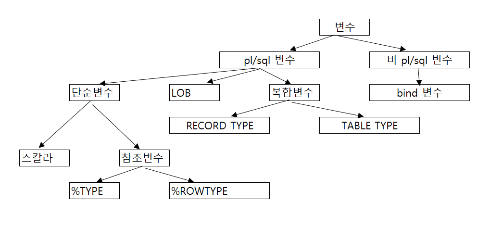

페이징
--PHASING
--OLTP (Online Transaction Processing) - 온라인 트랜잭션 처리
--OLAP (OnLine Analytical Processing) - 온라인 분석 처리
--기본 문법
--SELECT TT1.*
--FROM(
-- SELECT rownum rnum,T1.*
-- FROM (
-- SELECT *
-- FROM member
-- --검색조건
-- ORDER BY mod_dt DESC
-- ) T1
-- WHERE rownum <= 10
--) TT1
WHERE rnum >= 1;
----WHERE rnum BETWEEN 1 AND 10;
--실제 사용 예
--가장 안쪽의 select절부터 읽어나감면 됨
--가장 안쪽의 select절을 T1이라 지정
--T1은 모든 데이터를 불러오는 select절
--중간의 select절을 TT1이라 지정
--TT1는 row 수를 출력하는 함수 rownum을 칼럼 rnum으로 출력, 그리고 T1의 모든 데이터 중 무엇을
--출력할 지 지정할 수 있음. T1.*은 모두 출력, T1.name은 이름만 출력하겠다는 것
--가장 바깥의 select절은 따로 이름을 줄 필요없음
--여기서 TT1의 모든 데이터 중 무엇을 출력할 지 정할 수 있음
--where 조건을 통해 row수를 조작 가능
SELECT TT1.*
FROM(
SELECT rownum rnum,T1.*
FROM(
SELECT *
FROM emp2
ORDER BY birthday
)T1
)TT1
WHERE rnum BETWEEN 1 AND 10
;
-- RNUM NAME POSITION DEPTNO
--------- -------------------- ------------------------- ------------
-- 1 Kurt Russell Boss 0001
-- 2 Keanu Reeves Deputy Section chief 1005
-- 3 Kevin Bacon Department head 1003
-- 4 Hugh Grant Section head 1004
-- 5 Chris O'Donnell Section head 1007
-- 6 AL Pacino Department head 1000
-- 7 Gene Hackman Section head 1002
-- 8 Woody Harrelson Section head 1000
-- 9 Tommy Lee Jones Deputy department head 1001
-- 10 Val Kilmer Department head 1006
DECODE_연결연산자
--DECODE와 연결연산자를 이용하여 피벗테이블을 생성
--카운트 데이터 옆에 해당 데이터가 차지하는 비율을 출력
--기존 PIVOT 함수로는 구현이 불가능하므로 DECODE를 사용
--가장 안쪽의 SELECT문부터 읽어 나가면 쉽게 이해가능
COL "TOTAL" FOR A15
COL "SEOUL" FOR A15
COL "GYEONGGI" FOR A15
COL "BUSAN" FOR A15
COL "ULSAN" FOR A15
COL "DAEGU" FOR A15
COL "GYEONGNAM" FOR A22
SELECT TOTAL ||'EA ('|| (TOTAL/TOTAL)*100 ||'%)' "TOTAL"
,SEOUL ||'EA ('|| (SEOUL/TOTAL)*100 ||'%)' "SEOUL"
,GYEONGGI ||'EA ('|| (GYEONGGI/TOTAL)*100 ||'%)' "GYEONGGI"
,BUSAN ||'EA ('|| (BUSAN/TOTAL)*100 ||'%)' "BUSAN"
,ULSAN ||'EA ('|| (ULSAN/TOTAL)*100 ||'%)' "ULSAN"
,DAEGU ||'EA ('|| (DAEGU/TOTAL)*100 ||'%)' "DAEGU"
,GYEONGNAM ||'EA ('|| (GYEONGNAM/TOTAL)*100 ||'%)' "GYEONGNAM"
FROM (
SELECT MAX(TOTAL) "TOTAL"
,COUNT(DECODE(AREA_CD,'02' ,'1')) "SEOUL"
,COUNT(DECODE(AREA_CD,'031','1')) "GYEONGGI"
,COUNT(DECODE(AREA_CD,'051','1')) "BUSAN"
,COUNT(DECODE(AREA_CD,'052','1')) "ULSAN"
,COUNT(DECODE(AREA_CD,'053','1')) "DAEGU"
,COUNT(DECODE(AREA_CD,'055','1')) "GYEONGNAM"
FROM(
SELECT COUNT(*) OVER() "TOTAL"
,SUBSTR(tel,1,INSTR(tel,')')-1) "AREA_CD"
FROM student
)
);
--TOTAL SEOUL GYEONGGI BUSAN ULSAN DAEGU GYEONGNAM
------------- ----------- ---------- ---------- -------- ----------- -----------
--20EA (100%) 6EA (30%) 2EA (10%) 4EA (20%) 0EA (0%) 2EA (10%) 6EA (30%)
SUM_CASE
--SUM/COUNT하는 조건을 줄 수 있다.
--해당하는 조건의 데이터를 카운트 하는 경우 아래와 같이 사용하면 된다.
SELECT SUM(CASE WHEN YEAR BETWEEN 0 AND 10 THEN 1 END) "10년",
SUM(CASE WHEN YEAR BETWEEN 11 AND 15 THEN 1 END) "15년",
SUM(CASE WHEN YEAR BETWEEN 16 AND 20 THEN 1 END) "20년"
FROM(
SELECT TRUNC((SYSDATE-hire_date)/365)YEAR
FROM employees
);
-- 10년 15년 20년
------------ ---------- ----------
-- 80 27
연결연산자
--연결연산자: ||
--컬럼을 붙여서 출력
--작은 따옴표를 쓰기 위해서는 ' '(') ' ()안의 작은따옴표만 출력
--example01
SELECT ename || ' ''s job is ' || job AS "NAME AND JOB"
FROM emp;
--NAME AND JOB
--------------------------------------------------------------
--SMITH 's job is CLERK
--ALLEN 's job is SALESMAN
--WARD 's job is SALESMAN
--JONES 's job is MANAGER
--MARTIN 's job is SALESMAN
--BLAKE 's job is MANAGER
--CLARK 's job is MANAGER
--KING 's job is PRESIDENT
--TURNER 's job is SALESMAN
--JAMES 's job is CLERK
--FORD 's job is ANALYST
--MILLER 's job is CLERK
--example02
SELECT name ||' ''s ID : ' || id ||', WEIGHT is ' || weight ||'Kg' AS "ID AND WEIGHT"
FROM student;
--
--ID AND WEIGHT
------------------------------------------------------------------------------------------------------------------------------------------------------------------------------------------------------------------------------------
--James Seo 's ID : 75true, WEIGHT is 72Kg
--Rene Russo 's ID : Russo, WEIGHT is 64Kg
--Sandra Bullock 's ID : Bullock, WEIGHT is 52Kg
--Demi Moore 's ID : Moore, WEIGHT is 83Kg
--Danny Glover 's ID : Glover, WEIGHT is 70Kg
--Billy Crystal 's ID : Crystal, WEIGHT is 48Kg
--Nicholas Cage 's ID : Cage, WEIGHT is 42Kg
--Micheal Keaton 's ID : Keaton, WEIGHT is 55Kg
--Bill Murray 's ID : Murray, WEIGHT is 58Kg
--Macaulay Culkin 's ID : Culkin, WEIGHT is 54Kg
--Richard Dreyfus 's ID : Dreyfus, WEIGHT is 72Kg
--Tim Robbins 's ID : Robbins, WEIGHT is 70Kg
--Wesley Snipes 's ID : Snipes, WEIGHT is 82Kg
--Steve Martin 's ID : Martin, WEIGHT is 51Kg
--Daniel Day-Lewis 's ID : Day-Lewis, WEIGHT is 62Kg
--Danny Devito 's ID : Devito, WEIGHT is 48Kg
--Sean Connery 's ID : Connery, WEIGHT is 63Kg
--Christian Slater 's ID : Slater, WEIGHT is 69Kg
--Charlie Sheen 's ID : Sheen, WEIGHT is 81Kg
--Anthony Hopkins 's ID : Hopkins, WEIGHT is 51Kg
PLAN
1. explain plan for 입력
2. 수행할 쿼리 입력
3. col plan_table_output format a80; SELECT * FROM table(dbms_xplan.display); 입력
1. ROLLUP을 UNION ALL로 구현했을 때의 PLAN
--세부 쿼리부터 실행 후 큰 단위로 합쳐나가는 방식(UNION ALL)으로 실행될 것을 알 수 있음
--EMP 테이블이 3번 조회 되었음.
--PLAN_TABLE_OUTPUT
----------------------------------------------------------------------------------
--Plan hash value: 3259471421
-- 실행순서
-------------------------------------------------------------------------------
--| Id | Operation | Name | Rows | Bytes | Cost (%CPU)| Time |
-------------------------------------------------------------------------------
--| 0 | SELECT STATEMENT | | 15 | 190 | 12 (25)| 00:00:01 | 8
--| 1 | SORT ORDER BY | | 15 | 190 | 11 (73)| 00:00:01 | 7
--| 2 | UNION-ALL | | | | | | 6
--| 3 | HASH GROUP BY | | 11 | 165 | 4 (25)| 00:00:01 | 2
--| 4 | TABLE ACCESS FULL| EMP | 12 | 180 | 3 (0)| 00:00:01 | 1
--| 5 | HASH GROUP BY | | 3 | 21 | 4 (25)| 00:00:01 | 4
--| 6 | TABLE ACCESS FULL| EMP | 12 | 84 | 3 (0)| 00:00:01 | 3
--| 7 | SORT AGGREGATE | | 1 | 4 | | | 6
--| 8 | TABLE ACCESS FULL| EMP | 12 | 48 | 3 (0)| 00:00:01 | 5
-------------------------------------------------------------------------------
2. ROLLUP 함수를 사용하였을 때의 PLAN
--UNION ALL 방식보다 더 적은 수행단계를 가짐
--EMP테이블은 1번 조회되었음
--PLAN을 통해 UNION ALL보다 ROLLUP이 실행속도가 빠를 것임을 알 수 있음
--PLAN_TABLE_OUTPUT
----------------------------------------------------------------------------------
--Plan hash value: 52302870
-- 실행순서
-------------------------------------------------------------------------------
--| Id | Operation | Name | Rows | Bytes | Cost (%CPU)| Time |
-------------------------------------------------------------------------------
--| 0 | SELECT STATEMENT | | 11 | 165 | 4 (25)| 00:00:01 | 3
--| 1 | SORT GROUP BY ROLLUP| | 11 | 165 | 4 (25)| 00:00:01 | 2
--| 2 | TABLE ACCESS FULL | EMP | 12 | 180 | 3 (0)| 00:00:01 | 1
-------------------------------------------------------------------------------
칼럼하나 중복제거
--칼럼하나 중복제거
SELECT DISTINCT job
FROM emp
ORDER BY job;
--JOB
--------------------
--ANALYST
--CLERK
--MANAGER
--PRESIDENT
--SALESMAN
칼럼다중 중복제거
--칼럼다중 중복제거
SELECT DISTINCT ename, job
FROM emp
ORDER BY 1,2;
--ENAME JOB
---------------------- ------------------
--ALLEN SALESMAN
--BLAKE MANAGER
--CLARK MANAGER
--FORD ANALYST
--JAMES CLERK
--JONES MANAGER
--KING PRESIDENT
--MARTIN SALESMAN
--MILLER CLERK
--SMITH CLERK
--TURNER SALESMAN
--WARD SALESMAN
날짜 <,<=,>,>=
--날짜 <,<=,>,>=
SELECT ename, hiredate
FROM emp
WHERE hiredate > '81/05/01';
--ENAME HIREDATE
---------------------- --------
--MARTIN 81/09/28
--CLARK 81/06/09
--KING 81/11/17
--TURNER 81/09/08
--JAMES 81/12/03
--FORD 81/12/03
--MILLER 82/01/23
BETWEEN
--BETWEEN num AND num
--BETWEEN 보다 부등호가 연산이 빠르다
SELECT empno, ename, sal
FROM emp
WHERE sal BETWEEN 2000 AND 3000
ORDER BY sal;
-- EMPNO ENAME SAL
------------ -------------------- ----------
-- 7782 CLARK 2450
-- 7698 BLAKE 2850
-- 7566 JONES 2975
-- 7902 FORD 3000
IN
--IN(a,b,c): a이거나 b이거나 c이거나
SELECT empno, ename, deptno
FROM emp
WHERE deptno IN(10,20);
-- EMPNO ENAME DEPTNO
------------ -------------------- ----------
-- 7369 SMITH 20
-- 7566 JONES 20
-- 7782 CLARK 10
-- 7839 KING 10
-- 7902 FORD 20
-- 7934 MILLER 10
LIKE
--LIKE
--%는 *와 같다(모든것)
--_는 한 글자(어떤 글자가 와도 상관없다.)
--작은따옴표로 감싸줘야함
SELECT empno, ename, sal
FROM emp
WHERE sal LIKE '1%';
-- EMPNO ENAME SAL
------------ -------------------- ----------
-- 7499 ALLEN 1600
-- 7521 WARD 1250
-- 7654 MARTIN 1250
-- 7844 TURNER 1500
-- 7934 MILLER 1300
AND
--AND
SELECT ename,hiredate,sal
FROM emp
WHERE hiredate >= '82/01/23' AND sal >= 1300;
--ENAME HIREDATE SAL
---------------------- -------- ----------
--MILLER 82/01/23 1300
OR
--2.OR
SELECT ename,hiredate,sal
FROM emp
WHERE hiredate >= '82/01/23' OR sal >= 1300;
--ENAME HIREDATE SAL
---------------------- -------- ----------
--ALLEN 81/02/20 1600
--JONES 81/04/02 2975
--BLAKE 81/05/01 2850
--CLARK 81/06/09 2450
--KING 81/11/17 5000
--TURNER 81/09/08 1500
--FORD 81/12/03 3000
--MILLER 82/01/23 1300
AND&OR
--AND와 OR함께 사용
--우선순위는 AND > OR
--괄호를 통해 우선순위 지정가능
SELECT ename,hiredate,sal,comm
FROM emp
WHERE (sal > 1000 OR comm > 1000) AND comm IS NULL;
ENAME HIREDATE SAL COMM
---------------------- -------- ---------- ----------
--JONES 81/04/02 2975
--BLAKE 81/05/01 2850
--CLARK 81/06/09 2450
--KING 81/11/17 5000
--FORD 81/12/03 3000
--MILLER 82/01/23 1300
PARAM
--PARAM
--사용자에게 조건을 입력받아서 출력
--7369 찾기
--1.WHERE 칼럼 = &칼럼
--위와 같이 입력하면 칼럼값을 입력받아 찾아 출력한다.
SELECT ename,hiredate,sal,comm
FROM emp
WHERE empno = &empno;
--Enter value for empno: 7369
--ENAME HIREDATE SAL COMM
---------------------- -------- ---------- ----------
--SMITH 80/12/17 800
--2.SELECT에서도 조건받아 출력
SELECT ename,hiredate, sal,&age AS age
FROM emp
WHERE empno = &empno;
--ENAME HIREDATE SAL AGE
---------------------- -------- ---------- ----------
--SMITH 80/12/17 800 28
ORDER BY
--정렬하여 출력하기: ORDER BY 컬럼,컬럼
--정렬하여 출력하기: ORDER BY 1 ASC, 2 DESC
--DEFAULT는 ASC
--ORDER BY는 성능을 저하시키므로 사용하지 않는 것이 좋다.
--하지만 적은 수의 데이터의 경우에는 인덱스를 만드는 것보다 나음
--ASC
--한글: 가나다
--영문: ABC
--숫자: 1234
--날짜: 예전날짜부터
--1.sal값을 오름차순으로 정렬
SELECT ename,sal,hiredate
FROM emp
ORDER BY sal DESC;
--ENAME SAL HIREDATE
---------------------- ---------- --------
--KING 5000 81/11/17
--FORD 3000 81/12/03
--JONES 2975 81/04/02
--BLAKE 2850 81/05/01
--CLARK 2450 81/06/09
--ALLEN 1600 81/02/20
--TURNER 1500 81/09/08
--MILLER 1300 82/01/23
--MARTIN 1250 81/09/28
--WARD 1250 81/02/22
--JAMES 950 81/12/03
--SMITH 800 80/12/17
--2.칼럼순서로 정렬지정
SELECT deptno,ename,sal,hiredate
FROM emp
ORDER BY 1 DESC, 3ASC;
-- DEPTNO ENAME SAL HIREDATE
------------ -------------------- ---------- --------
-- 30 JAMES 950 81/12/03
-- 30 WARD 1250 81/02/22
-- 30 MARTIN 1250 81/09/28
-- 30 TURNER 1500 81/09/08
-- 30 ALLEN 1600 81/02/20
-- 30 BLAKE 2850 81/05/01
-- 20 SMITH 800 80/12/17
-- 20 JONES 2975 81/04/02
-- 20 FORD 3000 81/12/03
-- 10 MILLER 1300 82/01/23
-- 10 CLARK 2450 81/06/09
-- 10 KING 5000 81/11/17
UNION
--1.UNION -> 중복값제거와 정렬
--ORDER BY가 들어가 있기때문에 성능 많이 먹음
SELECT studno,name
FROM student
WHERE deptno1 = 101
UNION
SELECT studno,name
FROM student
WHERE deptno2 = 201;
-- STUDNO NAME
------------ ------------------------------------------------------------
-- 9411 James Seo
-- 9511 Billy Crystal
-- 9512 Nicholas Cage
-- 9611 Richard Dreyfus
-- 9711 Danny Devito
UNION ALL
--2.UNION ALL -> 그냥합침
SELECT studno,name
FROM student
WHERE deptno1 = 101
UNION ALL
SELECT studno,name
FROM student
WHERE deptno2 = 201;
-- STUDNO NAME
------------ ------------------------------------------------------------
-- 9411 James Seo
-- 9511 Billy Crystal
-- 9611 Richard Dreyfus
-- 9711 Danny Devito
-- 9411 James Seo
-- 9512 Nicholas Cage
INTERSECT
SELECT studno,name
FROM student
WHERE deptno1 = 101
INTERSECT
SELECT studno,name
FROM student
WHERE deptno2 = 201;
-- STUDNO NAME
------------ ------------------------------------------------------------
-- 9411 James Seo
MINUS
--4.MINUS -> 차집합
SELECT studno,name
FROM student
WHERE deptno1 = 101
MINUS
SELECT studno,name
FROM student
WHERE deptno2 = 201;
-- STUDNO NAME
------------ ------------------------------------------------------------
-- 9511 Billy Crystal
-- 9611 Richard Dreyfus
-- 9711 Danny Devito
INITCAP
--INITCAP(): 영어에서 첫 글자만 대문자로 출력
--INITCAP('ABCD') -> Abcd
SELECT ename , INITCAP(ename) "INITCAP"
FROM emp
WHERE deptno = 10;
--ENAME INITCAP
---------------------- --------------------
--CLARK Clark
--KING King
--MILLER Miller
LOWER | UPPER
--LOWER(), UPPER()
SELECT ename, LOWER(ename) "LOWER", UPPER(ename) "UPPER"
FROM emp
WHERE deptno = 10;
--ENAME LOWER UPPER
---------------------- -------------------- --------------------
--CLARK clark CLARK
--KING king KING
--MILLER miller
LENGTH | LENGTHB
--LENGTH(), LENGTHB()
--LENGTH(문자열 또는 컬럼): 입력된 문자열의 길이를 RETURN
--LENGTHB(문자열 또는 컬럼): 입력된 문자열의 길이를 BYTE로 RETURN
SELECT ename, LENGTH(ename) "LENGTH", LENGTHB(ename) "LENGTHB"
FROM emp
WHERE deptno = 10;
--ENAME LENGTH LENGTHB
---------------------- ---------- ----------
--CLARK 5 5
--KING 4 4
--MILLER 6 6
CONCAT
--CONCAT(): 두 문자열을 결합해서 출력. ||연산자와 동일
--CONCAT('A','B') -> AB
SELECT CONCAT(ename,job)
FROM emp
WHERE deptno = 10;
--CONCAT(ENAME,JOB)
----------------------------------------
--CLARKMANAGER
--KINGPRESIDENT
--MILLERCLERK
SUBSTR
--SUBSTR(): 주어진 문자열에서 특정 길이의 문자를 잘라 낼때 사용
--SUBSTR('문자열 또는 컬럼',num1,num2)
--num1부터 num2개만큼 출력
--num1이 양수이면 왼쪽에서 num1부터 num2개만큼 출력
--num1이 음수이면 오른쪽에서 num1부터 num2개만큼 출력
COL "3,2" FOR a6
COL "-3,2" FOR a6
COL "-3,4" FOR a6
SELECT SUBSTR('ABCDE',3,2) "3,2",SUBSTR('ABCDE',-3,2) "-3,2",SUBSTR('ABCDE',-3,4) "-3,4"
FROM dual;
--3,2 -3,2 -3,4
-------- ------ ------
--CD CD CDE
SELECT name, jumin , SUBSTR(jumin,3,4) "BIRTHDAY", SUBSTR(jumin,3,4)-1 "BIRTHDAY -1"
from student
WHERE deptno1 = 101;
--NAME JUMIN BIRTHDAY BIRTHDAY -1
----------------- ------------- -------------- -----------
--James Seo 7510231901813 1023 1022
--Billy Crystal 7601232186327 0123 122
--Richard Dreyfus 7711291186223 1129 1128
--Danny Devito 7808192157498 0819 818
INSTR
--INSTR(): 주어진 문자열에서 특정 글자의 위치를 찾아주는 함수
--INSTR(문자열 또는 칼럼, char, num(DEFAULT 1))
--문자열 또는 칼럼에서 num번째 글자부터 char의 위치를 찾아 반환
--ex.INSTR('ABADA','A',2) -> 3 (B부터 탐색시작)
--num이 음수이면 오른쪽에서 부터
SELECT 'A-B-C-D', INSTR('A-B-C-D','-')"INSTR"
FROM dual;
--'A-B-C-D' INSTR
---------------- -----
--A-B-C-D 2
SELECT 'A-B-C-D', INSTR('A-B-C-D','-',3)"INSTR"
FROM dual;
--'A-B-C-D' INSTR
---------------- -----
--A-B-C-D 4
SELECT 'A-B-C-D', INSTR('A-B-C-D','-',-1)"INSTR"
FROM dual;
--'A-B-C-D' INSTR
---------------- -----
--A-B-C-D 6
COL name FOR a16
COL tel FOR a14
COL "INSTR" FOR 9
COL "SUBSTR" FOR a4
SELECT name, tel, INSTR(tel,')') "INSTR", SUBSTR(tel,1,INSTR(tel,')')-1) "SUBSTR"
FROM student
WHERE deptno1 = 201;
--NAME TEL INSTR SUBS
------------------ -------------- ----- ----
--Demi Moore 02)6255-9875 3 02
--Macaulay Culkin 02)312-9838 3 02
--Wesley Snipes 053)736-4981 4 053
--Steve Martin 02)6175-3945 3 02
--Sean Connery 02)381-5440 3 02
--Christian Slater 031)345-5677 4 031
LPAD
--LPAD(): 주어진 문자열에서 왼쪽으로 특정문자를 채움
--LPAD('love',6,'*') -> **love
COL name FOR a16
COL ID FOR a10
COL "10LENGTH WITH *" FOR a20
SELECT name, ID, LPAD(ID,10,'*') "10LENGTH WITH *"
FROM student
WHERE deptno1 = 201;
--NAME ID 10LENGTH WITH *
------------------ ---------- --------------------
--Demi Moore Moore *****Moore
--Macaulay Culkin Culkin ****Culkin
--Wesley Snipes Snipes ****Snipes
--Steve Martin Martin ****Martin
--Sean Connery Connery ***Connery
--Christian Slater Slater ****Slater
--LPAD연습문제
--emp테이블, deptno가 10번인 사원들의 ename을 총 9바이트로 출력하되
--빈자리에는 해당 자리의 숫자로 채우시오
--ex.1234CLARK
SELECT LPAD(ename,9,'123456789') "LPAD"
FROM emp
WHERE deptno = 10;
--LPAD
---------------
--1234CLARK
--12345KING
--123MILLER
RPAD
--RPAD(): 주어진 문자열에서 오른쪽으로 특정문자를 채움
--RPAD('love',6,'*') -> love**
SELECT RPAD(ename,10,'*')
FROM emp
WHERE deptno = 10;
--RPAD(ENAME,10,'*')
------------------
--CLARK*****
--KING******
--MILLER****
--RPAD연습문제
--emp테이블, deptno가 10번인 사원들의 ename을 총 9자리로 출력하되
--오른쪽 빈자리에는 해당 자릿수에 해당되는 숫자를 출력되도록 하세요.
SELECT RPAD(ename,9,SUBSTR('123456789',LENGTH(ename)+1))"RPAD"
FROM emp
WHERE deptno = 10;
--RPAD
------------------
--CLARK6789
--KING56789
--MILLER789
LTRIM | RTRIM
--LTRIM(): 주어진 문자열에서 왼쪽의 특정 문자를 삭제
--LTRIM('*love','*') -> love
--RTRIM(): 주어진 문자열에서 오른쪽의 특정 문자를 삭제
--RTRIM('love*','*') -> love
SELECT ename, LTRIM(ename,'C'), RTRIM(ename,'R')
FROM emp
WHERE deptno = 10;
--ENAME LTRIM(ENAME,'C') RTRIM(ENAME,'R')
---------------------- -------------------- --------------------
--CLARK LARK CLARK
--KING KING KING
--MILLER MILLER MILLE
REPLACE
--REPLACE(): 주어진 문자열에서 A를 B로 치환
--REPLACE('AB','A','E') -> EB
SELECT ename, REPLACE(ename,SUBSTR(ename,1,2),'**')"**name"
FROM emp
WHERE deptno = 10;
--ENAME **name
---------------------- -----------
--CLARK **ARK
--KING **NG
--MILLER **LLER
--REPLACE연습문제1
--emp테이블, dept가 20, 소속된 직원들의 ename과 2~3번째 글자만 '-'으로 변경하여 출력
SELECT ename, REPLACE(ename,SUBSTR(ename,3,2),'--')"REPLACE"
FROM emp
WHERE deptno = 20;
--ENAME REPLACE
---------------------- ----------------------------------------
--SMITH SM--H
--JONES JO--S
--FORD FO--
--REPLACE연습문제2
--student테이블, deptno1이 101, name, jumin과 뒤의 일곱자리가 -와 /로 교대로 출력되게 하시오
SELECT name, jumin, REPLACE(jumin,SUBSTR(jumin,7),'-/-/-/-')"REPLACE"
FROM student
WHERE deptno1 = 101;
--NAME JUMIN REPLACE
------------------ ------------- -----------------
--James Seo 7510231901813 751023-/-/-/-
--Billy Crystal 7601232186327 760123-/-/-/-
--Richard Dreyfus 7711291186223 771129-/-/-/-
--Danny Devito 7808192157498 780819-/-/-/-
--REPLACE연습문제3
--student테이블, deptno1이 102, name, tel, 국번을 '*'처리하여 출력
SELECT name, tel, REPLACE(tel,SUBSTR(tel,5,3),'***')"REPLACE"
FROM student
WHERE deptno1 = 102;
--NAME TEL REPLACE
------------------ -------------- -----------------
--Rene Russo 051)426-1700 051)***-1700
--Nicholas Cage 051)418-9627 051)***-9627
--Tim Robbins 055)488-2998 055)***-2998
--Charlie Sheen 055)423-9870 055)***-9870
--REPLACE연습문제4
--student테이블, deptno1이 101, name, tel, 지역번호와 국번외의 번호를 '*'처리 출력
SELECT name, tel
, REPLACE
(tel
,SUBSTR(tel,INSTR(tel,'-',-1)+1,LENGTH(SUBSTR(tel,INSTR(tel,'-',-1)+1)))
--전화번호에서 가장 오른쪽에 있는 '-'의 위치 = INSTR(tel,'-',-1)
--가장 마지막 번호나열은 = INSTR(tel,'-',-1)+1 부터
--그 번호나열의 길이는 = LENGTH(SUBSTR(tel,INSTR(tel,'-',-1)+1))
,'****')
"REPLACE"
FROM student
WHERE deptno1 = 101;
--NAME TEL REPLACE
------------------ -------------- ---------------
--James Seo 055)381-2158 055)381-****
--Billy Crystal 055)333-6328 055)333-****
--Richard Dreyfus 02)6788-4861 02)6788-****
--Danny Devito 055)278-3649 055)278-****
ROUND
--ROUND(num1, num2): 주어진 숫자를 반올림한 후 출력함
--num1의 소숫점을 num2자리로 반올림. num2를 따로 지정안하면 소수 첫째자리에서 반올림
--ROUND(12.345,2) -> 12.35
SELECT ROUND(987.654), ROUND(987.654,1), ROUND(987.654,2), ROUND(987.654,-1)
FROM dual;
--ROUND(987.654) ROUND(987.654,1) ROUND(987.654,2) ROUND(987.654,-1)
---------------- ---------------- ---------------- -----------------
-- 988 987.7 987.65 990
TRUNC
--TRUNC(num1, num2): 소숫값을 버림
--num1의 소수 자리를 num2자리로 맞추고 소숫값은 버림. num2를 따로 지정안하면 소수 첫째자리에서 올림
--TRUNC(12.345,2) -> 12.34
SELECT TRUNC(987.654), TRUNC(987.654,1), TRUNC(987.654,2), TRUNC(987.654,-1)
FROM dual;
--TRUNC(987.654) TRUNC(987.654,1) TRUNC(987.654,2) TRUNC(987.654,-1)
---------------- ---------------- ---------------- -----------------
-- 987 987.6 987.65 980
MOD
--MOD(num1, num2): 주어진 숫자를 나눈 후 나머지 값을 출력함
--num1을 num2로 나눈 나머지
--MOD(12,2) -> 2
SELECT MOD(121,10)
FROM dual;
--MOD(121,10)
-------------
-- 1
CEIL
--CEIL(num1): 주어진 숫자와 가장 근접한 큰 정수를 출력함
--CELL(12.345) -> 13
SELECT CEIL(121.10)
FROM dual;
--CEIL(121.10)
--------------
-- 122
--CEIL을 이용한 페이징
SELECT rownum, CEIL(rownum/3), ename
FROM emp;
-- ROWNUM CEIL(ROWNUM/3) ENAME
------------ -------------- --------------------
-- 1 1 SMITH
-- 2 1 ALLEN
-- 3 1 WARD
-- 4 2 JONES
-- 5 2 MARTIN
-- 6 2 BLAKE
-- 7 3 CLARK
-- 8 3 KING
-- 9 3 TURNER
-- 10 4 JAMES
-- 11 4 FORD
-- 12 4 MILLER
FLOOR
--FLOOR(num1): 주어진 숫자와 가장 근접한 작은 정수를 출력함
--FLOOR(12.345) -> 12
SELECT FLOOR(121.10)
FROM dual;
--FLOOR(121.10)
---------------
-- 121
POWER
--POWER(num1, num2): 주어진 숫자 1의 숫자2제곱을 출력함.
--num1의 num2제곱
--POWER(3,2) -> 9
SELECT POWER(2,5)
FROM dual;
--POWER(2,5)
------------
-- 32
ABS
--ABS(num): 주어진 숫자의 절대값을 출력
SELECT ABS(-33)
FROM dual;
-- ABS(-33)
------------
-- 33
SIGN
--SIGN(): 숫자가 양수인지 음수인지, 0인지 구분
SELECT SIGN(33),SIGN(-33),SIGN(0)
FROM dual;
-- SIGN(33) SIGN(-33) SIGN(0)
------------ ---------- ----------
-- 1 -1 0
SYSDATE
--SYSDATE: 시스템의 현재 날짜와 시간
--ALTER SESSION SET NLS_DATE_FORMAT = 'RRRR-MM-DD:HH24:MI:SS';
--데이트 포맷을 바꿔줌
SELECT SYSDATE
FROM dual;
--SYSDATE
---------------------
--2021-02-01:09:19:49
MONTHS_BETWEEN
--MONTHS_BETWEEN: 두 날짜 사이의 개월 수
SELECT MONTHS_BETWEEN('2021/04/14','2021/02/01')"SUBTRACT"
,MONTHS_BETWEEN('2021/02/01','2021/04/01')"SUBTRACT2"
,MONTHS_BETWEEN('2021/02/01','2021/02/01')"SUBTRACT3"
FROM dual;
-- SUBTRACT SUBTRACT2 SUBTRACT3
------------ ---------- ----------
--2.41935484 -2 0
ADD_MONTHS
--ADD_MONTHS: 주어진 날짜에 개월을 더함
COL "ADD_ONE_MONTH" FOR a15
COL "SUBTRACT_TWO_MONTH" FOR a20
SELECT SYSDATE
,ADD_MONTHS(SYSDATE, 1)"ADD_ONE_MONTH"
,ADD_MONTHS(SYSDATE, -2)"SUBTRACT_TWO_MONTH"
FROM dual;
--SYSDATE ADD_ONE_MONTH SUBTRACT_TWO_MONTH
---------- --------------- --------------------
--21/02/01 21/03/01 20/12/01
NEXT_DAY
--NEXT_DAY: 주어진 날짜를 기준으로 돌아오는 날짜 출력
--WINDOWS: NEXT_DAY(SYSDATE,'수')
--UNIX: NEXT_DAY(SYSDATE,'WED')
SELECT SYSDATE
,NEXT_DAY(SYSDATE,'수')
FROM dual;
--SYSDATE NEXT_DAY
---------- --------
--21/02/01 21/02/03
LAST_DAY
--LAST_DAY: 주어진 날짜가 속한 달의 마지막 날짜출력
SELECT SYSDATE
,LAST_DAY(SYSDATE)
FROM dual;
--SYSDATE LAST_DAY
---------- --------
--21/02/01 21/02/28
ROUND/TRUNC
--ROUND: 주어진 날짜를 반올림
--예)상품접수 및 배송(12:00 이후 그 다음날)
--TRUNC: 주어진 날짜를 버림
--예)원서접수(무조건 당일)
COL ROUND(SYSDATE) FOR A15
COL TRUNC(SYSDATE) FOR A15
SELECT SYSDATE
,ROUND(SYSDATE)
,TRUNC(SYSDATE)
FROM dual;
SYSDATE ROUND(SYSDATE) TRUNC(SYSDATE)
-------- --------------- ---------------
21/02/09 21/02/10 21/02/09
EXTRACT
--EXTRACT: 날짜에서 년,월,일 추출
SELECT ename, hiredate
,EXTRACT(YEAR FROM hiredate)"입사년도"
,EXTRACT(MONTH FROM hiredate)"입사월"
,EXTRACT(DAY FROM hiredate)"입사일"
FROM emp;
--ENAME HIREDATE 입사년도 입사월 입사일
---------------------- -------- ---------- ---------- ----------
--SMITH 80/12/17 1980 12 17
--ALLEN 81/02/20 1981 2 20
--WARD 81/02/22 1981 2 22
--JONES 81/04/02 1981 4 2
--MARTIN 81/09/28 1981 9 28
--BLAKE 81/05/01 1981 5 1
--CLARK 81/06/09 1981 6 9
--KING 81/11/17 1981 11 17
--TURNER 81/09/08 1981 9 8
--JAMES 81/12/03 1981 12 3
--FORD 81/12/03 1981 12 3
--MILLER 82/01/23 1982 1 23
DATA_TYPE
--CHAR(n): 고정길이의 문자를 저장, 최댓값은 2000바이트(꼭 고정된 길이의 데이터에만 쓸 것)
--VARCHAR2(n): 변하는 길이의 문자를 저장, 최댓값은 4000바이트
--NUMBER(p,s): 숫자 값을 저장, P는 전체 자릿수로 1~38자리까지 가능, s는 소술점 이하 자릿수로 -84~127자리까지 가능
--DATE: 총 7바이트로 BC4712년 1월 1일부터 AD9999년 12월 31일까지의 날짜를 저장가능
--LONG: 가변길이의 문자를 저장하며 최대 2GB까지 저장가능(앞으로 없어질 가능성이 있으므로 사용자제)
--CLOB: 가변길이의 문자를 저장하며 최대 4GB까지 저장가능
--BLOB: 가변길이의 바이너리 데이터를 최대 4GB까지 저장가능
--RAW(n): 원시이진 데이터로 최대 2000바이트까지 저장가능
--LONG RAW(n): 원시이진 데이터로 최대 2GB까지 저장가능
--BFILE: 외부파일에 저장된 데이터로 최대 4GB까지 저장가능
--묵시적(자동) 형변환
--해당컬럼에 인덱스가 생성되어 있을 경우 못쓰게 되어 속도가 느려짐
SELECT '11'+'13'
FROM dual;
-- '11'+'13'
------------
TO_CHAR(DATE_TO_CHAR)
--TO_CHAR: 날짜 -> 문자
--TO_CHAR(SYSDATE, 'YYYY-MM-DD HH24:MI:SS')
| 종류 |
의미 |
사용예 |
| YYYY |
연도를 4자리로 표시 |
2021 |
| RRRR |
위와 동일 |
2021 |
| YY |
연도의 끝자리 2자리 |
21 |
| RR |
위와 동일 |
21 |
| YEAR |
연도의 영문명 전체 |
TWENTY TWENTY ONE |
| MM |
월을 숫자 2자리로 |
02 |
| MON |
월(유닉스는 영3글자,윈도우는 MONTH와 동일) |
FEB |
v
| MONTH |
월의 영문명 전체 |
FEBRUARY |
| DD |
일을 숫자 2자리로 |
26 |
| DAY |
요일(유닉스는 영문,윈도우는 한글) |
월요일 |
| DDTH |
몇 번째 날인지를 표시 |
22ND |
| HH24 |
하루를 24시간으로 표시 |
23 |
| HH |
하루를 12시간으로 표시 |
11 |
| MI |
분 |
20 |
| SS |
초 |
30 |
SELECT SYSDATE
,TO_CHAR(SYSDATE, 'YYYY')"YYYY"
,TO_CHAR(SYSDATE, 'MM')"MM"
,TO_CHAR(SYSDATE, 'DD')"DD"
,TO_CHAR(SYSDATE, 'YYYY-MM-DD HH24:MI:SS')"YYYY-MM-DD HH24:MI:SS"
FROM dual;
--SYSDATE YYYY MM DD YYYY-MM-DD HH24:MI:SS
---------- -------- ---- ---- --------------------------------------
--21/02/01 2021 02 01 2021-02-01 10:43:00
--P105퀴즈
SELECT studno, name, TO_CHAR(birthday, 'DD-MM-YY')
FROM student
WHERE EXTRACT(MONTH FROM birthday) = 1;
-- STUDNO NAME TO_CHAR(BIRTHDAY
------------ ------------------------- ----------------
-- 9511 Billy Crystal 23-01-76
-- 9514 Bill Murray 20-01-76
-- 9712 Sean Connery 05-01-78
--p106퀴즈
SELECT empno, ename, hiredate
FROM emp
WHERE EXTRACT(MONTH FROM hiredate) IN(1,2,3);
-- EMPNO ENAME HIREDATE
------------ -------------------- --------
-- 7499 ALLEN 81/02/20
-- 7521 WARD 81/02/22
-- 7934 MILLER 82/01/23
TO_CHAR(NUMBER_TO_CHAR)
--TO_CHAR: 숫자 -> 문자
--종류 의미 예 결과
-- 9 | 9의 개수만큼 자릿수 | TO_CHAR(1234,'99999') | 1234
-- 0 | 빈자리를 0으로 채움 | TO_CHAR(1234,'099999') | 001234
-- $ | $표시를 붙여서 표시 | TO_CHAR(1234,'$9999') | $1234
-- . | 소숫점 이하를 표시 | TO_CHAR(1234,'9999.99') | 1234.00
-- , | 천단위 구분을 표시 | TO_CHAR(12345,'99,999') | 12,345
SELECT empno, ename, sal, comm, TO_CHAR((sal*12)+comm,'$99,999')"SALARY"
FROM emp
WHERE ename = 'ALLEN';
-- EMPNO ENAME SAL COMM SALARY
------------ -------------------- ---------- ---------- ----------------
-- 7499 ALLEN 1600 300 $19,500
--108P 퀴즈
SELECT empno, ename
,TO_CHAR(hiredate,'YYYY-MM-DD')"HIREDATE"
,TO_CHAR(sal*12+comm,'$999,999')"SAL"
,TO_CHAR((sal*12+comm)*1.15,'$999,999')"15% UP"
FROM emp
WHERE comm IS NOT NULL;
-- EMPNO ENAME HIREDATE SAL 15% UP
------------ -------------------- -------------------- ------------------ ------------------
-- 7499 ALLEN 1981-02-20 $19,500 $22,425
-- 7521 WARD 1981-02-22 $15,500 $17,825
-- 7654 MARTIN 1981-09-28 $16,400 $18,860
-- 7844 TURNER 1981-09-08 $18,000 $20,700
TO_NUMBER
--TO_NUMBER: 숫자가 아닌 숫자문자를 숫자로 바꾸어주는 함수
SELECT TO_NUMBER('5')
FROM dual;
--TO_NUMBER('5')
----------------
-- 5
SELECT ASCII('A')
FROM dual;
--ASCII('A')
------------
-- 65
TO_DATE
--TO_DATE: 날짜가 아닌 날짜처럼 생긴 문자를 날짜로 바꿔주는 함수
SELECT TO_DATE('20210201')"date"
FROM dual;
--date
----------
--21/02/01
NVL
--NVL(컬럼,치환값): NULL값을 만나면 치환값을 출력
SELECT ename, comm
,NVL(comm,0)"NVL"
,comm*10
,NVL(comm*10,0)"NVL*10"
FROM emp
WHERE deptno = 30;
--ENAME COMM NVL COMM*10 NVL*10
---------------------- ---------- ---------- ---------- ----------
--ALLEN 300 300 3000 3000
--WARD 500 500 5000 5000
--MARTIN 1400 1400 14000 14000
--BLAKE 0 0
--TURNER 0 0 0 0
--JAMES 0 0
--연습
SELECT profno, name, pay, NVL(bonus,0), pay*12+NVL(bonus,0)"TOTAL"
FROM professor
WHERE deptno = 201;
-- PROFNO NAME PAY NVL(BONUS,0) TOTAL
------------ ---------------------------------------- ---------- ------------ ----------
-- 4001 Meryl Streep 570 130 6970
-- 4002 Susan Sarandon 330 0 3960
NVL2
--NVL2(COL1, COL2, COL3): COL1이 NULL값이 아니면 COL2를, NULL이면 COL3를 출력
SELECT ename, empno, sal, comm, NVL2(comm,sal*comm,sal*0)"NVL2"
FROM emp
WHERE deptno = 30;
--ENAME EMPNO SAL COMM NVL2
---------------------- ---------- ---------- ---------- ----------
--ALLEN 7499 1600 300 480000
--WARD 7521 1250 500 625000
--MARTIN 7654 1250 1400 1750000
--BLAKE 7698 2850 0
--TURNER 7844 1500 0 0
--JAMES 7900 950 0
--113p퀴즈
SELECT empno, ename, comm, NVL2(comm,'Exist','NULL')"NVL2"
FROM emp
WHERE deptno = 30;
-- EMPNO ENAME COMM NVL2
------------ -------------------- ---------- ----------
-- 7499 ALLEN 300 Exist
-- 7521 WARD 500 Exist
-- 7654 MARTIN 1400 Exist
-- 7698 BLAKE NULL
-- 7844 TURNER 0 Exist
-- 7900 JAMES NULL
DECODE
--DECODE: 자바에서 사용하는 IF문을 오라클로 가져온 함수(오라클에만 있음)
--유형1.
--DECODE(A,B,1,NULL) (단 마지막의 NULL은 생략가능)
-- A가 B일 경우 1을 출력
--DECODE(A,B,1) (단 마지막의 NULL은 생략가능)
SELECT deptno, name, DECODE(deptno,101,'Computer Engineering',NULL)
FROM professor;
-- DEPTNO NAME DNAME
------------ ---------------------------------------- ----------------------------------------
-- 101 Audie Murphy Computer Engineering
-- 101 Angela Bassett Computer Engineering
-- 101 Jessica Lange Computer Engineering
-- 102 Winona Ryder
-- 102 Michelle Pfeiffer
-- 102 Whoopi Goldberg
-- 103 Emma Thompson
-- 103 Julia Roberts
-- 103 Sharon Stone
-- 201 Meryl Streep
-- 201 Susan Sarandon
-- 202 Nicole Kidman
-- 202 Holly Hunter
-- 203 Meg Ryan
-- 301 Andie Macdowell
-- 301 Jodie Foster
--유형2. DECODE(A,B,1,2)
--A가 B일 경우 '1'을, 아니면 '2'를 출력
SELECT name, DECODE(deptno,101,'Computer Engineering','ETC')"DNAME"
FROM professor;
--NAME DNAME
------------------------------------------ ----------------------------------------
--Audie Murphy Computer Engineering
--Angela Bassett Computer Engineering
--Jessica Lange Computer Engineering
--Winona Ryder ETC
--Michelle Pfeiffer ETC
--Whoopi Goldberg ETC
--Emma Thompson ETC
--Julia Roberts ETC
--Sharon Stone ETC
--Meryl Streep ETC
--Susan Sarandon ETC
--Nicole Kidman ETC
--Holly Hunter ETC
--Meg Ryan ETC
--Andie Macdowell ETC
--Jodie Foster ETC
--유형3. DECODE(A,B,1,C,2,3)
--IF(A==B) -> 1
--ELSE IF(A==C) -> 2
--ELSE -> 3
SELECT name, deptno
,DECODE(deptno,101,'Computer Engineering'
,102,'Multimedia Engineering'
,103,'Software Engineering'
,'ETC')"DNAME"
FROM professor;
--NAME DEPTNO DNAME
------------------------------------------ ---------- --------------------------------------------
--Audie Murphy 101 Computer Engineering
--Angela Bassett 101 Computer Engineering
--Jessica Lange 101 Computer Engineering
--Winona Ryder 102 Multimedia Engineering
--Michelle Pfeiffer 102 Multimedia Engineering
--Whoopi Goldberg 102 Multimedia Engineering
--Emma Thompson 103 Software Engineering
--Julia Roberts 103 Software Engineering
--Sharon Stone 103 Software Engineering
--Meryl Streep 201 ETC
--Susan Sarandon 201 ETC
--Nicole Kidman 202 ETC
--Holly Hunter 202 ETC
--Meg Ryan 203 ETC
--Andie Macdowell 301 ETC
--Jodie Foster 301 ETC
--유형4. DECODE(A,B,DECODE(C,D,1,NULL)) (NULL은 생략가능)
--IF(A==B){
-- IF(C==D){
-- 1
-- }
--}
SELECT deptno,name
,DECODE(deptno,101,DECODE(name,'Audie Murphy','BEST!'))"DNAME"
FROM professor;
-- DEPTNO NAME DNAME
------------ ---------------------------------------- ----------
-- 101 Audie Murphy Best!
-- 101 Angela Bassett
-- 101 Jessica Lange
-- 102 Winona Ryder
-- 102 Michelle Pfeiffer
-- 102 Whoopi Goldberg
-- 103 Emma Thompson
-- 103 Julia Roberts
-- 103 Sharon Stone
-- 201 Meryl Streep
-- 201 Susan Sarandon
-- 202 Nicole Kidman
-- 202 Holly Hunter
-- 203 Meg Ryan
-- 301 Andie Macdowell
-- 301 Jodie Foster
--유형5.
--DECODE(A,B,DECODE(C,D,'1','2'),'3')
--IF(A==B){
-- IF(C==D){
-- 1
-- }ELSE '2'
--}ELSE '3'
SELECT deptno,name
,DECODE(deptno,101,DECODE(name,'Audie Murphy','BEST!','GOOD!'),'NOT MY MAJOR')"DNAME"
FROM professor;
-- DEPTNO NAME DNAME
------------ ---------------------------------------- ------------------------
-- 101 Audie Murphy BEST!
-- 101 Angela Bassett GOOD!
-- 101 Jessica Lange GOOD!
-- 102 Winona Ryder NOT MY MAJOR
-- 102 Michelle Pfeiffer NOT MY MAJOR
-- 102 Whoopi Goldberg NOT MY MAJOR
-- 103 Emma Thompson NOT MY MAJOR
-- 103 Julia Roberts NOT MY MAJOR
-- 103 Sharon Stone NOT MY MAJOR
-- 201 Meryl Streep NOT MY MAJOR
-- 201 Susan Sarandon NOT MY MAJOR
-- 202 Nicole Kidman NOT MY MAJOR
-- 202 Holly Hunter NOT MY MAJOR
-- 203 Meg Ryan NOT MY MAJOR
-- 301 Andie Macdowell NOT MY MAJOR
-- 301 Jodie Foster NOT MY MAJOR
--연습1
SELECT name, jumin, DECODE(SUBSTR(jumin,7,1),'1','MAN','WOMEN')"Gender"
FROM student
WHERE deptno1 = 101;
--NAME JUMIN Gender
---------------------- -------------------------- ----------
--James Seo 7510231901813 MAN
--Billy Crystal 7601232186327 WOMEN
--Richard Dreyfus 7711291186223 MAN
--Danny Devito 7808192157498 WOMEN
--연습2
COL name FOR a20
SELECT name, tel
,DECODE(SUBSTR(tel,1,INSTR(tel,')')-1),'02','SEOUL'
,'031','GYEONGGI'
,'051','BUSAN'
,'052','ULSAN'
,'055','GYEONGNAM'
,'ETC'
)"LOC"
FROM student;
--NAME TEL LOC
---------------------- ------------------------------ ------------------
--James Seo 055)381-2158 GYEONGNAM
--Rene Russo 051)426-1700 BUSAN
--Sandra Bullock 053)266-8947 ETC
--Demi Moore 02)6255-9875 SEOUL
--Danny Glover 031)740-6388 GYEONGGI
--Billy Crystal 055)333-6328 GYEONGNAM
--Nicholas Cage 051)418-9627 BUSAN
--Micheal Keaton 051)724-9618 BUSAN
--Bill Murray 055)296-3784 GYEONGNAM
--Macaulay Culkin 02)312-9838 SEOUL
--Richard Dreyfus 02)6788-4861 SEOUL
--Tim Robbins 055)488-2998 GYEONGNAM
--Wesley Snipes 053)736-4981 ETC
--Steve Martin 02)6175-3945 SEOUL
--Daniel Day-Lewis 051)785-6984 BUSAN
--Danny Devito 055)278-3649 GYEONGNAM
--Sean Connery 02)381-5440 SEOUL
--Christian Slater 031)345-5677 GYEONGGI
--Charlie Sheen 055)423-9870 GYEONGNAM
--Anthony Hopkins 02)6122-2345 SEOUL
CASE
--CASE VS DECODE
--DECODE는 == 조건인 경우
--CASE는 == 조건이 아닌경우
--CASE 조건 WHEN 결과 THEN 출력 END
SELECT name, tel
,CASE(SUBSTR(tel,1,INSTR(tel,')')-1)) WHEN '02' THEN 'SEOUL'
WHEN '031' THEN 'GYEONGGI'
WHEN '051' THEN 'BUSAN'
WHEN '052' THEN 'ULSAN'
WHEN '055' THEN 'GYEONGNAM'
ELSE 'ETC'
END "LOC"
FROM student;
--NAME TEL LOC
---------------------- ------------------------------ ------------------
--James Seo 055)381-2158 GYEONGNAM
--Rene Russo 051)426-1700 BUSAN
--Sandra Bullock 053)266-8947 ETC
--Demi Moore 02)6255-9875 SEOUL
--Danny Glover 031)740-6388 GYEONGGI
--Billy Crystal 055)333-6328 GYEONGNAM
--Nicholas Cage 051)418-9627 BUSAN
--Micheal Keaton 051)724-9618 BUSAN
--Bill Murray 055)296-3784 GYEONGNAM
--Macaulay Culkin 02)312-9838 SEOUL
--Richard Dreyfus 02)6788-4861 SEOUL
--Tim Robbins 055)488-2998 GYEONGNAM
--Wesley Snipes 053)736-4981 ETC
--Steve Martin 02)6175-3945 SEOUL
--Daniel Day-Lewis 051)785-6984 BUSAN
--Danny Devito 055)278-3649 GYEONGNAM
--Sean Connery 02)381-5440 SEOUL
--Christian Slater 031)345-5677 GYEONGGI
--Charlie Sheen 055)423-9870 GYEONGNAM
--Anthony Hopkins 02)6122-2345 SEOUL
--비교조건이 == 이 아닌경우
COL "QUARTER" FOR a10
SELECT name, jumin
, CASE WHEN SUBSTR(jumin,3,2) BETWEEN '01' AND '03' THEN '1/4'
WHEN SUBSTR(jumin,3,2) BETWEEN '04' AND '07' THEN '2/4'
WHEN SUBSTR(jumin,3,2) BETWEEN '07' AND '10' THEN '3/4'
WHEN SUBSTR(jumin,3,2) BETWEEN '10' AND '12' THEN '4/4'
END "QUARTER"
FROM student;
--NAME JUMIN QUARTER
---------------------- -------------------------- ----------
--James Seo 7510231901813 3/4
--Rene Russo 7502241128467 1/4
--Sandra Bullock 7506152123648 2/4
--Demi Moore 7512251063421 4/4
--Danny Glover 7503031639826 1/4
--Billy Crystal 7601232186327 1/4
--Nicholas Cage 7604122298371 2/4
--Micheal Keaton 7609112118379 3/4
--Bill Murray 7601202378641 1/4
--Macaulay Culkin 7610122196482 3/4
--Richard Dreyfus 7711291186223 4/4
--Tim Robbins 7704021358674 2/4
--Wesley Snipes 7709131276431 3/4
--Steve Martin 7702261196365 1/4
--Daniel Day-Lewis 7712141254963 4/4
--Danny Devito 7808192157498 3/4
--Sean Connery 7801051776346 1/4
--Christian Slater 7808091786954 3/4
--Charlie Sheen 7803241981987 1/4
--Anthony Hopkins 7802232116784 1/4
--123p 퀴즈
SELECT empno, ename, sal
,CASE WHEN sal BETWEEN 1 AND 1000 THEN 'LEVEL 1'
WHEN sal BETWEEN 1001 AND 2000 THEN 'LEVEL 2'
WHEN sal BETWEEN 2001 AND 3000 THEN 'LEVEL 3'
WHEN sal BETWEEN 3001 AND 4000 THEN 'LEVEL 4'
WHEN sal > 4001 THEN 'LEVEL 5'
END "LEVEL"
FROM emp
ORDER BY 4 DESC;
-- EMPNO ENAME SAL LEVEL
------------ -------------------- ---------- --------------
-- 7839 KING 5000 LEVEL 5
-- 7698 BLAKE 2850 LEVEL 3
-- 7902 FORD 3000 LEVEL 3
-- 7782 CLARK 2450 LEVEL 3
-- 7566 JONES 2975 LEVEL 3
-- 7934 MILLER 1300 LEVEL 2
-- 7654 MARTIN 1250 LEVEL 2
-- 7844 TURNER 1500 LEVEL 2
-- 7521 WARD 1250 LEVEL 2
-- 7499 ALLEN 1600 LEVEL 2
-- 7900 JAMES 950 LEVEL 1
-- 7369 SMITH 800 LEVEL 1
META_CHARACTER
--^ : 문자열 시작
--$ : 문자열 종료
--. : 임의의 문자 [단 ‘'는 넣을 수 없습니다.]
--* : 앞 문자가 0개 이상의 개수가 존재할 수 있습니다.
--+ : 앞 문자가 1개 이상의 개수가 존재할 수 있습니다.
--? : 앞 문자가 없거나 하나 있을 수 있습니다.
--[] : 문자의 집합이나 범위를 표현합니다. -기호를 통해 범위를 나타낼 수 있습니다. ^가 존재하면 not을 나타냅니다.
--{} : 횟수 또는 범위를 나타냅니다.
--() : 괄호안의 문자를 하나의 문자로 인식합니다.
--| : 패턴을 OR 연산을 수행할 때 사용합니다.
--\s : 공백 문자
--\S : 공백 문자가 아닌 나머지 문자
--\w : 알파벳이나 문자
--\W : 알파벳이나 숫자를 제외한 문자
--\d : [0-9] 숫자
--\D : 숫자를 제외한 모든 문자
--(?i) : 대소문자를 구분하지 않습니다.
REGEXP_LIKE
-- REGEXP_LIKE: LIKE연산과 유사한 정규식
--유형 1. 특정문자가 들어있는 데이터 출력
--소문자가 들어있는 텍스트 추출('[a-z]')
--대문자가 들어있는 텍스트 추출('[A-Z]')
--영문자가 들어있는 텍스트 추출('[a-zA-Z]')
SELECT *
FROM t_reg
WHERE REGEXP_LIKE(text,'[a-zA-Z]');
--TEXT
----------------------
--ABC123
--ABC 123
--ABC 123
--abc 123
--abc 123
--a1b2c3
--aabbcc123
--123abc
--abc
--유형2. 공백을 포함(하나 이상)하는 데이터 출력
--영문자로시작, 공백이 하나이상 있는 행 출력
SELECT *
FROM t_reg
WHERE REGEXP_LIKE(text,'[a-zA-Z] ');
--TEXT
----------------------
--ABC 123
--ABC 123
--abc 123
--abc 123
--유형3. 공백을 하나만 포함하는 데이터 출력
--영문자로시작, 공백이 하나, 숫자가 있는 행 출력
SELECT *
FROM t_reg
WHERE REGEXP_LIKE(text,'[a-zA-Z] [0-9]');
--TEXT
----------------------
--ABC 123
--abc 123
--유형4. 반복하는 문자를 가지는 데이터 출력
-- {} 횟수 또는 범위를 나타냅니다.
--영문대문자 3번반복하는 행 출력
SELECT *
FROM t_reg
WHERE REGEXP_LIKE(text,'[A-Z]{3}');
--TEXT
----------------------
--ABC123
--ABC 123
--ABC 123
--유형5. 특정 문자로 시작하는 데이터 출력
-- ^ 문자열 시작
--영문자로 시작하는 데이터 출력('^[a-zA-Z]')
--숫자와 대문자로 시작하는 데이터 출력('^[0-9A-Z]')
SELECT *
FROM t_reg
WHERE REGEXP_LIKE(text,'^[a-zA-Z]');
--TEXT
----------------------
--ABC123
--ABC 123
--ABC 123
--abc 123
--abc 123
--a1b2c3
--aabbcc123
--abc
--유형6. 두 개 이상의 정규식 조건을 지정하여 데이터 출력
-- | 패턴은 OR 연산을 수행할 때 사용합니다.
--영문소문자로 시작하거나 OR 숫자로 시작하는 데이터 출력
SELECT *
FROM t_reg
WHERE REGEXP_LIKE(text,'^[a-z]|^[0-9]');
--TEXT
----------------------
--abc 123
--abc 123
--a1b2c3
--aabbcc123
--123123
--123abc
--abc
--유형7. 특정 문자들로 시작하는 데이터 출력
--id가 MO or MA로 시작하는 데이터 출력
-- () 괄호안의 문자를 하나의 문자로 인식합니다.
SELECT name, id
FROM student
WHERE REGEXP_LIKE(id,'^M(o|a)');
--NAME ID
-------------------------------------------------------------- ----------------------------------------
--Demi Moore Moore
--Steve Martin Martin
--유형8. 특정문자로 끝나는 데이터 출력
-- $ 문자열 종료
--영문자로 끝나는 데이터 출력
SELECT *
FROM t_reg
WHERE REGEXP_LIKE(text,'[a-zA-z]$');
--TEXT
----------------------
--123abc
--abc
--유형9. 특정문자를 제외한 데이터 출력
-- [^] 해당문자에 해당하지 않는 한 문자
-- 소문자로 시작하지 않는 데이터 출력
SELECT *
FROM t_reg
WHERE REGEXP_LIKE(text,'^[^a-z]');
--TEXT
----------------------
--ABC123
--ABC 123
--ABC 123
--?/!@#$*&
--\~*().,
--123123
--123abc
--유형10. 특수문자를 사용한 정규식으로 데이터 출력
--지역번호 2자리, 국번 4자리가 나오는 값을 출력
--괄호는 역슬래쉬(\)를 붙혀 사용한다.
SELECT name, tel
FROM student
WHERE REGEXP_LIKE(tel,'^[0-9]{2}\)[0-9]{4}');
--NAME TEL
-------------------------------------------------------------- ------------------------------
--Demi Moore 02)6255-9875
--Richard Dreyfus 02)6788-4861
--Steve Martin 02)6175-3945
--Anthony Hopkins 02)6122-2345
--유형11. 특정문자가 몇 번째에 들어있는지 정규식으로 지정하여 데이터 출력
-- . 임의의 문자 [단 '는 넣을 수 없습니다.]
--id에서 네 번째 글자가 'r'인 데이터 출력
SELECT name, id
FROM student
WHERE REGEXP_LIKE(id,'^...r');
--NAME ID
-------------------------------------------------------------- ----------------------------------------
--James Seo 75true
--Demi Moore Moore
--Bill Murray Murray
--유형12. 특정문자를 제외한 데이터출력2
--not을 붙히면 서술한 정규식의 데이터는 제외하고 출력한다는 것
SELECT *
FROM t_reg
WHERE NOT REGEXP_LIKE(text,'[a-zA-Z]');
--TEXT
----------------------
--?/!@#$*&
--\~*().,
--123123
REGEXP_REPLACE
--REGEXP_REPLACE: 정규식을 검색하여 대체 문자열로 변경
--숫자를 찾아서 * 로 치환
COL "REGEXP_REPLACE" FOR a15
SELECT text
,REGEXP_REPLACE(text,'[0-9]','*') "REGEXP_REPLACE"
FROM t_reg;
--TEXT REGEXP_REPLACE
---------------------- ---------------
--ABC123 ABC***
--ABC 123 ABC ***
--ABC 123 ABC ***
--abc 123 abc ***
--abc 123 abc ***
--a1b2c3 a*b*c*
--aabbcc123 aabbcc***
--?/!@#$*& ?/!@#$*&
--\~*()., \~*().,
--123123 ******
--123abc ***abc
--abc abc
REGEXP_SUBSTR
-- REGEXP_SUBSTR: 정규식을 검색하여 문자추출
SELECT 'ABC* *DEF $GHI %KLM'"SENTENCE"
,REGEXP_SUBSTR('ABC* *DEF $GHI %KLM','[^ ]+[DEF]')"EXTRACT"
FROM dual;
--SENTENCE EXTRACT
---------------------------------------- --------
--ABC* *DEF $GHI %KLM *DEF
--홈페이지 주소에서 'http://' 부분 제거, '.'으로 구분되는 필드 3~4개 출력
-- ? 앞 문자가 없거나 하나 있을 수 있습니다.
COL name FOR a20
COL hpage FOR a30
COL "URL" FOR a20
SELECT name, hpage
,LTRIM(REGEXP_SUBSTR(hpage,'/([A-Za-z0-9]+\.?){3,4}'),'/')"URL"
FROM professor
WHERE hpage IS NOT NULL;
--NAME HPAGE URL
---------------------- ------------------------------ --------------------
--Audie Murphy http://www.abc.net www.abc.net
--Angela Bassett http://www.abc.net www.abc.net
--Jessica Lange http://www.power.com www.power.com
--Michelle Pfeiffer http://num1.naver.com num1.naver.com
REGEXP_COUNT
--REGEXP_COUNT(11g): 정규식을 검색하여 발견한 횟수
--REGEXP_COUNT (source_char, pattern [, position [, match_param]])
SELECT text,
REGEXP_COUNT(text,'a')"COUNT"
FROM t_reg;
--TEXT COUNT
---------------------- ----------
--ABC123 0
--ABC 123 0
--ABC 123 0
--abc 123 1
--abc 123 1
--a1b2c3 1
--aabbcc123 2
--?/!@#$*& 0
--\~*()., 0
--123123 0
--123abc 1
--abc 1
그룹함수의_종류
| 함수명 |
의미 |
| COUNT |
입력데이터의 총 건수 출력 |
| SUM |
입력데이터의 합계 |
| AVG |
입력데이터의 평균 |
| MAX |
입력데이터의 최대값 |
| MIN |
입력데이터의 최소값 |
| STDDEV |
입력데이터의 표준편차 |
| VARIANCE |
입력데이터의 분산 |
| ROLLUP |
입력데이터의 소계를 계산해 출력 |
| CUBE |
입력데이터의 소계 및 전체 총계를 계산 |
| GROUPINGSET |
한 번의 쿼리로 여러개의 함수들을 그룹으로 수행 |
| LISTAGG |
여러 ROW를 하나의 ROW에 합쳐서 출력(DATA 제한있음-XMLAGG를 사용하자) |
| XMLAGG |
여러 ROW를 하나의 ROW에 합쳐서 출력(DATA 제한없음) |
| PIVOT |
열을 행으로, 행을 열로 출력 |
| LAG |
이전 행 값을 가져올 때 사용(앞뒤 비교해서 보여줄 때 사용) |
| LEAD |
이후 행 값을 가져올 때 사용(앞뒤 비교해서 보여줄 때 사용) |
| RANK |
순위 출력함수(ex.2위 3개 뒤에는 5위) |
| DENSE_RANK |
순위 출력함수(ex.2위 3개 뒤에는 3위) |
| 누계집계하기 |
|
COUNT
--COUNT:입력데이터의 총 건수 출력
--복수행 함수에 *를 사용하면 NULL을 포함
--복수행 함수에 이름을 쓰면 NULL을 포함하지 않음
SELECT COUNT(*), COUNT(comm)
FROM emp;
-- COUNT(*) COUNT(COMM)
------------ -----------
-- 12 4
SUM
--SUM:입력데이터의 합계
SELECT SUM(comm)"SUM_comm"
,COUNT(comm)"COUNT_comm"
FROM emp;
-- SUM_comm COUNT_comm
------------ ----------
-- 2200 4
AVG
--AVG: 입력데이터의 평균
--전체인원에 대한 평균을 구하기 위해서는
SELECT AVG(comm)"WRONG"
,AVG(NVL(comm,0))"CORRECT"
,ROUND(AVG(NVL(comm,0)),2)"ROUND"
FROM emp;
-- WRONG CORRECT ROUND
------------ ---------- ----------
-- 550 183.333333 183.33
MAX | MIN
--MAX | MIN: 입력데이터의 최대값&최소값
--내부적으로 ORDER BY를 돌려서 값을 구함
SELECT MAX(sal),MIN(sal)
FROM emp;
-- MAX(SAL) MIN(SAL)
------------ ----------
-- 5000 800
VARIANCE | STDDEV
--VARIANCE: 입력데이터의 분산
--분산이란 평균에 대한 편차제곱의 평균을 구한 것이다.
--STDDEV: 입력데이터의 표준편차
--표준편차란 분산의 양의 제곱근으로 정의된다.
SELECT VARIANCE(sal),STDDEV(sal),AVG(NVL(sal,0))
FROM emp;
--VARIANCE(SAL) STDDEV(SAL) AVG(NVL(SAL,0))
--------------- ----------- ---------------
-- 1488347.54 1219.9785 2077.08333
GROUP_BY
--GROUP_BY: 특정조건으로 세부적인 그룹을 지정
--원리: GROUP BY 뒤에오는 컬럼값을 기준으로 먼저 데이터를 모아놓고,
--SELECT절에 있는 그룹함수를 적용.
--GROUP BY 주의사항
--SELECT절에 사용된 그룹함수 이외의 칼럼이나 표현식은 GROUP BY절에 사용되어야 한다.
--GROUP BY절에는 반드시 컬럼명이 사용되어야 한다.
--GROUP BY를 통해 부서별 평균을 출력
SELECT deptno,AVG(NVL(sal,0))"AVERAGE"
FROM emp
GROUP BY deptno;
-- DEPTNO AVERAGE
------------ ----------
-- 30 1566.66667
-- 20 2258.33333
-- 10 2916.66667
--칼럼 2개(부서, 직급)로 GROUP BY하여 평균을 출력
SELECT deptno, job, AVG(NVL(sal,0))"AVERAGE"
FROM emp
GROUP BY deptno, job
ORDER BY 1,3 DESC;
-- DEPTNO JOB AVERAGE
------------ ------------------ ----------
-- 10 PRESIDENT 5000
-- 10 MANAGER 2450
-- 10 CLERK 1300
-- 20 ANALYST 3000
-- 20 MANAGER 2975
-- 20 CLERK 800
-- 30 MANAGER 2850
-- 30 SALESMAN 1400
-- 30 CLERK 950
HAVING
--HAVING: 그룹핑한 조건으로 검색
--HAVING 조건으로 부서평균월급이 2000을 넘을 것을 지정
SELECT deptno, AVG(NVL(sal,0))"AVERAGE"
FROM emp
GROUP BY deptno
HAVING AVG(NVL(sal,0)) > 2000
ORDER BY 1;
-- DEPTNO AVERAGE
------------ ----------
-- 10 2916.66667
-- 20 2258.33333
ROLLUP
--ROLLUP: 입력데이터의 소계를 계산해 출력
--ROLLUP에 지정된 컬럼들은 소계의 기준이 되는 컬럼이다.
--N+1 LEVEL에 소계출력
--유형1. 부서별, 직급별 평균과 전체 평균을 출력
--ROLLUP에 deptno,job 두 개를 넣었으므로 3개의 LEVEL이 나온다.
--부서별 평균, 직급별 평균, 전체 평균 3개
SELECT deptno, job, AVG(NVL(sal,0))"AVG", COUNT(*)"THE NUMBER OF EMPLOYEE"
FROM emp
GROUP BY ROLLUP(deptno,job);
-- DEPTNO JOB AVG THE NUMBER OF EMPLOYEE
------------ ------------------ ---------- ----------------------
-- 10 CLERK 1300 1
-- 10 MANAGER 2450 1
-- 10 PRESIDENT 5000 1
-- 10 2916.66667 3
-- 20 CLERK 800 1
-- 20 ANALYST 3000 1
-- 20 MANAGER 2975 1
-- 20 2258.33333 3
-- 30 CLERK 950 1
-- 30 MANAGER 2850 1
-- 30 SALESMAN 1400 4
-- 30 1566.66667 6
-- 2077.08333 12
--유형2. 부서별 직급별로 월급의 평균과 전체 평균을 출력하되,
--월급이 1000달러가 넘는 직원만 통계에 넣어서 계산할 것
SELECT job, AVG(NVL(sal,0)), COUNT(*)
FROM emp
WHERE sal > 1000
GROUP BY ROLLUP(job);
--JOB AVG(NVL(SAL,0)) COUNT(*)
-------------------- --------------- ----------
--ANALYST 3000 1
--CLERK 1300 1
--MANAGER 2758.33333 3
--PRESIDENT 5000 1
--SALESMAN 1400 4
-- 2317.5 10
CUBE
--CUBE: 입력데이터의 소계 및 전체 총계를 계산
--GROUP BY CUBE(컬럼1, 컬럼2, ....)
--2^n LEVEL의 소계출력
--모든 경우에 대한 소계를 구하기 때문에 컬럼의 순서는 중요하지 않음
--유형1. 부서별, 직급별로 월급의 평균과 전체평균을 구하시오(여기까지는 ROLLUP과 동일)
--또한 부서에 상관없이 직급별로도 평균을 내시오(CUBE에서 추가되는 부분)
SELECT deptno, job, ROUND(AVG(NVL(sal,0)),1)"AVERAGE", COUNT(*)
FROM emp
GROUP BY CUBE(deptno, job)
ORDER BY deptno, job;
-- DEPTNO JOB AVERAGE COUNT(*)
------------ ------------------ ---------- ----------
-- 10 CLERK 1300 1
-- 10 MANAGER 2450 1
-- 10 PRESIDENT 5000 1
-- 10 2916.7 3
-- 20 ANALYST 3000 1
-- 20 CLERK 800 1
-- 20 MANAGER 2975 1
-- 20 2258.3 3
-- 30 CLERK 950 1
-- 30 MANAGER 2850 1
-- 30 SALESMAN 1400 4
-- 30 1566.7 6
-- ANALYST 3000 1
-- CLERK 1016.7 3
-- MANAGER 2758.3 3
-- PRESIDENT 5000 1
-- SALESMAN 1400 4
-- 2077.1 12
--유형2.
--CUBE함수를 이용하여 부서별, 직급별 평균을 출력
--직급이 사장인 데이터는 제외할 것
--부서와 직급으로 오름차순으로 정렬할 것
SELECT deptno, job, ROUND(AVG(NVL(sal,0)))"AVG"
FROM emp
WHERE job != 'PRESIDENT'
GROUP BY CUBE(deptno, job)
ORDER BY deptno, job;
-- DEPTNO JOB AVG
------------ ------------------ ----------
-- 10 CLERK 1300
-- 10 MANAGER 2450
-- 10 1875
-- 20 ANALYST 3000
-- 20 CLERK 800
-- 20 MANAGER 2975
-- 20 2258
-- 30 CLERK 950
-- 30 MANAGER 2850
-- 30 SALESMAN 1400
-- 30 1567
-- ANALYST 3000
-- CLERK 1017
-- MANAGER 2758
-- SALESMAN 1400
-- 1811
GROUPING_SETS
--GROUPING_SETS: 그룹핑 조건이 여러개일 경우 유용하게 사용가능
--GROUPING SETS(expr1,expr2,expr3......)
--학년별로 인원수, 키 평균, 몸무게 평균을 구함
--이 경우 GROUP이 하나이기 때문에 GROUP BY로 가능
SELECT grade
,COUNT(*)"NUMBER"
,ROUND(AVG(NVL(height,0)))"AVG_HEIGHT"
,ROUND(AVG(NVL(weight,0)))"AVG_WEIGHT"
FROM student
GROUP BY grade;
-- GRADE NUMBER AVG_HEIGHT AVG_WEIGHT
------------ ---------- ---------- ----------
-- 1 5 170 62
-- 2 5 176 67
-- 4 5 176 68
-- 3 5 167 51
--학년별 + 학과별로 인원수, 키 평균, 몸무게 평균을 구할경우
--GROUPING SETS을 이용하면 한 테이블에 간단하게 출력가능
SELECT grade, deptno1
,COUNT(*)"NUMBER"
,ROUND(AVG(NVL(height,0)))"AVG_HEIGHT"
,ROUND(AVG(NVL(weight,0)))"AVG_WEIGHT"
FROM student
GROUP BY GROUPING SETS(grade, deptno1);
-- GRADE DEPTNO1 NUMBER AVG_HEIGHT AVG_WEIGHT
------------ ---------- ---------- ---------- ----------
-- 102 4 171 64
-- 201 6 173 67
-- 301 2 172 60
-- 101 4 172 60
-- 202 2 180 63
-- 103 2 166 52
-- 1 5 170 62
-- 2 5 176 67
-- 4 5 176 68
-- 3 5 167 51
LISTAGG
--LISTAGG: 여러 ROW데이터를 하나의 ROW에서 합쳐서 보여주는 함수
--RETURN 데이터 4000BYTE를 넘으면 안됨
--LISTAGG(컬럼,'구분자') WITHIN GROUP (ORDER BY 컬럼2)
--부서별 직원의 이름을 하나의 ROW로 출력
COL "LISTAGG" FOR A50
SELECT deptno, LISTAGG(ename,'-') WITHIN GROUP(ORDER BY hiredate)"LISTAGG"
FROM emp
GROUP BY deptno;
-- DEPTNO LISTAGG
------------ --------------------------------------------------
-- 10 CLARK-KING-MILLER
-- 20 SMITH-JONES-FORD
-- 30 ALLEN-WARD-BLAKE-TURNER-MARTIN-JAMES
XMLAGG
--XMLAGG
--LISTAGG는 4000BYTE를 넘을경우 오류가 발생한다.
--이 경우 사용하는 것이 XMLAGG
--리턴타입이 VARCHAR2인지 CLOB인지에 따라 형태가 달라지므로 주의
--유형1. 부서별로 직원들의 이름을 하나의 ROW로 출력. 순서는 입사일
--XMLELEMENT(태그,'구분자',컬럼): 컬럼의 데이터에 태그를 붙혀 XML데이터로 만들어줌
--EXTRACT('//text()'): 텍스트로 추출
--getStringVal(): 문자열로 get함
--SUBSTR: 맨 앞의 쉼표를 제외한 문자열을 출력
COL "XMLAGG" FOR A100
SELECT deptno
,SUBSTR(
XMLAGG(XMLELEMENT(X,',',ename) ORDER BY hiredate).EXTRACT('//text()').getStringVal()
,2)"XMLAGG"
FROM emp
GROUP BY deptno;
-- DEPTNO XMLAGG
------------ ----------------------------------------------------------------------------------------------------
-- 10 CLARK,KING,MILLER
-- 20 SMITH,JONES,FORD
-- 30 ALLEN,WARD,BLAKE,TURNER,MARTIN,JAMES
--유형2. 직업별로 직원들의 이름을 하나의 ROW로 출력. 순서는 월급순
--1. 직원들의 이름 앞뒤로 태그를 붙혀줌
--XMLELEMENT(태그,'구분자',컬럼): 컬럼의 데이터에 태그를 붙혀 XML데이터로 만들어줌
COL "NAME" FOR A50
SELECT job, XMLELEMENT(NAME,'-',ename)"NAME"
FROM emp;
--JOB NAME
-------------------- --------------------------------------------------
--CLERK <NAME>-SMITH</NAME>
--SALESMAN <NAME>-ALLEN</NAME>
--SALESMAN <NAME>-WARD</NAME>
--MANAGER <NAME>-JONES</NAME>
--SALESMAN <NAME>-MARTIN</NAME>
--MANAGER <NAME>-BLAKE</NAME>
--MANAGER <NAME>-CLARK</NAME>
--PRESIDENT <NAME>-KING</NAME>
--SALESMAN <NAME>-TURNER</NAME>
--CLERK <NAME>-JAMES</NAME>
--ANALYST <NAME>-FORD</NAME>
--CLERK <NAME>-MILLER</NAME>
--2. 직업별로 직원들의 이름을 하나의 ROW로 출력
--XMLAGG(컬럼1 ORDER BY 컬럼2): 컬럼1을 컬럼2의 순서로 정렬하여 하나의 ROW에 출력
COL "NAME" FOR A80
SELECT job, XMLAGG(XMLELEMENT(NAME,'-',ename)ORDER BY sal)"NAME"
FROM emp
GROUP BY job;
--JOB NAME
-------------------- --------------------------------------------------------------------------------
--ANALYST <NAME>-FORD</NAME>
--CLERK <NAME>-SMITH</NAME><NAME>-JAMES</NAME><NAME>-MILLER</NAME>
--MANAGER <NAME>-CLARK</NAME><NAME>-BLAKE</NAME><NAME>-JONES</NAME>
--PRESIDENT <NAME>-KING</NAME>
--SALESMAN <NAME>-WARD</NAME><NAME>-MARTIN</NAME><NAME>-TURNER</NAME><NAME>-ALLEN</NAME>
--3. 태그를 제외한 데이터만 뽑아서 출력
--EXTRACT('//text()')
COL "NAME" FOR A50
SELECT job, XMLAGG(XMLELEMENT(NAME,'-',ename)ORDER BY sal).EXTRACT('//text()')"NAME"
FROM emp
GROUP BY job;
--JOB NAME
-------------------- --------------------------------------------------
--ANALYST -FORD
--CLERK -SMITH-JAMES-MILLER
--MANAGER -CLARK-BLAKE-JONES
--PRESIDENT -KING
--SALESMAN -WARD-MARTIN-TURNER-ALLEN
--4. 맨 앞의 구분자 - 를제거
--getStringVal(): 문자열로 받음
--SUBSTR: 맨 앞의 - 구분자를 제외한 문자열을 출력
COL "NAME" FOR A50
SELECT job
, SUBSTR(
XMLAGG(XMLELEMENT(NAME,'-',ename)ORDER BY sal).EXTRACT('//text()').getStringVal()
,2)"NAME"
FROM emp
GROUP BY job;
--JOB NAME
-------------------- --------------------------------------------------
--ANALYST FORD
--CLERK SMITH-JAMES-MILLER
--MANAGER CLARK-BLAKE-JONES
--PRESIDENT KING
--SALESMAN WARD-MARTIN-TURNER-ALLEN
UNPIVOT
--UNPIVOT
--PIVOT된 결과를 되돌리는 기능이 아닌 합쳐있는 것을 단지 풀어서 보여주는 역할
--PIVOT된 테이블 unpivot
-- DEPTNO CLERK SALESMAN PRESIDENT MANAGER ANALYST
----------- ---------- ---------- ---------- ---------- ----------
-- 10 1 0 1 1 0
-- 20 1 0 0 1 1
-- 30 1 4 0 1 0
--위의 테이블을 UNPIVOT
--PIVOT된 결과를 되돌리는 기능이 아닌 합쳐있는 것을 단지 풀어서 보여주는 역할
SELECT * FROM unpivot
UNPIVOT(
empno FOR job IN(
CLERK,SALESMAN,PRESIDENT,MANAGER,ANALYST
)
);
-- DEPTNO JOB EMPNO
------------ ------------------ ----------
-- 10 CLERK 1
-- 10 SALESMAN 0
-- 10 PRESIDENT 1
-- 10 MANAGER 1
-- 10 ANALYST 0
-- 20 CLERK 1
-- 20 SALESMAN 0
-- 20 PRESIDENT 0
-- 20 MANAGER 1
-- 20 ANALYST 1
-- 30 CLERK 1
-- 30 SALESMAN 4
-- 30 PRESIDENT 0
-- 30 MANAGER 1
-- 30 ANALYST 0
LAG
--LAG: 이전 행 값을 가져올 때 사용
--LAG(출력할 컬럼명,OFFSET,기본출력값)
--OVER(Query_partition구문,ORDER BY 정렬할 컬럼)
SELECT ename
,hiredate
,sal
,LAG(sal,3,999) OVER(ORDER BY hiredate)"LAG"
FROM emp;
--ENAME HIREDATE SAL LAG
---------------------- -------- ---------- ----------
--SMITH 80/12/17 800 999
--ALLEN 81/02/20 1600 999
--WARD 81/02/22 1250 999
--JONES 81/04/02 2975 800
--BLAKE 81/05/01 2850 1600
--CLARK 81/06/09 2450 1250
--TURNER 81/09/08 1500 2975
--MARTIN 81/09/28 1250 2850
--KING 81/11/17 5000 2450
--JAMES 81/12/03 950 1500
--FORD 81/12/03 3000 1250
--MILLER 82/01/23 1300 5000
LEAD
--LEAD: 이후 행의 값을 가져옴
--LEAD(출력할 컬럼명,OFFSET,기본출력값)
--OVER(Query_partition구문,ORDER BY 정렬할 컬럼)
--OFFSET은 4번째 이후로 설정
--기본값은 5609
SELECT ename
,hiredate
,sal
,LEAD(sal,4,5609) OVER(ORDER BY hiredate)"LEAD"
FROM emp;
--ENAME HIREDATE SAL LEAD
---------------------- -------- ---------- ----------
--SMITH 80/12/17 800 2850
--ALLEN 81/02/20 1600 2450
--WARD 81/02/22 1250 1500
--JONES 81/04/02 2975 1250
--BLAKE 81/05/01 2850 5000
--CLARK 81/06/09 2450 950
--TURNER 81/09/08 1500 3000
--MARTIN 81/09/28 1250 1300
--KING 81/11/17 5000 5609
--JAMES 81/12/03 950 5609
--FORD 81/12/03 3000 5609
--MILLER 82/01/23 1300 5609
RANK
--RANK: 특정데이터의 순위를 출력
--RANK(조건값) WITHIN GROUP (ORDER BY 조건값 컬럼명 [ASC | DESC] )
SELECT RANK('SMITH') WITHIN GROUP (ORDER BY ename)"RANK"
FROM emp
ORDER BY ename;
-- RANK
------------
-- 10
RANK_OVER / DENSE_RANK / ROW_NUMBER
--A > B1,B2,B3 > C
--RANK_OVER: 1위 A | 2위 B1,B2,B3 | 5위 C
--DENSE_RANK: 1위 A | 2위 B1,B2,B3 | 3위 C
--ROW_NUMBER: 1위 A | 2위 B1 | 3위 B2 | 4위 B3 | 5위 C
--ROW_NUMBER는 동일 값이면 ROWID 순으로 순위부여(P405참고)
SELECT empno,ename,sal,ROWID
,RANK() OVER (ORDER BY sal DESC)"RANK_OVER"
,DENSE_RANK() OVER(ORDER BY sal DESC)"DENSE_RANK"
,ROW_NUMBER() OVER(ORDER BY sal DESC)"ROW_NUMBER"
FROM emp;
-- EMPNO ENAME SAL ROWID RANK_OVER DENSE_RANK ROW_NUMBER
--------- ------ ----- ------------------ ---------- ---------- ----------
-- 7839 KING 5000 AAAE6LAAEAAAAK+AAH 1 1 1
-- 1000 Tiger 3600 AAAE6LAAEAAAAK9AAA 2 2 2
-- 7902 FORD 3000 AAAE6LAAEAAAAK+AAK 3 3 3
-- 2000 Cat 3000 AAAE6LAAEAAAAK9AAB 3 3 4
-- 7566 JONES 2975 AAAE6LAAEAAAAK+AAD 5 4 5
-- 7698 BLAKE 2850 AAAE6LAAEAAAAK+AAF 6 5 6
-- 7782 CLARK 2450 AAAE6LAAEAAAAK+AAG 7 6 7
-- 7499 ALLEN 1600 AAAE6LAAEAAAAK+AAB 8 7 8
-- 7844 TURNER 1500 AAAE6LAAEAAAAK+AAI 9 8 9
-- 7934 MILLER 1300 AAAE6LAAEAAAAK+AAL 10 9 10
-- 7521 WARD 1250 AAAE6LAAEAAAAK+AAC 11 10 11
-- 7654 MARTIN 1250 AAAE6LAAEAAAAK+AAE 11 10 12
-- 7900 JAMES 950 AAAE6LAAEAAAAK+AAJ 13 11 13
-- 7369 SMITH 800 AAAE6LAAEAAAAK+AAA 14 12 14
SUM() OVER
--SUM() OVER: 누계 구하기
--지점(P_STORE)별로 매출(P_STORE)누계를 구한다.
--SUM()_OVER 칼럼에서 매출이 누적되어 출력된다.
SELECT P_DATE, P_STORE, P_TOTAL
,SUM(P_TOTAL) OVER(PARTITION BY P_STORE ORDER BY P_TOTAL)"SUM()_OVER"
FROM panmae;
--P_DATE P_STORE P_TOTAL SUM()_OVER
------------------ ---------- ---------- ----------
--20110103 1000 1600 1600
--20110102 1000 2000 3600
--20110101 1000 2400 6000
--20110102 1000 3000 9000
--20110103 1001 2400 2400
--20110104 1001 2700 5100
--20110104 1001 4000 9100
--20110101 1001 4500 13600
--20110104 1002 1600 1600
--20110104 1002 2000 3600
--20110102 1002 2400 6000
--20110104 1002 3600 9600
--20110102 1002 4500 14100
--20110104 1003 1800 1800
--20110101 1003 2000 3800
--20110104 1003 2700 6500
--20110104 1003 3200 9700
--20110103 1003 3600 13300
--20110104 1004 4000 4000
--20110101 1004 5400 9400
--20110103 1004 8000 17400
--SUM() OVER()에서 OVER에 PARTITION을 입력안하면 아래와 같이 총합/평균만 계속
--출력되도록 할 수 있다.
SELECT deptno, ename, sal
,SUM(sal) OVER()"TOTAL"
,ROUND(AVG(sal) OVER())"AVERAGE"
FROM emp;
-- DEPTNO ENAME SAL TOTAL AVERAGE
--------- -------------------- ---------- ---------- ----------
-- 10 Tiger 3600 31525 2252
-- 10 Cat 3000 31525 2252
-- 20 SMITH 800 31525 2252
-- 30 ALLEN 1600 31525 2252
-- 30 WARD 1250 31525 2252
-- 20 JONES 2975 31525 2252
-- 30 MARTIN 1250 31525 2252
-- 30 BLAKE 2850 31525 2252
-- 10 CLARK 2450 31525 2252
-- 10 KING 5000 31525 2252
-- 30 TURNER 1500 31525 2252
-- 30 JAMES 950 31525 2252
-- 20 FORD 3000 31525 2252
-- 10 MILLER 1300 31525 2252
RATIO_TO_REPORT
--RATIO_TO_REPORT: 비율을 구하는 함수
--직원별 월급이 차지하는 비율 출력
SELECT deptno, ename, sal
, ROUND(RATIO_TO_REPORT(sal) OVER()*100) "RATIO"
FROM emp
ORDER BY RATIO DESC;
-- DEPTNO ENAME SAL RATIO
------------ -------------------- ---------- ----------
-- 10 KING 5000 16
-- 10 Tiger 3600 11
-- 20 FORD 3000 10
-- 10 Cat 3000 10
-- 20 JONES 2975 9
-- 30 BLAKE 2850 9
-- 10 CLARK 2450 8
-- 30 ALLEN 1600 5
-- 30 TURNER 1500 5
-- 10 MILLER 1300 4
-- 30 WARD 1250 4
-- 30 MARTIN 1250 4
-- 20 SMITH 800 3
-- 30 JAMES 950 3
--교수별 + 학과별로 교수의 임금이 차지하는 비율 출력
--RATIO_TO_REPORT의 OVER에 PARTITION BY 조건을 주고 값으로 학과(deptno)를 주면 학과별로
--각 교수의 임금이 차지하는 비율이 나온다.
SELECT deptno, name, pay
,SUM(pay) OVER(PARTITION BY deptno)"TOTAL_DEPTNO"
,ROUND(RATIO_TO_REPORT(pay) OVER(PARTITION BY deptno)*100,2)"RATIO %"
FROM professor;
-- DEPTNO NAME PAY TOTAL_DEPTNO RATIO %
---------- -------------------- ------- ------------ ----------
-- 101 Audie Murphy 550 1200 45.83
-- 101 Angela Bassett 380 1200 31.67
-- 101 Jessica Lange 270 1200 22.5
-- 102 Winona Ryder 250 1090 22.94
-- 102 Michelle Pfeiffer 350 1090 32.11
-- 102 Whoopi Goldberg 490 1090 44.95
-- 103 Emma Thompson 530 1150 46.09
-- 103 Julia Roberts 330 1150 28.7
-- 103 Sharon Stone 290 1150 25.22
-- 201 Meryl Streep 570 900 63.33
-- 201 Susan Sarandon 330 900 36.67
-- 202 Nicole Kidman 310 570 54.39
-- 202 Holly Hunter 260 570 45.61
-- 203 Meg Ryan 500 500 100
-- 301 Andie Macdowell 220 510 43.14
-- 301 Jodie Foster 290 510 56.86
DECODE구현
--PIVOT: ROW단위를 COLUMN 단위로 변경
--컬럼 값을 기준으로 새로운 컬럼을 도출하여 다양한 집계함수를 적용가능
--유형1.달력만들기
--아래 테이블을 사용하여 달력을 출력한다.
--주차: WEEKNO VARCHAR2(1)
--요일: DAY VARCHAR2(5)
--날짜: DAYNO VARCHAR2(2)
COL weekno FOR A6
COL dayno FOR A5
SELECT weekno, day, dayno
FROM cal;
--WEEKNO DAY DAYNO
-------- ---------- -----
--1 SUN 1
--1 MON 2
--1 TUE 3
--1 WED 4
--1 THU 5
--1 FRI 6
--1 SAT 7
--2 SUN 8
--2 MON 9
--2 TUE 10
--2 WED 11
--2 THU 12
--2 FRI 13
--2 SAT 14
--3 SUN 15
--3 MON 16
--3 TUE 17
--3 WED 18
--3 THU 19
--3 FRI 20
--3 SAT 21
--4 SUN 22
--4 MON 23
--4 TUE 24
--4 WED 25
--4 THU 26
--4 FRI 27
--4 SAT 28
--5 SUN 29
--5 MON 30
--5 TUE 31
--유형1-1. DECODE함수로 달력 출력
--DECODE로 데이터의 요일(day)이 지정한 문자열과 같을 경우 해당날짜(dayno) 출력하도록 함
SELECT DECODE(day,'SUN',dayno,NULL)"SUN"
,DECODE(day,'MON',dayno,NULL)"MON"
,DECODE(day,'TUE',dayno,NULL)"TUE"
,DECODE(day,'WED',dayno,NULL)"WED"
,DECODE(day,'THU',dayno,NULL)"THU"
,DECODE(day,'FRI',dayno,NULL)"FRI"
,DECODE(day,'SAT',dayno,NULL)"SAT"
FROM cal;
--SUN MON TUE WED THU FRI SAT
------ ---- ---- ---- ---- ---- ----
--1
-- 2
-- 3
-- 4
-- 5
-- 6
-- 7
--8
-- 9
-- 10
-- 11
-- 12
-- 13
-- 14
--15
-- 16
-- 17
-- 18
-- 19
-- 20
-- 21
--22
-- 23
-- 24
-- 25
-- 26
-- 27
-- 28
--29
-- 30
-- 31
--빈칸을 제거하기 위해 MAX함수를 사용함
--데이터의 요일(day)이 지정한 문자열과 같아 해당날짜(dayno)이 출력된 곳 외에는 모두
--빈칸이기 때문에 MAX함수를 이용하면 해당 데이터만 출력되어 빈칸이 사라진다.
SELECT MAX(DECODE(day,'SUN',dayno,NULL))"SUN"
,MAX(DECODE(day,'MON',dayno,NULL))"MON"
,MAX(DECODE(day,'TUE',dayno,NULL))"TUE"
,MAX(DECODE(day,'WED',dayno,NULL))"WED"
,MAX(DECODE(day,'THU',dayno,NULL))"THU"
,MAX(DECODE(day,'FRI',dayno,NULL))"FRI"
,MAX(DECODE(day,'SAT',dayno,NULL))"SAT"
FROM cal
GROUP BY weekno
ORDER BY weekno;
--SUN MON TUE WED THU FRI SAT
------ ---- ---- ---- ---- ---- ----
--1 2 3 4 5 6 7
--8 9 10 11 12 13 14
--15 16 17 18 19 20 21
--22 23 24 25 26 27 28
--29 30 31
달력구현
--SELECT문의 FROM에 SELECT문이 중첩된 것은 나중에 배우므로 일단 패스
--중첩된 SELECT문에 출력에 사용할 칼럼이 모두 입력이 되어있어야함
--PIVOT까지 하나의 쿼리이기 때문에 SELECT문에 세미콜론을 붙히지 않는다.
--MAX()함수의 파라미터에는 출력될 날짜(dayno)을 입력
--FOR에는 그룹핑할 컬럼인 요일(day)을 입력(요일별로 날짜를 출력할 것임)
--IN안에는 FOR에서 지정한 컬럼인 요일(day)의 값들을 넣는다.(반드시 FOR의 요소와 같아야함)
--AS로 컬럼명을 지정할 수 있다(변경가능)
--마지막에 주차(weekno)로 정렬해주면 완성
SELECT * FROM(SELECT weekno"Wn",day,dayno FROM cal)
PIVOT(
MAX(dayno) FOR day IN(
'SUN' AS "토"
,'MON' AS "MON"
,'TUE' AS "TUE"
,'WED' AS "WED"
,'THU' AS "THU"
,'FRI' AS "FRI"
,'SAT' AS "일"
)
)
ORDER BY "Wn";
--Wn 토 MON TUE WED THU FRI 일
---- ---- ---- ---- ---- ---- ---- ----
--1 1 2 3 4 5 6 7
--2 8 9 10 11 12 13 14
--3 15 16 17 18 19 20 21
--4 22 23 24 25 26 27 28
--5 29 30 31
--만약 토요일과 일요일을 제외한 달력을 출력하고 싶다면
--'SUN' AS "SUN" 과 ,'SAT' AS "SAT"를 제거하면 된다.
SELECT * FROM(SELECT weekno"Wn",day,dayno FROM cal)
PIVOT(
MAX(dayno) FOR day IN(
'MON' AS "MON"
,'TUE' AS "TUE"
,'WED' AS "WED"
,'THU' AS "THU"
,'FRI' AS "FRI"
)
)
ORDER BY "Wn";
--Wn MON TUE WED THU FRI
---- ---- ---- ---- ---- ----
--1 2 3 4 5 6
--2 9 10 11 12 13
--3 16 17 18 19 20
--4 23 24 25 26 27
--5 30 31
--그리고 토요일과 일요일 칸을 남겨둔채 날짜만 제외해서 출력하고 싶다면
--아래와 같이 IN함수에서 컬럼은 남겨둔채 파라미터만 NULL로 지정해 주면 된다.
--그러면 요일(day)값이 NULL인 데이터는 없으므로 칼럼명만 출력된채 데이터는 출력되지 않음
SELECT * FROM(SELECT weekno"Wn",day,dayno FROM cal)
PIVOT(
MAX(dayno) FOR day IN(
NULL AS "SUN"
,'MON' AS "MON"
,'TUE' AS "TUE"
,'WED' AS "WED"
,'THU' AS "THU"
,'FRI' AS "FRI"
,NULL AS "SAT"
)
)
ORDER BY "Wn";
--Wn SUN MON TUE WED THU FRI SAT
---- ---- ---- ---- ---- ---- ---- ----
--1 2 3 4 5 6
--2 9 10 11 12 13
--3 16 17 18 19 20
--4 23 24 25 26 27
--5 30 31
--유형2. PIVOT함수로 부서별로 직무별 인원을 출력
--SELECT문의 FROM에 SELECT문이 중첩된 것은 나중에 배우므로 일단 패스
--중첩된 SELECT문에 출력에 사용할 칼럼이 모두 입력이 되어있어야함
--PIVOT까지 하나의 쿼리이기 때문에 SELECT문에 세미콜론을 붙히지 않는다.
--사원번호(empno)를 기준으로 인원을 COUNT할 것이기때문에 empno를 COUNT의 파라미터로
--FOR에는 그룹핑할 컬럼인 job을 입력(직무별로 인원을 출력할 것임)
--IN안에는 FOR에서 지정한 컬럼인 직무(job)의 값들을 넣는다.(반드시 FOR의 요소와 같아야함)
--AS로 컬럼명을 지정할 수 있다(변경가능)
--마지막에 부서번호(deptno)로 정렬해주면 완성
SELECT * FROM(SELECT deptno,job,empno FROM emp)
PIVOT(
COUNT(empno) FOR job IN(
'CLERK' AS "CLERK"
,'SALESMAN' AS "SALESMAN"
,'PRESIDENT' AS "PRESIDENT"
,'MANAGER' AS "MANAGER"
,'ANALYST' AS "ANALYST"
)
)
ORDER BY deptno;
-- DEPTNO CLERK SALESMAN PRESIDENT MANAGER ANALYST
------------ ------- -------- --------- ------- -------
-- 10 1 0 1 1 0
-- 20 1 0 0 1 1
-- 30 1 4 0 1 0
다중조건
--유형3. 부서별로 직무별 인원수와 월급의 총합을 출력
--PIVOT안에 두 개의 그룹함수를 사용함
--FOR와 IN에서 지정한 컬럼인 직무(job)을 기준으로 인원수(CNT)와 임금합계(SUM)가 계산됨
SELECT * FROM(SELECT deptno,job,empno,sal FROM emp)
PIVOT(
COUNT(empno) AS CNT,
SUM(sal) AS sum FOR job IN(
'CLERK' AS "CLERK"
,'SALESMAN' AS "SALESMAN"
,'PRESIDENT' AS "PRESIDENT"
,'MANAGER' AS "MANAGER"
,'ANALYST' AS "ANALYST"
)
)
ORDER BY deptno;
-- DEPTNO CLERK_CNT CLERK_SUM SALESMAN_CNT SALESMAN_SUM PRESIDENT_CNT PRESIDENT_SUM MANAGER_CNT MANAGER_SUM ANALYST_CNT ANALYST_SUM
------------ ---------- ---------- ------------ ------------ ------------- ------------- ----------- ----------- ----------- -----------
-- 10 1 1300 0 1 5000 1 2450 0
-- 20 1 800 0 0 1 2975 1 3000
-- 30 1 950 4 5600 0 1 2850 0
가로세로컬럼
SELECT job
,dept10
,dept20
,dept30
FROM(
SELECT job
,deptno
,sal
FROM emp
)
PIVOT(
SUM(sal) FOR deptno IN (
'10' AS dept10
,'20' AS dept20
,'30' AS dept30
)
);
--JOB DEPT10 DEPT20 DEPT30
-------------------- ---------- ---------- ----------
--CLERK 1300 800 950
--SALESMAN 5600
--PRESIDENT 5000
--MANAGER 2450 2975 2850
--ANALYST 3000
COL jan FOR 999
COL feb FOR 999
COL mar FOR 999
COL apr FOR 999
COL may FOR 999
COL jun FOR 999
COL jul FOR 999
COL aug FOR 999
COL sep FOR 999
COL oct FOR 999
COL nov FOR 999
COL dec FOR 999
SELECT job
,jan
,feb
,mar
,apr
,may
,jun
,jul
,aug
,sep
,oct
,nov
,dec
FROM (
SELECT job
,empno
,SUBSTR(hiredate,4,2)"month"
FROM emp
)
PIVOT(
COUNT(empno) FOR "month" IN(
'01' AS jan
,'02' AS feb
,'03' AS mar
,'04' AS apr
,'05' AS may
,'06' AS jun
,'07' AS jul
,'08' AS aug
,'09' AS sep
,'10' AS oct
,'11' AS nov
,'12' AS dec
)
)ORDER BY job;
--JOB JAN FEB MAR APR MAY JUN JUL AUG SEP OCT NOV DEC
-------------------- ---- ---- ---- ---- ---- ---- ---- ---- ---- ---- ---- ----
--ANALYST 0 0 0 0 0 0 0 0 0 0 0 1
--CLERK 1 0 0 0 0 0 0 0 0 0 0 2
--MANAGER 0 0 0 1 1 1 0 0 0 0 0 0
--PRESIDENT 0 0 0 0 0 0 0 0 0 0 1 0
--SALESMAN 0 2 0 0 0 0 0 0 2 0 0 0
PIVOT_CUBE
SELECT * FROM(
--'TOTAL'을 변경하기 위해서는 PIVOT문의 IN절 안의 'TOTAL'도 동일하게 변경해야함
SELECT NVL(TO_CHAR(deptno),'TOTAL') deptno,
--NVL안의 'TOTAL'은 자유롭게 변경가능
NVL(job,'TOTAL')JOB,
SUM(sal) SAL
FROM emp
GROUP BY CUBE(deptno,job)
ORDER BY deptno,job
)
PIVOT(
SUM(sal) FOR deptno IN(
10,
20,
30,
'TOTAL'
)
)ORDER BY 1
;
--JOB 10 20 30 'TOTAL'
-------------------- ---------- ---------- ---------- ----------
--ANALYST 3000 3000
--CLERK 1300 800 950 3050
--MANAGER 2450 2975 2850 8275
--PRESIDENT 5000 5000
--SALESMAN 5600 5600
--TOTAL 8750 6775 9400 24925
COL deptno FOR A7
SELECT * FROM(
--NVL안의 'TOTAL'은 자유롭게 변경가능
SELECT NVL(TO_CHAR(deptno),'TOTAL') deptno,
--'TOTAL'을 변경하기 위해서는 PIVOT문의 IN절 안의 'TOTAL'도 동일하게 변경해야함
NVL(job,'TOTAL') job,
SUM(sal) SAL
FROM emp
GROUP BY CUBE(deptno,job)
ORDER BY deptno,job
)
PIVOT(
SUM(sal) FOR job IN(
'CLERK' AS "CLERK",
'SALESMAN' AS "SALESMAN",
'PRESIDENT' AS "PRESIDENT",
'MANAGER' AS "MANAGER",
'ANALYST' AS "ANALYST",
'TOTAL'
)
)ORDER BY deptno
;
--DEPTNO CLERK SALESMAN PRESIDENT MANAGER ANALYST 'TOTAL'
--------- ---------- ---------- ---------- ---------- ---------- ----------
--10 1300 5000 2450 8750
--20 800 2975 3000 6775
--30 950 5600 2850 9400
--TOTAL 3050 5600 5000 8275 3000 24925
JOIN_기본설명
--JOIN
--여러 테이블에 흩어져 있는 데이터들을 조합해서 가져오는 기술
--ORACLE과 ANSI join 문법이 다름
--ORACLE JOIN
--SELECT t1.col1, t2.col1
--FROM table t1, table t2 //보통 alias를 지정
--WHERE t1.col1 = t2.col1
--join조건이 where에 붙음
--ANSI JOIN
--SELECT t1.col1, t2.col1
--FROM table t1 [INNER] JOIN table t2
--ON t1.col1 = t2.col1
--join 조건이 ON에 붙음
--JOIN에 사용되는 용어
--선행테이블(driving table, inner table)과 후행테이블(driven table, outer table)
--조인이 사용될 때 두 개 이상의 테이블이 사용되는데 이때 둘 중 하나의 테이블을 먼저 읽고(선행테이블)
--JOIN조건절을 이용해 나머지 테이블(후행테이블)에 가서 데이터를 가져옴
--선행테이블은 조회할 데이터가 적은 테이블로 선택해야 속도면에서 유리함
CARTESIAN_PRODUCT
--CARTESIAN_PRODUCT
--JOIN 조건을 잘못 주거나 주지않았을 때 해당 테이블에 대한 모든 데이터를 가져오는 현상
--일부러 쓰기도 함
--데이터를 복제해서 원본 테이블을 반복해서 읽는 것을 피하기 위해
--JOIN 2개 테이블
SELECT t1.no, t1.name, t2.name
FROM cat_a t1, cat_b t2
WHERE t1.no = t2.no;
-- NO NAME NAME
----- ---- ----
-- 1 A C
-- 2 B D
--CARTESIAN PRODUCT
--WHERE로 JOIN 조건을 지정해 주지 않았기에 발생
SELECT t1.no, t1.name, t2.name
FROM cat_a t1, cat_b t2;
--WHERE t1.no = t2.no;
-- NO NAME NAME
----- ---- ----
-- 1 A C
-- 1 A D
-- 2 B C
-- 2 B D
--JOIN 3개 테이블
SELECT t1.no, t1.name, t2.name, t3.name
FROM cat_a t1, cat_b t2, cat_c t3
WHERE t1.no = t2.no AND t2.no = t3.no;
-- NO NAME NAME NAME
----- ---- ---- ----
-- 1 A C E
-- 2 B D F
--CARTESIAN PRODUCT
--WHERE로 JOIN 조건을 지정해 주지 않았기에 발생
SELECT t1.no, t1.name, t2.name, t3.name
FROM cat_a t1, cat_b t2, cat_c t3;
--WHERE t1.no = t2.no AND t2.no = t3.no;
-- NO NAME NAME NAME
----- ---- ---- ----
-- 1 A C E
-- 1 A C F
-- 1 A D E
-- 1 A D F
-- 2 B C E
-- 2 B C F
-- 2 B D E
-- 2 B D F
--CARTESIAN PRODUCT
--쿼리가 잘 작동하는지(속도가 빠른지) 테스트하기 위해서 대량의 데이터를 만드는 방법
--기존건수 X level 만큼 데이터가 나옴
SELECT *
FROM(
SELECT empno, ename, job, sal
FROM emp
WHERE deptno = 10
)
,(
SELECT LEVEL
FROM dual
CONNECT BY level <= 3
);
-- EMPNO ENAME JOB SAL LEVEL
--------- ----------- ------------ ------ ------
-- 7782 CLARK MANAGER 2450 1
-- 7839 KING PRESIDENT 5000 1
-- 7934 MILLER CLERK 1300 1
-- 7782 CLARK MANAGER 2450 2
-- 7839 KING PRESIDENT 5000 2
-- 7934 MILLER CLERK 1300 2
-- 7782 CLARK MANAGER 2450 3
-- 7839 KING PRESIDENT 5000 3
-- 7934 MILLER CLERK 1300 3
EQUI_JOIN
--유형1. emp테이블과 dept테이블을 조회하여 직원번호, 직원이름, 부서번호, 부서이름을 출력하시오.
-- EMPNO ENAME DEPTNO DNAME
--------- ---------- ---------- -------------
-- 7839 KING 10 ACCOUNTING
-- 7782 CLARK 10 ACCOUNTING
-- 7934 MILLER 10 ACCOUNTING
-- 7902 FORD 20 RESEARCH
-- 7369 SMITH 20 RESEARCH
-- 7566 JONES 20 RESEARCH
-- 7900 JAMES 30 SALES
-- 7844 TURNER 30 SALES
-- 7654 MARTIN 30 SALES
-- 7521 WARD 30 SALES
-- 7499 ALLEN 30 SALES
-- 7698 BLAKE 30 SALES
--ORACLE
SELECT empno, ename, t1.deptno, t2.dname
FROM emp t1, dept t2
WHERE t1.deptno = t2.deptno;
--ANSI
SELECT empno, ename, t1.deptno, t2.dname
FROM emp t1 JOIN dept t2
ON t1.deptno = t2.deptno;
--유형2. 학생테이블과 교수테이블을 조인, 학생이름과 교수이름을 조인
--student professor
-------------------- -------------------
--James Seo Audie Murphy
--Billy Crystal Angela Bassett
--Richard Dreyfus Angela Bassett
--Tim Robbins Winona Ryder
--Rene Russo Winona Ryder
--Nicholas Cage Michelle Pfeiffer
--Sandra Bullock Julia Roberts
--Demi Moore Meryl Streep
--Macaulay Culkin Meryl Streep
--Wesley Snipes Susan Sarandon
--Danny Glover Nicole Kidman
--Micheal Keaton Nicole Kidman
--Steve Martin Nicole Kidman
--Daniel Day-Lewis Jodie Foster
--Bill Murray Jodie Foster
--ORACLE
SELECT t1.name"student", t2.name"professor"
FROM student t1, professor t2
WHERE t1.profno = t2.profno;
--ANSI
SELECT t1.name"student", t2.name"professor"
FROM student t1 JOIN professor t2
ON t1.profno = t2.profno;
--유형3. 학생이름, 학과이름, 학생의 지도교수 이름
--student_name professor_name dept_name
---------------------- -------------------- -----------------------------------
--James Seo Audie Murphy Computer Engineering
--Billy Crystal Angela Bassett Computer Engineering
--Richard Dreyfus Angela Bassett Computer Engineering
--Tim Robbins Winona Ryder Multimedia Engineering
--Rene Russo Winona Ryder Multimedia Engineering
--Nicholas Cage Michelle Pfeiffer Multimedia Engineering
--Sandra Bullock Julia Roberts Software Engineering
--Macaulay Culkin Meryl Streep Electronic Engineering
--Demi Moore Meryl Streep Electronic Engineering
--Wesley Snipes Susan Sarandon Electronic Engineering
--Micheal Keaton Nicole Kidman Mechanical Engineering
--Danny Glover Nicole Kidman Mechanical Engineering
--Steve Martin Nicole Kidman Electronic Engineering
--Bill Murray Jodie Foster Library and Information science
--Daniel Day-Lewis Jodie Foster Library and Information science
--ORACLE
COL "student_name" FOR A20
COL "professor_name" FOR A20
COL "dept_name" FOR A35
SELECT t1.name"student_name"
,t2.name"professor_name"
,t3.dname"dept_name"
FROM student t1, professor t2, department t3
WHERE t1.profno = t2.profno
AND t1.deptno1 = t3.deptno
;
--ANSI
COL "student_name" FOR A20
COL "professor_name" FOR A20
COL "dept_name" FOR A35
SELECT t1.name"student_name"
,t2.name"professor_name"
,t3.dname"dept_name"
FROM student t1 JOIN professor t2
ON t1.profno = t2.profno
JOIN department t3
ON t1.deptno1 = t3.deptno
;
--유형4. student테이블과 professor테이블을 조회하여 학생의 제1전공이 101번인 학생들의
--이름, 지도교수를 출력하세요.
--student_name professor_name DEPTNO1
---------------------- -------------------- ----------
--James Seo Audie Murphy 101
--Richard Dreyfus Angela Bassett 101
--Billy Crystal Angela Bassett 101
--ORACLE
SELECT t1.name"student_name"
,t2.name"professor_name"
,t1.deptno1
FROM student t1, professor t2
WHERE t1.profno = t2.profno
AND t1.deptno1 = 101
;
--ANSI
SELECT t1.name"student_name"
,t2.name"professor_name"
,t1.deptno1
FROM student t1 JOIN professor t2
ON t1.profno = t2.profno
WHERE t1.deptno1 = 101
;
NON_EQUI_JOIN
--NON_EQUI_JOIN: 비등가 조인
--유형1. CUSTOMER 테이블과, GIFT테이블을 조회하여 고객별로 마일리지 포인트를 조회하여,
--마일리지별 받을 수 있는 상품을 조회하여라.
CUSTOMER_NAME POINT GIFT_NAME
-------------------- ---------- --------------------
Bill Pullman 65000 Tuna Set
Mel Gibson 73000 Tuna Set
Michael Douglas 99000 Tuna Set
Brad Pitt 110000 Shampoo Set
Samuel Jackson 153000 Shampoo Set
Liam Neeson 180000 Shampoo Set
Arnold Scharz 265000 Car wash Set
Ahnjihye 273000 Car wash Set
Tom Hanks 298000 Car wash Set
Jim Carrey 315000 Kitchen Supplies Set
Bruce Willis 320000 Kitchen Supplies Set
Angela Bassett 420000 Mountain bike
Robin Williams 470000 Mountain bike
Morgan Freeman 542000 LCD Monitor
Jessica Lange 598000 LCD Monitor
Winona Ryder 625000 Notebook
Michelle Pfeiffer 670000 Notebook
James Seo 980000 Refrigerator
--ORACLE
COL "CUSTOMER_NAME" FOR A20
COL "GIFT_NAME" FOR A20
SELECT t1.gname"CUSTOMER_NAME", t1.point"POINT", t2.gname"GIFT_NAME"
FROM customer t1, gift t2
WHERE t1.point BETWEEN t2.g_start AND t2.g_end
;
--ANSI
COL "CUSTOMER_NAME" FOR A20
COL "GIFT_NAME" FOR A20
SELECT t1.gname"CUSTOMER_NAME", t1.point"POINT", t2.gname"GIFT_NAME"
FROM customer t1 JOIN gift t2
ON t1.point BETWEEN t2.g_start AND t2.g_end
--ON t1.point >= t2.g_start
--AND t1.point <= t2.g_end
;
--유형2. 학생테이블과 SCORE테이블, HAKJUM테이블을 조회하여 학생이름, 점수, 학점을 출력하세요
--SCORE TYPE NULL --HAKJUM TYPE NULL
--STUDNO NUMBER YES --GRADE CHAR(3) YES
--TOTAL NUMBER YES --MIN_POINT NUMBER YES
--MAX_POINT NUMBER YES
--STUDENT_NAEM SCORE GRADE
---------------------- ---------- ------
--James Seo 97 A+
--Macaulay Culkin 95 A0
--Billy Crystal 92 A0
--Danny Devito 91 A0
--Richard Dreyfus 89 B+
--Sean Connery 88 B+
--Danny Glover 88 B+
--Nicholas Cage 87 B+
--Daniel Day-Lewis 87 B+
--Wesley Snipes 86 B+
--Anthony Hopkins 84 B0
--Sandra Bullock 83 B0
--Charlie Sheen 83 B0
--Steve Martin 82 B0
--Christian Slater 82 B0
--Micheal Keaton 81 B0
--Bill Murray 79 C+
--Rene Russo 78 C+
--Tim Robbins 77 C+
--Demi Moore 62 D
--ORACLE
COL "STUDENT_NAEM" FOR A20
SELECT t3.name"STUDENT_NAEM", t1.total"SCORE", t2.grade"GRADE"
FROM score t1, hakjum t2, student t3
WHERE t1.total BETWEEN t2.min_point AND t2.max_point
AND t1.studno = t3.studno
;
--ANSI
COL "STUDENT_NAEM" FOR A20
SELECT t3.name"STUDENT_NAEM", t1.total"SCORE", t2.grade"GRADE"
FROM score t1 JOIN hakjum t2
ON t1.total BETWEEN t2.min_point AND t2.max_point
JOIN student t3
ON t1.studno = t3.studno
;
OUTER_JOIN
--OUTER_JOIN
--한쪽 테이블에는 데이터가 있고 다른쪽에는 데이터가 없는 경우
--데이터가 있는 쪽에 테이블의 내용을 모두 출력
--유형1. 지도교수가 결정되지 않은 학생의 명단도 출력
--STU_NAME PROF_NAME
---------------------------- ---------------------
--James Seo Audie Murphy
--Richard Dreyfus Angela Bassett
--Billy Crystal Angela Bassett
--Tim Robbins Winona Ryder
--Rene Russo Winona Ryder
--Nicholas Cage Michelle Pfeiffer
--Sandra Bullock Julia Roberts
--Macaulay Culkin Meryl Streep
--Demi Moore Meryl Streep
--Wesley Snipes Susan Sarandon
--Steve Martin Nicole Kidman
--Micheal Keaton Nicole Kidman
--Danny Glover Nicole Kidman
--Daniel Day-Lewis Jodie Foster
--Bill Murray Jodie Foster
--Anthony Hopkins
--Charlie Sheen
--Christian Slater
--Sean Connery
--Danny Devito
--ORACLE
--데이터가 없는 쪽 조인조건에 (+)
SELECT t1.name"STU_NAME"
,t2.name"PROF_NAME"
FROM student t1, professor t2
WHERE t1.profno = t2.profno(+);
--ANSI
--LEFT OUTER JOIN: 데이터가 있는 쪽이 왼쪽
--RIGHT OUTER JOIN: 데이터가 있는 쪽이 오른쪽
SELECT t1.name"STU_NAME"
,t2.name"PROF_NAME"
--FROM student t1 LEFT OUTER JOIN professor t2
FROM professor t2 RIGHT OUTER JOIN student t1
ON t1.profno = t2.profno;
--유형2. 지도학생이 결정되지 않은 교수의 명단도 출력
--STU_NAME PROF_NAME
-------------------------------------------------------------- -------------------
--James Seo Audie Murphy
--Billy Crystal Angela Bassett
--Richard Dreyfus Angela Bassett
-- Jessica Lange
--Tim Robbins Winona Ryder
--Rene Russo Winona Ryder
--Nicholas Cage Michelle Pfeiffer
-- Whoopi Goldberg
-- Emma Thompson
--Sandra Bullock Julia Roberts
-- Sharon Stone
--Demi Moore Meryl Streep
--Macaulay Culkin Meryl Streep
--Wesley Snipes Susan Sarandon
--Danny Glover Nicole Kidman
--Micheal Keaton Nicole Kidman
--Steve Martin Nicole Kidman
-- Holly Hunter
-- Meg Ryan
-- Andie Macdowell
--Daniel Day-Lewis Jodie Foster
--Bill Murray Jodie Foster
--ORACLE
SELECT t1.name"STU_NAME"
,t2.name"PROF_NAME"
FROM student t1, professor t2
WHERE t1.profno(+) = t2.profno;
--ANSI
SELECT t1.name"STU_NAME"
,t2.name"PROF_NAME"
--FROM student t1 LEFT OUTER JOIN professor t2
FROM student t1 RIGHT OUTER JOIN professor t2
ON t1.profno = t2.profno;
--유형3. 지도학생이 결정되지 않은 교수들, 지도교수가 결정되지 않은 학생들의 이름 전부 출력
--STU_NAME PROF_NAME
-------------------------- -------------------------
--Anthony Hopkins
--Bill Murray Jodie Foster
--Billy Crystal Angela Bassett
--Charlie Sheen
--Christian Slater
--Daniel Day-Lewis Jodie Foster
--Danny Devito
--Danny Glover Nicole Kidman
--Demi Moore Meryl Streep
--James Seo Audie Murphy
--Macaulay Culkin Meryl Streep
--Micheal Keaton Nicole Kidman
--Nicholas Cage Michelle Pfeiffer
--Rene Russo Winona Ryder
--Richard Dreyfus Angela Bassett
--Sandra Bullock Julia Roberts
--Sean Connery
--Steve Martin Nicole Kidman
--Tim Robbins Winona Ryder
--Wesley Snipes Susan Sarandon
-- Andie Macdowell
-- Emma Thompson
-- Holly Hunter
-- Jessica Lange
-- Meg Ryan
-- Sharon Stone
-- Whoopi Goldberg
--ORACLE
SELECT t1.name"STU_NAME"
,t2.name"PROF_NAME"
FROM student t1, professor t2
WHERE t1.profno = t2.profno(+)
UNION
SELECT t1.name"STU_NAME"
,t2.name"PROF_NAME"
FROM student t1, professor t2
WHERE t1.profno(+) = t2.profno;
--ANSI
SELECT t1.name"STU_NAME"
,t2.name"PROF_NAME"
--FROM student t1 LEFT OUTER JOIN professor t2
FROM student t1 FULL OUTER JOIN professor t2
ON t1.profno = t2.profno;
--ORACLE OUTER JOIN 주의사항
--1.OUTER JOIN이 되는 컬럼들에 대해서는 전부 아우터 조인 연산자(+)를 붙여햐 한다.
--하나라도 누락이 되면 일반 조인과 동일한 결과를 출력하게 된다.
--ORACLE
SELECT t1.deptno
,t2.dname
,t1.empno
,t1.ename
,t1.sal
FROM emp t1, dept t2
WHERE t1.deptno(+) = t2.deptno
AND t1.deptno(+) = 20;
-- DEPTNO DNAME EMPNO SAL
------------ ---------------------------- ---------- ----------
-- ACCOUNTING
-- 20 RESEARCH 7369 800
-- 20 RESEARCH 7902 3000
-- 20 RESEARCH 7566 2975
-- SALES
-- OPERATIONS
--ANSI
--직업이 CLERK인 사원정보(사원번호, 이름ㅁ, 직업)을 출력하고 그 중에 'CHICAGO'에 위치한 부서에
--소속된 사원의 부서정보를 출력하세요
--emp, dept
--ANSI OUTER JOIN에서 WHERE절에 기술한 조건은 기준 테이블의
--집합수를 결정하고 ON절에 기술한 조건은 기준 집합 중에 아우터 조인 대상이 되는
--집합을 말하는 것으로 전체 집합에는 아무러 영향을 주지 않는다.
SELECT t1.empno, t1.ename, t1.job, t2.deptno, t2.dname, t2.loc
FROM emp t1 LEFT OUTER JOIN dept t2
ON(
t1.deptno = t2.deptno
AND t2.loc = 'CHICAGO'
AND t1.job = 'CLERK'
)
--WHERE t1.job = 'CLERK'
;
-- EMPNO ENAME JOB DEPTNO DNAME LOC
------------ ----------- ----------- ---------- ------- ---------
-- 7900 JAMES CLERK 30 SALES CHICAGO
-- 2000 Cat
-- 1000 Tiger
-- 7369 SMITH CLERK
-- 7782 CLARK MANAGER
-- 7844 TURNER SALESMAN
-- 7654 MARTIN SALESMAN
-- 7521 WARD SALESMAN
-- 7499 ALLEN SALESMAN
-- 7566 JONES MANAGER
-- 7934 MILLER CLERK
-- 7902 FORD ANALYST
-- 7839 KING PRESIDENT
-- 7698 BLAKE MANAGER
SELF_JOIN
--SELF_JOIN: 한 개의 테이블을 가지고 JOIN
--사원과 해당 사원의 매니저의 이름을 출력
--ENAME ENAME
---------------------- ------------
--FORD JONES
--JAMES BLAKE
--TURNER BLAKE
--WARD BLAKE
--MARTIN BLAKE
--ALLEN BLAKE
--MILLER CLARK
--CLARK KING
--JONES KING
--BLAKE KING
--SMITH FORD
--ORACLE
SELECT t1.ename
,t2.ename
FROM emp t1, emp t2
WHERE t1.mgr = t2.empno
;
--ANSI
SELECT t1.ename
,t2.ename
FROM emp t1 INNER JOIN emp t2
ON t1.mgr = t2.empno
;
명령어_구분
--DDL(Data Discription Language)
--CREATE, ALTER, TRUNCATE, DROP
--DML(Data Manipulation Language)
--INSERT, UPDATE, DELETE, MERGE
--DCL(Data Control Language)
--GRANT, REVOKE
--TCL(transaction Control Language)
--COMMIT, ROLLBACK
--DQL(Data Query Language)
--SELECT
CREATE
--테이블생성 제약사항
--테이블이름은 반드시 문자로 시작해야 함(숫자로 시작할 수 없음)
--테이블 컬럼의 이름은 30BYTE까지 가능
--테이블 이름은 한 명의 사용자가 다른 오브젝트의 이름과 중복으로 사용할 수 없다.
--테이블 이름이나 컬럼이름을 오라클 키워드로 지정해서는 안됨
--DEFAULT 설정하기
CREATE TABLE tt02(
no NUMBER(3,1) DEFAULT 0,
name VARCHAR2(10 BYTE) DEFAULT 'No NAME',
hiredate DATE DEFAULT SYSDATE
);
--한글테이블 생성
--생성은 가능하나 쓰는 경우는 없다.
CREATE TABLE 한글테이블(
컬럼1 NUMBER,
컬럼2 VARCHAR2,
컬럼3 DATE
);
CTAS
--테이블 복사하기(CTAS)
--유형1. 모든컬럼 복사,데이터 복사
CREATE
TABLE dept3
AS
SELECT * FROM dept;
--테이블 존재여부 확인
SELECT *
FROM tab
WHERE tname LIKE 'DEPT3%';
--유형2. 테이블 구조만 가져오기(CATA)
CREATE TABLE dept4
AS
SELECT * FROM dept
WHERE 1=2;
--유형3. 특정 컬럼만 가져오기
CREATE TABLE dept5
AS
SELECT deptno, dname
FROM dept;
ALTER
--ALTER
--OBJECT를 변경하는 명령어
--컬럼 추가, 삭제, 데이터 타입수정
--부하가 많이 걸리는 명령어로 사용량이 많은 시간에 수행하면 안됨
--컬럼추가
ALTER TABLE dept6
ADD (LOCATION VARCHAR2(10 BYTE));
--컬럼추가&디폴트값
ALTER TABLE dept6
ADD (LOCATION2 VARCHAR2(10 BYTE) DEFAULT 'SEOUL')
;
--테이블 컬럼이름 변경
ALTER TABLE dept6
RENAME COLUMN LOCATION2 TO LOC02
;
--테이블이름 변경
RENAME TABLE dept6 TO dept7
;
--컬럼의 데이터크기 변경
ALTER TABLE dept6
MODIFY (LOC VARCHAR2(20 BYTE))
;
--컬럼 삭제
ALTER TABLE dept6
DROP COLUMN LOC
;
--참조키가 있는 컬럼삭제
ALTER TABLE dept6
DROP COLUMN LOC CASCADE CONSTRAINTS
;
TRUNCATE
--TRUNCATE
--테이블의 데이터를 삭제하고 사용하고 있던 공간을 반납(DELETE는 데이터만 삭제함)
--테이블 자체는 유지됨
TRUNCATE TABLE dept6;
read_only
--테이블 생성 및 read_only 설정
CREATE TABLE t_readonly(
no NUMBER,
name VARCHAR2(10 BYTE)
);
ALTER TABLE t_readonly read only;
--read_only 속성의 테이블에 데이터를 입력하거나, 테이블 구조를 변경하려고 하면 아래와 같은
--오류가 출력된다.
INSERT INTO t_readonly VALUES(1,'CCC')
;
ORA-12081: update operation not allowed on table "SCOTT"."T_READONLY"
ALTER TABLE t_readonly
ADD (tel VARCHAR2(15))
;
ORA-12081: update operation not allowed on table "SCOTT"."T_READONLY"
가상컬럼
--가상컬럼
--테이블 생성시 가상 컬럼을 설정할 수 있다.
--1. 가상 컬럼을 가지는 테이블 생성: 두 컬럼을 더하기
CREATE TABLE vt01(
COL1 NUMBER,
COL2 NUMBER,
COL3 NUMBER GENERATED ALWAYS AS (COL1+COL2)
);
--2. 데이터 입력
--가상컬럼에는 직접 값을 입력할 수 없음
INSERT INTO vt01 VALUES(1,2,3)
;
ORA-54013: INSERT operation disallowed on virtual columns
INSERT INTO vt01(COL1,COL2) VALUES(1,2)
;
-- COL1 COL2 COL3
------------ ---------- ----------
-- 1 2 3
--3. 데이터 수정
UPDATE vt01 SET COL1 = 5
;
-- COL1 COL2 COL3
------------ ---------- ----------
-- 5 2 7
--4. 새로운 가상컬럼 추가
ALTER TABLE vt01
ADD (COL4 GENERATED ALWAYS AS (COL1*COL2))
;
-- COL1 COL2 COL3 COL4
------------ ---------- ---------- ----------
-- 5 2 7 10
--5. 가상컬럼 DICTIONARY
COL column_name FOR A11
COL data_type FOR A10
COL data_default FOR A20
SELECT column_name,
data_type,
data_default
FROM user_tab_columns
WHERE table_name = 'VT01'
ORDER BY column_id
;
--COLUMN_NAME DATA_TYPE DATA_DEFAULT
------------- ---------- -----------------
--COL1 NUMBER
--COL2 NUMBER
--COL3 NUMBER "COL1"+"COL2"
--COL4 NUMBER "COL1"*"COL2"
--6. 조건절(CASE)을 활용한 가상컬럼 생성
CREATE TABLE sales10(
NO NUMBER,
PCODE CHAR(4),
PDATE CHAR(8),
PQTY NUMBER,
PBUNGI NUMBER(1) GENERATED ALWAYS AS(
CASE
WHEN SUBSTR(PDATE,5,2) IN('01','02','03') THEN 1
WHEN SUBSTR(PDATE,5,2) IN('04','05','06') THEN 2
WHEN SUBSTR(PDATE,5,2) IN('07','08','09') THEN 3
WHEN SUBSTR(PDATE,5,2) IN('10','11','12') THEN 4
END
)virtual
)
;
INSERT INTO sales10(NO, PCODE, PDATE, PQTY) VALUES(1,'1000','20210210',1)
;
-- NO PCODE PDATE PQTY PBUNGI
------------ -------- ---------------- ---------- ----------
-- 1 1000 20210210 1 1
DATA_DICTIONARY
--오라클의 데이터베이스를 운영하기 위한 정보들을 모두 특정한 테이블에 모아두고 관리
--데이터베이스 메모리 구조
--오브젝트들이 사용하는 공간정보
--제약조건
--사용자에데한 정보
--권한이나 프로파일, 롤에대한 정보
--감사에 대한 정보
--DICTIONARY 구분
--STATIC DICTIONARY(수동): USER_XXX, ALL_XXX, DBA_XXX
--DYNAMIC DICTIONARY(동적반영): V$_XXX
--1. TABLE 생성
CREATE TABLE st_table(
no number
);
--2. 데이터 입력
BEGIN
FOR i IN 1..1000 LOOP
INSERT INTO st_table VALUES(i);
END LOOP;
COMMIT;
END;
/
--3. STATIC조회: 반영되지 않은부분 확인
SELECT * FROM st_table
;
--4. 수동반영
SELECT num_rows,
blocks
FROM user_tables
WHERE table_name = 'ST_TABLE'
;
-- NUM_ROWS BLOCKS
------------ ----------
--4.1 딕셔너리를 관리자가 수동으로 반영
ANALYZE TABLE ST_TABLE COMPUTE STATISTICS
;
-- NUM_ROWS BLOCKS
------------ ----------
-- 1000 5
INSERT
--기본
INSERT INTO dept2(DCODE, DNAME, PDEPT, AREA)
VALUES(9000,'temp_1',1006,'temp_area')
;
--DCODE DNAME PDEPT AREA
-------------- ----------------------------- ------------ --------------------------
--0001 President Pohang Main Office
--1000 Management Support Team 0001 Seoul Branch Office
--1001 Financial Management Team 1000 Seoul Branch Office
--1002 General affairs 1000 Seoul Branch Office
--1003 Engineering division 0001 Pohang Main Office
--1004 H/W Support Team 1003 Daejeon Branch Office
--1005 S/W Support Team 1003 Kyunggi Branch Office
--1006 Business Department 0001 Pohang Main Office
--1007 Business Planning Team 1006 Pohang Main Office
--1008 Sales1 Team 1007 Busan Branch Office
--1009 Sales2 Team 1007 Kyunggi Branch Office
--1010 Sales3 Team 1007 Seoul Branch Office
--1011 Sales4 Team 1007 Ulsan Branch Office
--9000 temp_1 1006 temp_area
--소수값 INSERT
--테이블 구조
--no1 NUMBER,
--no2 NUMBER(3),
--no3 NUMBER(3,2)
--NUMBER라고만 문제없음
--길이를 따로 지정하면 소수자리도 지정해 줘야함
INSERT INTO t_minus
VALUES(1.1,1.1,1.1)
;
-- NO1 NO2 NO3
------------ ---------- ----------
-- 1 1 1
-- 1.1 1 1.1
--데이터 전부 복사해서 INSERT
INSERT INTO professor3
SELECT * FROM professor
;
--INSERT ALL
--여러 테이블에 여러행 입력
--유형1
--각각의 테이블에 같은 데이터를 입력
--professor테이블에서 교수번호가 3000에서 3999사이인 데이터를 prof_3과 prof_4에 입력
INSERT ALL
INTO prof_3 VALUES(profno, name)
INTO prof_4 VALUES(profno, name)
SELECT profno
,name
FROM professor
WHERE profno BETWEEN 3000 AND 3999
;
--유형2
--각각의 테이블에 조건에 따라 다른 데이터를 입력
--교수번호가 1000에서 1999사이이면 prof_3 테이블에 데이터를 삽입
--교수번호가 2000에서 2999사이이면 prof_4 테이블에 데이터를 삽입
--데이터는 professor 테이블에서 가져옴
INSERT ALL
WHEN profno BETWEEN 1000 AND 1999 THEN
INTO prof_3 VALUES(profno, name)
WHEN profno BETWEEN 2000 AND 2999 THEN
INTO prof_4 VALUES(profno, name)
SELECT profno
,name
FROM professor
;
UPDATE
--UPDATE
--기존의 데이터를 다른 데이터로 변경할 때 사용
--(SELECT를 먼저 수행, 결과를 확인하고 수행할 것)
--실수한 경우: ROLLBACK;
--유형1
--Sharon Stone의 position과 같은 교수들의 pay를 15% 인상하시오
UPDATE professor
SET pay = pay*1.15
WHERE position = (
SELECT position
FROM professor
WHERE name = 'Sharon Stone'
)
AND pay < 250
;
DELETE
--데이터를 삭제하는 구분
--DELETE FROM table
--하지만 데이터는 삭제되지 않고 특별한 툴(BBED 등)을 사용하면 복구가능
MERGE
--여러 테이블의 데이터를 합치는 병합을 의미
--[문법]
--MERGE INTO TABLE1
--USING TABLE2
--ON (병합조건)
--WHEN MATCHED THEN
-- UPDATE(DELETE) SET 업데이트내용
--WHEN NOT MATCHED THEN
-- INSERT VALUES(값)
--테이블 1과 테이블2의 데이터를 합쳐서 테이블1에 모으는 것
--유형1
--(MERGE/USING) ch_total과 charge01의 데이터를 합쳐서 ch_total에 모음
--(ON) 만약 ch_total의 u_date에 charge01의 u_date가 같은 데이터가 있다면
--(WHEN) ch_total의 t1.cust_no를 t2.cust_no의 값으로 UPDATE
--(ON) 만약 ch_total의 u_date에 charge01의 u_date가 같은 데이터가 없다면
--(WHEN) ch_total에 charge01의 데이터들을 INSERT
MERGE INTO ch_total t1
USING charge01 t2
ON (t1.u_date = t2.u_date)
WHEN MATCHED THEN
UPDATE SET t1.cust_no = t2.cust_no
WHEN NOT MATCHED THEN
INSERT VALUES(t2.u_date, t2.cust_no, t2.u_time, t2.change
);
--UPDATE 조인
--다른 테이블과 조인을 하는 UPDATE문
--WHERE절에만 다른 테이블과 조인
--유형2
--(MERGE) no, name, age 칼럼으로 이루어진 ALIST테이블에
--(USING) 같은 스키마를 가진 ALIST2와 ALIST3의 데이터를 통합
--(ON) 만약 이미 해당 데이터를 가지고 있다면(no 칼럼으로 비교)
--(WHEN) 데이터를 덮어씀
--(ON) 만약 해당 데이터가 없다면(no 칼럼으로 비교)
--(WHEN) 데이터를 추가
MERGE INTO ALIST t1
USING ALIST2 t2
ON (t1.no = t2.no)
WHEN MATCHED THEN
UPDATE SET t1.name = t2.name, t1.age = t2.age
WHEN NOT MATCHED THEN
INSERT VALUES(t2.no, t2.name, t2.age)
;
MERGE INTO ALIST t1
USING ALIST3 t3
ON (t1.no = t3.no)
WHEN MATCHED THEN
UPDATE SET t1.name = t3.name, t1.age = t3.age
WHEN NOT MATCHED THEN
INSERT VALUES(t3.no, t3.name, t3.age)
;
--유형1
--emp테이블에서 부서가 DALLAS에 위치하는 부서에 근무하는 사원의 급여를 10%인상
UPDATE emp t1
SET sal = sal*1.10
WHERE EXISTS(
SELECT *
FROM dept t2
WHERE t2.loc = 'DALLAS'
AND t1.deptno = t2.deptno
);
TRANSACTION
--TRANSACTION 관리
--논리적인 작업단위를 의미
--DML작업들을 하나의 단위로 묶어 둔 것을 의미
--해당 트랜잭션 내에 있는 모든 DML이 성공해야 해당 트랜잭션이 성공하는것이고
--만약 1개의 DML이라도 실패하면 전체가 실패하게 된다.
--DML작업을 한 후에는 반드시 COMMIT 이나 ROLLBACK 명령을 수행해야 작업이 마무리됨
--DELETE 이후 테이블 용량확인
--1. 테스트 테이블을 생성한다.
--1.1. 대량의 데이터 입력
--2. 테이블의 크기 측정
--3. 데이터 삭제 후 테이블의 크기 확인
--C:\oraclexe\app\oracle\oradata\XE\USERS.DBF
--USERS.DBF 자동으로 증가하도록 변경.
--ALTER DATABASE DATAFILE 'C:\oraclexe\app\oracle\oradata\XE\USERS.DBF' AUTOEXTEND on;
--1. 테스트 테이블을 생성한다.
CREATE TABLE scott.reorg(
no NUMBER,
name VARCHAR2(20 BYTE),
address VARCHAR2(20 BYTE)
);
--1.1. 대량의 데이터 입력
BEGIN
FOR i IN 1..500000 LOOP
INSERT INTO scott.reorg VALUES(i, DBMS_RANDOM.STRING('U',19), DBMS_RANDOM.STRING('U',19));
END LOOP;
COMMIT;
END;
/
--DBMS_RANDOM.STRING
--랜던 문자열 생성한다
--SYSNTAX: DBMS_RANDOM.STRING opt IN CHAR, len IN NUMBER
--opt(옵션)은 아래와 같다.
--'u', 'U': 대문자
--'l', 'L': 소문자
--'a', 'A': 대소문자 구분없는 영문자
--'x', 'X': 영문자와 숫자 혼합
--'p', 'P': 문자 혼합
--2. 테이블의 크기 측정
SELECT bytes/(1024*1024) "MB"
FROM dba_segments
WHERE owner = 'SCOTT'
AND segment_name = 'REORG'
;
-- MB
------------
-- 28
--2.1. dba_tables
--static dictionary 수동으로 정보 update
ANALYZE TABLE scott.reorg COMPUTE STATISTICS;
SELECT table_name,
num_rows,
blocks
FROM dba_tables
WHERE owner = 'SCOTT'
AND table_name = 'REORG'
;
--TABLE_NAME NUM_ROWS BLOCKS
-------------- ---------- ----------
--REORG 500000 3520
--3. 데이터 삭제 후 테이블의 크기 확인
DELETE
FROM scott.reorg;
commit
;
--50만건의 데이터가 삭제되어 카운트는 0건
SELECT COUNT(*) FROM scott.reorg;
-- COUNT(*)
------------
-- 0
--커밋까지 했지만 아직 칸을 차지하고 있기 때문에 용량은 그대로
--용량까지 줄이고 싶다면 REORG작업을 별도로 해야함
SELECT bytes/(1024*1024) "MB"
FROM dba_segments
WHERE owner = 'SCOTT'
AND segment_name = 'REORG'
;
-- MB
------------
-- 28
--실제 사용하고 있는 block조회
--데이터가 들어 있는 블록은 없지만 용량을 차지하고 있음
SELECT COUNT(DISTINCT DBMS_ROWID.ROWID_BLOCK_NUMBER(rowid)
|| DBMS_ROWID.ROWID_RELATIVE_FNO(rowid)) "REAL_USED"
FROM scott.reorg
;
-- REAL_USED
------------
-- 0
--테이블 reorg(재구성)수행.
--tablespace_name확인
SELECT table_name,
tablespace_name
FROM dba_tables
WHERE owner = 'SCOTT'
AND table_name = 'REORG'
;
--TABLE_NAME TABLESPACE_NAME
---------------- ------------------
--REORG USERS
--테이블을 다른장소로 옮기는 명령어지만 현재 테이블 스페이스 이름만 적어주면 용량이 적어짐
ALTER TABLE scott.reorg MOVE TABLESPACE USERS;
--확인해 보면 용량이 줄어든 것을 확인할 수 있음
SELECT bytes/(1024*1024) "MB"
FROM dba_segments
WHERE owner = 'SCOTT'
AND segment_name = 'REORG'
;
-- MB
------------
-- .0625
제약조건_종류
--Constraint 제약조건
--테이블에 올바른 데이터만 입력받고 잘못된 내용이 들어오지 못하도록
--컬럼마다 정하는 규칙
| 조건이름 |
의미 |
| NOT NULL |
이 조건이 설정된 컬럼에는 null 값을 허용하지 않음 |
| UNIQUE |
이 조건이 설정된 컬럼에는 중복된 값을 허용하지 않음 |
| PRIMARY KEY |
NOT NULL + UNIQUE 테이블 내에서 유일성을 보장(여러개의 칼럼 기본키로 지정가능) |
| FORIEGN KEY |
다른 테이블에 컬럼을 참조해서 검사 |
| CHECK |
이 조건에 설정된 값만 입력을 허용하고 나머지는 거부 |
--하나의 제약조건을 여러 컬럼에 중복으로 설정
--하나의 컬럼에 제약조건들을 중복으로 설정
제약조건사용
--컬럼명 타입 CONSTRAINT 제약조건이름 제약조건
--컬럼명 타입 CONSTRAINT 제약조건이름 REFERENCES 참조테이블(참조컬럼)
--제약조건 이름이 없는 경우: 제약조건 관리에 어려움이 있다.
--not null 같은경우 사용이 잦아 제약조건명을 안주는 경우가 많다.
--pk, fk는 무조건 이름을 준다
DROP TABLE new_emp1;
CREATE TABLE new_emp1(
no NUMBER(4)
CONSTRAINT emp1_no_pk PRIMARY KEY,
name VARCHAR2(20 BYTE)
CONSTRAINT emp1_name_nn NOT NULL,
jumin VARCHAR2(13 BYTE)
CONSTRAINT emp1_jumin_nn NOT NULL
CONSTRAINT emp1_jumin_uk UNIQUE,
loc_code NUMBER(1)
CONSTRAINT emp1_loc_code_ck CHECK(loc_code<5),
deptno VARCHAR2(6 BYTE)
CONSTRAINT emp1_deptno_fk REFERENCES dept2(dcode)
);
--테이블 생성 후 제약조건 추가
--UNIQUE키 추가(new_emp3의 name)
ALTER TABLE new_emp3
ADD CONSTRAINT emp3_name_uk UNIQUE(name)
;
--NOT NULL조건으로 변경(new_emp3의 hiredate)
ALTER TABLE new_emp3
MODIFY(hiredate CONSTRAINT emp3_hiredate_nn NOT NULL)
;
--FOREIGN KEY지정(new_emp3의 no컬럼이 emp2테이블의 empno컬럼을 참조하도록)
ALTER TABLE new_emp3
ADD CONSTRAINT emp3_no_fk FOREIGN KEY(no)
REFERENCES emp2(empno)
;
--FOREIGN KEY지정시 부모테이블의 참조컬럼은 UNIQUE KEY여야 한다.
ALTER TABLE new_emp3
ADD CONSTRAINT emp3_name_fk FOREIGN KEY(name)
REFERENCES emp2(name)
;
--오류발생
--ORA-02270: no matching unique or primary key for this column-list
--제약조건 삭제
ALTER TABLE C_TEST1
DROP CONSTRAINT c_test1_deptno_fk
;
ON_DELETE_CASCADE
--ON DELETE CASCADE
--외래키 설정이 있을시에 부모 테이블의 데이터가 지워지면 자식테이블의 데이터도 함께 삭제
--C_TEST2의 no컬럼에 유니크키 지정
--참조하는 부모테이블의 컬럼은 최소 유니크키 OR 기본키 지정이 되어있어야함
ALTER TABLE C_TEST2
ADD CONSTRAINT c_test2_no_uk UNIQUE(no)
;
--ON DELETE CASCADE옵션의 FK 생성
ALTER TABLE C_TEST1
ADD CONSTRAINT c_test1_deptno_fk FOREIGN KEY(deptno)
REFERENCES C_TEST2(no)
ON DELETE CASCADE
;
--참조하는 칼럼에 없는 데이터를 입력시 오류 발생
INSERT INTO C_TEST1 VALUES(4, 'peach', 40);
--ORA-02291:
--integrity constraint (SCOTT.C_TEST1_DEPTNO_FK) violated - parent key not found
--참조하는 부모의 데이터를 삭제시 외래키가 ON DELETE CASCADE 설정되어있기 때문에
--해당 데이터를 참조하는 자식 테이블의 데이터도 삭제된다.
DELETE FROM C_TEST2
WHERE no = 10
;
--1 row deleted.
SELECT * FROM c_test1
;
-- NO NAME DEPTNO
------- ----------- ----------
-- 2 banana 20
-- 3 cherry 30
ON_DELETE_SET_NULL
--ON DELETE SET NULL
--외래키 설정이 있을시에 부모 테이블의 데이터가 지워지면 자식테이블의 데이터를 NULL처리
--외래키에 NOT NULL 제약조건이 있어서는 안된다.
--ON DELETE SET NULL 속성의 외래키 지정
--참조하는 부모테이블의 컬럼은 최소 유니크키 OR 기본키 지정이 되어있어야함
ALTER TABLE C_TEST1
ADD CONSTRAINT c_test1_deptno_fk FOREIGN KEY(deptno)
REFERENCES C_TEST2(no)
ON DELETE SET NULL
;
--참조하는 부모의 데이터를 삭제시 외래키가 ON DELETE SET NULL 설정되어있기 때문에
--해당 데이터를 참조하는 자식 테이블의 데이터는 NULL 처리된다.
DELETE FROM C_TEST2
WHERE no = 20
;
--1 row deleted.
SELECT * FROM c_test1
;
-- NO NAME DEPTNO
------ -------- ----------
-- 2 banana
-- 3 cherry 30
제약조건관리
제약조건관리
1. NOVALIDATE: ENABLE하는 시점까지 해당테이블에 들어있는 데이터는 검사하지 않고 ENABLE한 시점
이후부터 입력된 데이터의 무결성 적용
2. NOVALIDATE: ENABLE하는 시점까지 입력되어 있던 모든 데이터를 전부검사, 신규로 입력된 데이터의
무결성도 검사
--ENABLE VALIDATE를 하면 TABLE 락을 결과 완료까지 CUD가 안됨(업무시간에 하면 안됨)
--EXCEPTIONS 테이블을 통해 에러사항을 별도로 기록.
--제약조건 조회
SELECT t1.owner,
t1.constraint_name,
t1.constraint_type,
t1.status
FROM user_constraints t1
WHERE t1.table_name = 'TCONS'
;
--OWNER CONSTRAINT_NAME C STATUS
-------------------------------- ------------------------------ - --------
--SCOTT TCONS_NAME_NN C ENABLED
--SCOTT TCONS_JUMIN_NN C ENABLED
--SCOTT TCONS_AREA_CK C ENABLED
--SCOTT TCONS_NO_PK P ENABLED
--SCOTT TCONS_JUMIN_UK U ENABLED
--SCOTT TCONS_DEPTNO_FK R ENABLED
--SCOTT TCONS_NAME_FK R ENABLED
--DISABLE VALIDATE
--tcons테이블의 jumin 컬럼에 만들어져 있는 unique 제약조건을 "사용안함" 으로 변경하되 해당
--테이블의 데이터에 DML까지 안되도록 변경하는 쿼리를 작성
ALTER TABLE tcons
DISABLE VALIDATE CONSTRAINT tcons_jumin_uk
;
--OWNER CONSTRAINT_NAME C STATUS
-------------------------------- ------------------------------ - --------
--SCOTT TCONS_NAME_NN C ENABLED
--SCOTT TCONS_JUMIN_NN C ENABLED
--SCOTT TCONS_AREA_CK C ENABLED
--SCOTT TCONS_NO_PK P ENABLED
--SCOTT TCONS_JUMIN_UK U DISABLED
--SCOTT TCONS_DEPTNO_FK R ENABLED
--SCOTT TCONS_NAME_FK R ENABLED
--ENABLE VALIDATE
--제약조건 사용
ALTER TABLE tcons
ENABLE VALIDATE CONSTRAINT tcons_jumin_uk
;
--OWNER CONSTRAINT_NAME C STATUS
-------------------------------- ------------------------------ - --------
--SCOTT TCONS_NAME_NN C ENABLED
--SCOTT TCONS_JUMIN_NN C ENABLED
--SCOTT TCONS_AREA_CK C ENABLED
--SCOTT TCONS_NO_PK P ENABLED
--SCOTT TCONS_JUMIN_UK U ENABLED
--SCOTT TCONS_DEPTNO_FK R ENABLED
--SCOTT TCONS_NAME_FK R ENABLED
--DISABLE한 제약조건을 ENABLE하고, 기존 에 있던 내용과 새로 들어올 내용 모두를 체크하는 옵셥
--으로 변경, 그리고 문제되는 데이터들은 exceptions 테이블에 저장하도록 설정하는 코드 작성
ALTER TABLE tcons
ENABLE VALIDATE CONSTRAINT tcons_jumin_uk
EXCEPTIONS INTO exceptions
;
B-TREE | BITMAP
--OLTP: B-Tree 인덱스 사용(실시간 데이터 입출력하는 용도)
--OLAP: BITMAP 인덱스 사용(대량의 데이터를 분석하는 용도)
--B-TREE 인덱스
--Root Block, Branch Block, Leaf Block으로 구성
--실제로 데이터가 들어있는 곳은 Leaf Block
--생성시: Leaf Block -> Branch Block -> Root Block
--데이터 조회시: Root Block -> Branch Block -> Leaf Block
--B-Tree의 B는 Binary란 의미도 있고 Balance라는 의미도 있다.
--Root Block을 기준으로 왼쪽과 오른쪽 데이터의 balance가 맞을 때 성능이 우수
--B-Tree 인덱스:
--1. Unique Index
--2. NONE Unique Index
--3. Function Based Index(함수기반 인덱스)
--4. Descending Index(내림차순 인덱스)
--5. Composite Index(결합 인덱스)
--BITMAP INDEX
--OLAP에서 주로 쓰임
--B-TREE는 값의 종류가 많고 동일한 데이터가 적을 경우 사용
--BITMAP의 경우 값의 종류가 적고 동일한 데이터가 많을 경우 사용(ex.성별)
--문법
--CREATE BITMAP INDEX 인덱스명
--ON 테이블명(컬럼명1 [ASC(기본)|DESC],컬럼명2 [ASC(기본)|DESC]);
CREATE BITMAP INDEX idx_emp_deptno
ON emp(deptno)
;
-- Standard Edition 버전(유료버전)에서만 사용 가능
-- ORA-00439: feature not enabled: Bit-mapped indexes
Unique_Index
--1. Unique Index
--key값에 중복되는 데이터가 없다.
--중복될 깂이 입력될 가능성이 있는 컬럼에는 사용할 수 없다.
--성능이 좋음
--문법
--CREATE UNIQUE INDEX 인덱스명(IX/IDX_테이블이름_컬럼)
--ON 테이블 (컬럼명1 [ASC(기본)|DESC], 컬럼명2 [ASC(기본)|DESC]);
--UNIQUE INDEX를 ename에 걸었기 때문에 같은 ename은 입력될 수 없다.
CREATE UNIQUE INDEX IDX_emp_ename
ON emp (ename ASC)
;
--Index created.
--데이터 입력
INSERT INTO emp
VALUES(7936,'WOOGIE','CLERCK',7902,'1980-12-17',880,100,20)
;
--ORA-00001: unique constraint (SCOTT.IDX_EMP_ENAME) violated
NONE_Unique_Index
--2. NONE Unique Index
--중복될 데이터가 있는 컬럼일 경우 사용
--문법
--CREATE INDEX 인덱스명(IX/IDX_테이블이름_컬럼)
--ON 테이블 (컬럼명1 [ASC(기본)|DESC], 컬럼명2 [ASC(기본)|DESC]);
--NONE Unique Index이기 때문에 job칼럼에 중복값이 입력 될 수 있다.
CREATE INDEX IDX_emp_job
ON emp (job DESC)
;
--Index created.
--데이터 입력
INSERT INTO emp
VALUES(7937,'WOOGIE2','CLERCK',7902,'1980-12-17',880,100,20)
;
-- EMPNO ENAME JOB MGR HIREDATE SAL COMM DEPTNO
------------ --------- ---------- ------ -------- ---------- ---------- ----------
-- 7369 SMITH CLERK 7902 80/12/17 880 20
-- 7499 ALLEN SALESMAN 7698 81/02/20 1600 300 30
-- 7521 WARD SALESMAN 7698 81/02/22 1250 500 30
-- 7566 JONES MANAGER 7839 81/04/02 3272.5 20
-- 7654 MARTIN SALESMAN 7698 81/09/28 1250 1400 30
-- 7698 BLAKE MANAGER 7839 81/05/01 2850 30
-- 7782 CLARK MANAGER 7839 81/06/09 2450 10
-- 7839 KING PRESIDENT 81/11/17 5000 10
-- 7844 TURNER SALESMAN 7698 81/09/08 1500 0 30
-- 7900 JAMES CLERK 7698 81/12/03 950 30
-- 7902 FORD ANALYST 7566 81/12/03 3300 20
-- 7934 MILLER CLERK 7782 82/01/23 1300 10
-- 7935 WOOGIE CLERCK 7902 80/12/17 880 100 20
-- 7937 WOOGIE2 CLERCK 7902 80/12/17 880 100 20
Function_Based_Index
--3. Function Based Index(함수기반 인덱스)
--인덱스는 WHERE 절에 오는 조건컬럼이나 조인컬럼 등에 만들어야 함(ex.WHERE empno = ?)
--하지만 WHERE 절의 조건을 다른형태로 가공시에는 인덱스를 활용할 수 없음
--(ex.WHERE empno * 100 = ? / WHERE empno != ?)
--Index Suppressing Error
--인덱스가 있지만 위와 같이 sql작성오류로 인덱스를 사용할 수 없는 경우
--이를 해결하기 위해 함수처럼 연산을 해서 인덱스 생성
--임시적인 해결책임을 주의
CREATE INDEX IDX_emp_deptno
ON emp(deptno/10)
;
--Index created.
--데이터 조회
SELECT *
FROM emp
WHERE deptno/10 = 1
;
-- EMPNO ENAME JOB MGR HIREDATE SAL COMM DEPTNO
------------ -------- ---------- ----- -------- ---------- ---------- ----------
-- 7782 CLARK MANAGER 7839 81/06/09 2450 10
-- 7839 KING PRESIDENT 81/11/17 5000 10
-- 7934 MILLER CLERK 7782 82/01/23 1300 10
Descending_Index
--4. Descending Index(내림차순 인덱스)
--오름차순으로 정렬을 했는데 내림차순으로 데이터를 보고 싶은 경우 새로운 인덱스를 생성하면 좋지않음
--인덱스가 많으면 DML 성능에 악영향을 끼침
--오라클에서는 이를 해결하기 위해 '힌트'라는 방법을 제공, 이를 통해 정렬을 한 효과를 내고
--최솟값, 최댓값을 구하기도 함
--최댓값 구하기
--alist 테이블에 no칼럼을 오름차순으로 인덱스를 만들었다
--인덱스를 사용하면 가장 작은 no칼럼의 값을 가진 데이터가 첫 줄에 온다.
--ROWNUM = 1 을 이용하여 최댓값을 구한다.
SELECT *
FROM alist
WHERE no > 0
AND ROWNUM = 1
;
-- NO NAME AGE
------- --------- ----------
-- 1 woo1 28
--최솟값 구하기
--문법
--SELECT /*+ INDEX_DESC(테이블명 인덱스명) */
SELECT /*+ INDEX_DESC(alist idx_alist_no) */
*
FROM alist
WHERE no > 0
AND ROWNUM = 1
;
-- NO NAME AGE
------- --------- ----------
-- 5 woo5 28
Composite_Index
--5. Composite Index(결합 인덱스)
--두 개 이상의 컬럼을 합쳐서 인덱스를 생성하는 것
--주로 WHERE조건 컬럼이 2개이상인 경우(AND로 연결될 때, OR는 안됨)
--아주 많이 사용하는 인덱스로, 인덱스 컬럼순서가 성능에 많은 영향을 끼침
CREATE INDEX idx_emp_comp
ON emp(ename, job)
;
--Index created.
인덱스확인
--인덱스관리하기: DICTIONARY
--user: USER_INDEXES, USER_IND_COLUMNS
--DBA: DBA_INDEXES, DBA_IND_COLUMNS
--인덱스 확인
--WHERE절에서 테이블명은 대문자로 (EX.'EMP2')
--USER_IND_COLUMNS 사용
SELECT t1.table_name,
t1.column_name,
t1.index_name
FROM user_ind_columns t1
WHERE t1.table_name = 'EMP2'
;
--table_name column_name index_name
-------------------------------------------
--EMP2 EMPNO SYS_C007016
--EMP2 NAME TMP2_NAME_UK
--USER_INDEXES 사용
SELECT t1.table_name,
t1.index_name
FROM user_indexes t1
WHERE t1.table_name = 'EMP2'
;
--TABLE_NAME INDEX_NAME
--------------- ----------------
--EMP2 SYS_C007016
--EMP2 TMP2_NAME_UK
--인덱스 사용여부 모니터링 하기
--사용하지 않는 인덱스를 삭제하기 위함
--모니터링 시작하기
--ALTER INDEX 인덱스이름 MONITORING USAGE;
ALTER INDEX TMP2_NAME_UK MONITORING USAGE
;
--Index altered.
--모니터링 사용여부 확인
SELECT index_name,
used
FROM v$object_usage
WHERE index_name = 'TMP2_NAME_UK'
;
--INDEX_NAME USED
------------------ ------
--TMP2_NAME_UK NO
--모니터링 중단
ALTER INDEX TMP2_NAME_UK NOMONITORING USAGE
;
--Index altered.
INDEX_REBUILD
--테이블은 데이터의 입력/삭제가 되지만 인덱스는 입력만 되고 삭제는 되지 않음
--테이블 상에서 데이터가 지워졌다 하더라고 인덱스 상에는 지워지지 않고 남아 있게됨
--이 경우 인덱스 성능이 하락하게 됨
--이것을 해결하는 것이 INDEX_REBUILD 임
--미리 10000건의 데이터를 넣어 놓은 i_test 테이블에 인덱스를 생성
CREATE INDEX idx_test_no
ON i_test(no DESC)
;
--Index created.
--인덱스 상태를 조회
--STATIC DICTIONARY 조회하므로 통계정보를 먼저 갱신해야함
--balance가 0에 가까울 수록 우수
ANALYZE INDEX IDX_TEST_NO VALIDATE STRUCTURE
;
--Index analyzed.
SELECT lf_rows_len,
del_lf_rows_len,
(del_lf_rows_len/lf_rows_len)*100 balance
FROM index_stats
WHERE name = 'IDX_TEST_NO'
;
--LF_ROWS_LEN DEL_LF_ROWS_LEN BALANCE
------------- --------------- ----------
-- 159801 0 0
--테이블에서 데이터 삭제
DELETE
FROM i_test
WHERE no BETWEEN 1 AND 4000
;
COMMIT;
--4000 rows deleted.
--Commit complete.
--다시 인덱스 상태를 조회
--마찬가지로 먼저 통계정보를 갱신
--balance 수치가 상승한 것을 볼 수 있음
ANALYZE INDEX IDX_TEST_NO VALIDATE STRUCTURE
;
--Index analyzed.
SELECT lf_rows_len,
del_lf_rows_len,
(del_lf_rows_len/lf_rows_len)*100 balance
FROM index_stats
WHERE name = 'IDX_TEST_NO'
;
--LF_ROWS_LEN DEL_LF_ROWS_LEN BALANCE
------------- --------------- ----------
-- 159801 63861 39.9628288
--인덱스를 REBUILD
ALTER INDEX IDX_TEST_NO REBUILD
;
--Index altered.
--다시 인덱스 상태를 조회
--마찬가지로 먼저 통계정보를 갱신
--balance 수치가 0이 된 것을 볼 수 있음
ANALYZE INDEX IDX_TEST_NO VALIDATE STRUCTURE
;
--Index analyzed.
SELECT lf_rows_len,
del_lf_rows_len,
(del_lf_rows_len/lf_rows_len)*100 balance
FROM index_stats
WHERE name = 'IDX_TEST_NO'
;
--LF_ROWS_LEN DEL_LF_ROWS_LEN BALANCE
------------- --------------- ----------
-- 95940 0 0
--INVISIBLE INDEX
--인덱스를 삭제하기 전에 사용안함 상태로 만듬
--ALTER INDEX 인덱스이름 INVISIBLE
IINVISIBLE | VISIBLE
--인덱스가 많을 경우 DML 문장에 악영향을 주기 때문에 사용하지 않는 인덱스는 삭제 하는 것이 좋음
--그전에 정말 사용하지 않는 것인지를 아는 것이 중요
--그래서 삭제 대신 "사용안함" 상태로 만들어서 테스트 하도록 함
--ALTER INDEX 인덱스이름 INVISIBLE(미사용)/VISIBLE(사용)
--인덱스 생성
CREATE INDEX idx_alist_no
ON alist(no);
--인덱스 사용 상태에서 PLAN으로 실행계획을 확인
--ID 2 INDEX RANGE SCAN: 인덱스를 스캔
--ID 1 TABLE ACCESS BY INDEX ROWID: 인덱스의 ROWID를 기준으로 테이블 엑세스
--ID 0 SELECT STATEMENT: SELECT
explain plan for
SELECT *
FROM alist
WHERE no > 0
;
--Explained.
col plan_table_output format a80;
SELECT * FROM table(dbms_xplan.display);
--Plan hash value: 1424306355
--
----------------------------------------------------------------------------------------------
--| Id | Operation | Name | Rows | Bytes | Cost (%CPU)| Time |
----------------------------------------------------------------------------------------------
--| 0 | SELECT STATEMENT | | 4 | 44 | 2 (0)| 00:00:01 |
--| 1 | TABLE ACCESS BY INDEX ROWID| ALIST | 4 | 44 | 2 (0)| 00:00:01 |
--|* 2 | INDEX RANGE SCAN | IDX_ALIST_NO | 4 | | 1 (0)| 00:00:01 |
----------------------------------------------------------------------------------------------
--
--Predicate Information (identified by operation id):
-----------------------------------------------------
--
-- 2 - access("NO">0)
--인덱스를 INVISIBLE로 "미사용"으로 변경
--PLAN으로 실행계획을 확인
--no 칼럼을 인덱스로 지정하였기에 인덱스를 사용하기 위하여
--[WHERE no > 0]처럼 no칼럼을 where절에서 사용해 준다.
--ID 1 TABLE ACCESS FULL: 인덱스를 미사용으로 변경 했기 때문에 테이블을 풀스캔
--ID 0 SELECT STATEMENT: SELECT
ALTER INDEX idx_alist_no INVISIBLE
;
--Index altered.
explain plan for
SELECT *
FROM alist
WHERE no > 0
;
--Explained.
col plan_table_output format a80;
SELECT * FROM table(dbms_xplan.display)
;
--Plan hash value: 3490873527
--
-----------------------------------------------------------------------------
--| Id | Operation | Name | Rows | Bytes | Cost (%CPU)| Time |
-----------------------------------------------------------------------------
--| 0 | SELECT STATEMENT | | 4 | 44 | 3 (0)| 00:00:01 |
--|* 1 | TABLE ACCESS FULL| ALIST | 4 | 44 | 3 (0)| 00:00:01 |
-----------------------------------------------------------------------------
--
--Predicate Information (identified by operation id):
-----------------------------------------------------
--
-- 1 - filter("NO">0)
ROWID
--ROWID
--오라클에서 데이터의 주소를 주소라 하지 않고 ROWID라 한다.
SELECT ROWID,
empno,
ename
FROM emp
;
--ROWID EMPNO ENAME
-------------------- ---------- --------------
--AAAE6LAAEAAAAK+AAA 7369 SMITH
--AAAE6LAAEAAAAK+AAB 7499 ALLEN
--AAAE6LAAEAAAAK+AAC 7521 WARD
--AAAE6LAAEAAAAK+AAD 7566 JONES
--AAAE6LAAEAAAAK+AAE 7654 MARTIN
--AAAE6LAAEAAAAK+AAF 7698 BLAKE
--AAAE6LAAEAAAAK+AAG 7782 CLARK
--AAAE6LAAEAAAAK+AAH 7839 KING
--AAAE6LAAEAAAAK+AAI 7844 TURNER
--AAAE6LAAEAAAAK+AAJ 7900 JAMES
--AAAE6LAAEAAAAK+AAK 7902 FORD
--AAAE6LAAEAAAAK+AAL 7934 MILLER
--AAAE6LAAEAAAAK+AAM 7935 WOOGIE
--AAAE6LAAEAAAAK+AAN 7937 WOOGIE2
| AAAE6 |
LAA |
EAAAAK |
AAN |
| 데이터 오브젝트 번호 |
파일번호 |
블록번호 |
로우번호 |
같은 테이블의 데이터의 경우 로우번호만 다르다
SIMPLE_VIEW
view는 가상테이블
view를 사용하는 이유
1. 보안: 특정컬럼만 보여주기
2. 편의성: 복잡한 SQL을 VIEW로 생성
Simple View
view를 생성할 서브 쿼리에 조인 조건이 안들어가고 1개의 테이블로만 만들어지는 간단한 view
권한할당
conn /as sysdba
GRANT CREATE VIEW TO scott;
문법사항
CREATE [OR REPLACE] [FORCE|NOFORCE] VIEW view이름 [(alias,alias...)]
AS SUB_QUERY
[WITH CHECK OPTION [CONSTRAINT 제약조건]]
[WITH READ ONLY]
REPLACE: 같은 이름의 VIEW가 있을 경우 삭제 후 다시 생성
FORCE: 기본 테이블의 존재여부와 상관 업시 VIEW 생성
ALIAS: 기본 테이블의 컬럼이름과 다르게 지정한 VIEW 컬럼
WITH CHECK OPTION: 주어진 제약조건에 맞는 데이터만 입력 수정
WITH READ ONLY: SELECT만 가능한 VIEW
view 생성
CREATE OR REPLACE VIEW v_emp1
AS
SELECT empno,
ename,
hiredate
FROM emp
;
--View created.
view 사용
SELECT *
FROM v_emp1
;
--EMPNO ENAME HIREDATE
------------ -------------------- --------
-- 7369 SMITH 80/12/17
-- 7499 ALLEN 81/02/20
-- 7521 WARD 81/02/22
-- 7566 JONES 81/04/02
-- 7654 MARTIN 81/09/28
-- 7698 BLAKE 81/05/01
-- 7782 CLARK 81/06/09
-- 7839 KING 81/11/17
-- 7844 TURNER 81/09/08
-- 7900 JAMES 81/12/03
-- 7902 FORD 81/12/03
--
--EMPNO ENAME HIREDATE
------------ -------------------- --------
-- 7934 MILLER 82/01/23
view에는 인덱스를 사용할 수 없음
CREATE INDEX IDX_V_EMP_ENAME
ON v_emp1(ename)
;
--ORA-01702: a view is not appropriate here
view를 통한 DML수행
뷰 생성
CREATE OR REPLACE VIEW view1
AS
SELECT a, b
FROM o_table
;
뷰에 데이터 입력 및 데이터 확인
INSERT INTO view1 VALUES(1,2)
;
--뷰의 데이터 확인
SELECT *
FROM view1
;
-- A B
------------ ----------
-- 1 2
--테이블의 데이터 확인
SELECT *
FROM o_table
;
-- A B
------------ ----------
-- 1 2
WITH READ ONLY
읽기전용 뷰 생성
CREATE OR REPLACE VIEW view2
AS
SELECT a,b
FROM o_table
WITH READ ONLY
;
읽기전용 뷰에 데이터 입력불가
테이블에 데이터 입력후 view를 통해 조회
INSERT INTO view2 VALUES(1,2)
;
--ORA-42399: cannot perform a DML operation on a read-only view
INSERT INTO o_table VALUES(1,2)
;
SELECT * FROM view2
;
-- A B
------------ ----------
-- 1 2
WITH CHECK OPTION
주어진 제약조건에 맞는 데이터만 입력 수정
CREATE OR REPLACE VIEW view3
AS
SELECT a,b
FROM o_table
WHERE a = 3
WITH CHECK OPTION
;
UPDATE view3
SET b = 5
WHERE a = 1
;
--0 rows updated.
COMPLEX_VIEW
여러 개의 테이블이 조인되어서 생성
INTERSECT, MINUS, UNION 같은 집합연산자는 사용X(성능저하)
emp, dept join한 v_emp
CREATE OR REPLACE VIEW v_emp
AS
SELECT t1.ename, t2.dname
FROM emp t1, dept t2
WHERE t1.deptno = t2.deptno
;
--ENAME DNAME
---------------------- ----------------------------
--SMITH RESEARCH
--ALLEN SALES
--WARD SALES
--JONES RESEARCH
--MARTIN SALES
--BLAKE SALES
--CLARK ACCOUNTING
--KING ACCOUNTING
--TURNER SALES
--JAMES SALES
--FORD RESEARCH
--MILLER ACCOUNTING
INLINE_VIEW
1회용 뷰
FROM절에 VIEW의 SUBQUERY를 바로 적어서 사용
emp와 dept 테이블을 조회하여 부서번호, 부서별 최대급여 및 부서명
SELECT t1.deptno,
t2.dname,
t1.sal
FROM(
SELECT deptno,MAX(sal) sal
FROM emp
GROUP BY deptno
)t1, dept t2
WHERE t1.deptno = t2.deptno
;
-- DEPTNO DNAME SAL
------------ -------------- ----------
-- 30 SALES 2850
-- 20 RESEARCH 3000
-- 10 ACCOUNTING 5000
professor 테이블에서 lag와 inline view를 활용해서 중복된 항목을 제거해서 보여주기
중복된 deptno 제거하고 출력
SELECT DECODE(deptno, ndeptno, null, deptno) deptno, profno, name
FROM(
SELECT LAG(deptno) OVER(order by deptno) ndeptno,
deptno,
profno,
name
FROM professor
)t1
;
--DEPTNO PROFNO NAME
---------- ------- --------------------
--101 1001 Audie Murphy
-- 1002 Angela Bassett
-- 1003 Jessica Lange
--102 2001 Winona Ryder
-- 2002 Michelle Pfeiffer
-- 2003 Whoopi Goldberg
--103 3001 Emma Thompson
-- 3002 Julia Roberts
-- 3003 Sharon Stone
--201 4001 Meryl Streep
-- 4002 Susan Sarandon
--202 4003 Nicole Kidman
-- 4004 Holly Hunter
--203 4005 Meg Ryan
--301 4006 Andie Macdowell
-- 4007 Jodie Foster
user_views: 사용자가 생성한 view조회
dba_views: 모든 사용자가 생성한 view 조회
MATERIALIZED_VIEW
뷰는 데이터를 가지지 않고 SQL문장을 가지고 있기에 해당 테이블에 가서 데이터를 가져온 후
사용자에게 데이터를 반환하고 데이터를 삭제하는 데 대용량 뷰일 경우 성능 이슈가 발생함
그래서 데이터를 가지고 있는 Mview를 사용한다.
권한설정
GRANT QUERY REWRITE TO SCOTT;
GRANT CREATE MATERIALIZED VIEW TO SCOTT;
MVIEW 생성
CREATE MATERIALIZED VIEW m_prof
BUILD IMMEDIATE
REFRESH
ON DEMAND
COMPLETE
ENABLE QUERY REWRITE
AS
SELECT profno, name, pay
FROM professor
;
BUILD IMMEDIATE: 서브쿼리를 수행하면서 데이터를 가져오라
ON DEMAND: 사용자가 수동으로 데이터 동기화
ON COMMIT: 원본 테이블 변경 후 COMMIT이 발생하면 자동으로 동기화
COMPLETE: MVIEW 내의 데이터 전체가 원본 테이블과 동기화 되는 방법
ATOMIC_REFRESH = TRUE와 COMPLETE로 설정 되어 있어야함
데이터가 많은 경우 시간이 많이 소요
FAST: 원본 테이블에 새로운 데이터가 입력된 경우 그 부분만 MVIEW로 동기화
FORCE: FAST방법이 가능한지 살펴보고 불가능하면 COMPLETE방법을 사용자가
NEVER: 동기화 하지 않음
MVIEW 에는 데이터가 존재하기 때문에 index도 생성가능
CREATE INDEX idx_m_prof_pay
ON m_prof(pay ASC)
;
MVIEW 관리
생성옵션에서 ON COMMIT을 설정하면 즉시 동기화가 되나 대량의 데이터가 변경될 경우 큰 부하를 유발
BEGIN
DBMS_MVIEW.REFRESH('뷰이름');
END;
/
모든 Mview를 동기화하는 구문
EXEC DMBS_MVIEW.REFRESH_ALL_MVIEW
;
단일행_서브쿼리
--1. 단일행 서브쿼리: 서브쿼리의 수행결과 값이 1row만 출력
--연산자) <,>,=,<>(같지 않음)
--Anthony Hopkins와 같은 학과인 사람들의 이름과 학과이름 출력
SELECT t1.name, t2.dname
FROM student t1, department t2
WHERE deptno1 = (
SELECT deptno1
FROM student
WHERE name = 'Anthony Hopkins'
)
AND t1.deptno1 = t2.deptno
;
--NAME DNAME
--------------------- -----------------------------
--Anthony Hopkins Software Engineering
--Sandra Bullock Software Engineering
--Meg Ryan의 입사일보다 늦은 사람의 이름, 입사일, 부서명을 출력
SELECT t1.name, t1.hiredate, t2.dname
FROM professor t1, department t2
WHERE hiredate > (
SELECT hiredate
FROM professor
WHERE name ='Meg Ryan'
)
AND t1.deptno = t2.deptno
;
--NAME HIREDATE DNAME
---------------------------- -------- -----------------------------------------
--Angela Bassett 87/01/30 Computer Engineering
--Jessica Lange 98/03/22 Computer Engineering
--Winona Ryder 01/09/01 Multimedia Engineering
--Michelle Pfeiffer 85/11/30 Multimedia Engineering
--Julia Roberts 97/07/01 Software Engineering
--Sharon Stone 02/02/24 Software Engineering
--Susan Sarandon 09/08/30 Electronic Engineering
--Nicole Kidman 99/12/01 Mechanical Engineering
--Holly Hunter 09/01/28 Mechanical Engineering
--Andie Macdowell 10/06/28 Library and Information science
--Jodie Foster 01/05/23 Library and Information science
--학과번호 201의 평균몸무게보다 몸무게가 많은 학생의 이름과 몸무게 출력
SELECT name, weight
FROM student
WHERE weight > (
SELECT AVG(weight)
FROM student
WHERE deptno1 = 201
)
;
--NAME WEIGHT
---------------------------- ----------
--James Seo 72
--Demi Moore 83
--Danny Glover 70
--Richard Dreyfus 72
--Tim Robbins 70
--Wesley Snipes 82
--Christian Slater 69
--Charlie Sheen 81
다중행_서브쿼리
--2. 다중행 서브쿼리: 서브쿼리의 수행결과 값이 2row이상
| 연산자 |
의미 |
| IN |
서브쿼리의 결과와 같은 값을 찾음 |
| EXISTS |
서브쿼리 값이 존재할 경우 메인쿼리를 수행 |
| > ANY |
서브쿼리의 결과 중에 최소값 |
| < ANY |
서브쿼리의 결과 중에 최대값 |
| > ALL |
서브쿼리의 결과 중에 최대값 |
| < ALL |
서브쿼리의 결과 중에 최소값 |
> ANY
--Section head 직급의 최소연봉자보다 더 많은 연봉을 받는 사람의 이름, 직급, 연봉을 출력
SELECT name, position, TO_CHAR(pay,'$9,999,999,999,999') SALARY
FROM emp2
WHERE pay > ANY (
SELECT pay
FROM emp2
WHERE position = 'Section head'
)
ORDER BY pay DESC
;
--NAME POSITION SALARY
----------------------- ------------------------- ----------------------
--Kurt Russell Boss $100,000,000
--Kevin Bacon Department head $75,000,000
--AL Pacino Department head $72,000,000
--Val Kilmer Department head $68,000,000
--Tommy Lee Jones Deputy department head $60,000,000
--Gene Hackman Section head $56,000,000
--Hugh Grant Section head $51,000,000
--Woody Harrelson Section head $50,000,000
< ALL
--2학년 학생 중 가장 체중이 적게나가는 학생보다 더 적게나가는 학생의 이름과 학년, 몸무게 출력
SELECT name, grade, weight
FROM student
WHERE weight < all (
SELECT weight
FROM student
WHERE grade = 2
)
;
--NAME GRADE WEIGHT
-------------------- ---------- ----------
--Billy Crystal 3 48
--Nicholas Cage 3 42
--Danny Devito 1 48
< ALL
--가장 평균연봉이 낮은 부서의 평균연봉보다 적게 받는 직원들의 부서명, 직원명, 연봉을 출력
SELECT t2.dname, t1.name, t1.pay
FROM emp2 t1, dept2 t2
WHERE pay < all (
SELECT AVG(pay) OVER(PARTITION BY deptno)
FROM emp2
)
AND t1.deptno = t2.dcode
;
--DNAME NAME PAY
------------------------ ------------------- ----------
--H/W Support Team Harrison Ford 20000000
--S/W Support Team Clint Eastwood 20000000
--Sales1 Team JohnTravolta 22000000
--Sales2 Team Robert De Niro 22000000
--Sales3 Team Sly Stallone 22000000
--Sales4 Team Tom Cruise 20000000
IN
--근무지역이 Pohang Main Office인 모든 사원들의 사번과 이름, 부서 번호를 출력
SELECT empno, name, deptno
FROM emp2
WHERE deptno IN (
SELECT dcode
FROM dept2
WHERE area = 'Pohang Main Office'
)
;
-- EMPNO NAME DEPTNO
------------ ------------------------- ------------
-- 19900101 Kurt Russell 0001
-- 19966102 Kevin Bacon 1003
-- 19970112 Val Kilmer 1006
-- 19960212 Chris O'Donnell 1007
--EXISTS
--서브쿼리의 내용을 먼저 수행하고 그 결과가 1건이라도 나옴면 메인쿼리 수행
--한 건도 나오지 않으면 메인쿼리가 수행 안됨
--서브쿼리를 true/false라고 보고 true면 메인쿼리가 수행되는 것
SELECT *
FROM dept
WHERE EXISTS(
SELECT deptno
FROM dept
WHERE deptno = &deptno
)
;
다중컬럼_서브쿼리
--3. 다중컬럼 서브쿼리
--서브쿼리의 수행결과가 여러 컬럼인 경우
--pk를 여러 컬럼에 잡은 경우 한꺼번에 비교하기 위해 사용
--각 학년별로 최대 몸무게를 가진 학생들의 이름과 몸무게 출력
SELECT t2.grade,
t2.name,
t2.weight
FROM student t2
WHERE (t2.grade, t2.weight) IN (
SELECT grade, MAX(t1.weight)"max_weight"
FROM student t1
GROUP BY grade
)
ORDER BY 1
;
-- GRADE NAME WEIGHT
---------- ---------------- ----------
-- 1 Charlie Sheen 81
-- 2 Wesley Snipes 82
-- 3 Bill Murray 58
-- 4 Demi Moore 83
--각 학과별로 입사일이 가장 오래된 교수의 교수번호와 이름, 학과명을 출력
SELECT t1.profno, t1.name, t1.hiredate, t2.dname
FROM professor t1, department t2
WHERE (t1.deptno, t1.hiredate) IN (
SELECT deptno, MIN(hiredate) min_hire
FROM professor
GROUP BY deptno
)
AND t1.deptno = t2.deptno
ORDER BY hiredate
;
-- PROFNO NAME HIREDATE DNAME
---------- ------------------ -------- -------------------------------------
-- 1001 Audie Murphy 80/06/23 Computer Engineering
-- 4001 Meryl Streep 81/10/23 Electronic Engineering
-- 3001 Emma Thompson 81/10/23 Software Engineering
-- 2003 Whoopi Goldberg 82/04/29 Multimedia Engineering
-- 4005 Meg Ryan 85/09/18 Chemical Engineering
-- 4003 Nicole Kidman 99/12/01 Mechanical Engineering
-- 4007 Jodie Foster 01/05/23 Library and Information science
상호연관_서브쿼리
--4. 상호연관_서브쿼리
--메인쿼리와 서브쿼리가 값을 주고 받으며 수행
--성능이 아주 나쁜 서브쿼리
--직원들 중 자신의 직급평균연봉과 같거나 많이 받는 사람들의 이름, 직급, 현재연봉 출력
SELECT t1.name,
t1.position,
TO_CHAR(t1.pay,'$999,999,999,999')"SALARY"
FROM emp2 t1
WHERE t1.pay >= (
SELECT AVG(pay)
FROM emp2 t2
WHERE t1.position = t2.position
);
--NAME POSITION SALARY
--------------------- ---------------------------- ---------------------
--Kurt Russell Boss $100,000,000
--AL Pacino Department head $72,000,000
--Tommy Lee Jones Deputy department head $60,000,000
--Gene Hackman Section head $56,000,000
--Kevin Bacon Department head $75,000,000
--Keanu Reeves Deputy Section chief $35,000,000
스칼라_서브쿼리
--5. 스칼라_서브쿼리
--select절에 오는 서브쿼리로 한 번에 결과를 1행씩 반환
--출력하고자 하는 데이터의 양이 적을 때는 스칼라 서브쿼리가 join보다 빠름
--스칼라 서브쿼리를 사용해 사원들의 이름과 부서 이름을 출력
SELECT t1.name,
(SELECT t2.dname
FROM dept2 t2
WHERE t2.dcode = t1.deptno
)"dname"
FROM emp2 t1
;
--NAME dname
--------------------------- -------------------------------
--Kurt Russell President
--AL Pacino Management Support Team
--Woody Harrelson Management Support Team
--Tommy Lee Jones Financial Management Team
--Gene Hackman General affairs
--Kevin Bacon Engineering division
--Hugh Grant H/W Support Team
--Keanu Reeves S/W Support Team
--Val Kilmer Business Department
--Chris O'Donnell Business Planning Team
--Jack Nicholson Sales1 Team
--Denzel Washington Sales2 Team
--Richard Gere Sales3 Team
--Kevin Costner Sales4 Team
--JohnTravolta Sales1 Team
--Robert De Niro Sales2 Team
--Sly Stallone Sales3 Team
--Tom Cruise Sales4 Team
--Harrison Ford H/W Support Team
--Clint Eastwood S/W Support Team
with_서브쿼리
--6. with_서브쿼리
--with절을 사용하여 원하는 테이블을 메모리에 생성 후 데이터를 가져오는 기법
--성능은 우수하지만 사용법이 어려움
--1. 단일 가상 테이블
WITH A AS
(
SELECT Query
)
--2. 다중 가상 테이블
WITH a AS(
SELECT query
), b AS (
SELECT query
)
SELECT * from a
SELECT * from b
;
--주의사항
--with절에는 select문장만 사용가능
--with절에 또 다른 with 절을 사용할 수 없다.
--1. 대용량의 테이블을 생성한 후 최대값과 최솟값의 차이를 구하기
--1.1. 대용량의 테이블을 만들기 위해 관리자 로그인, 파일 용량을 증가 시키도록 option 수정
--1.2. SCOTT 계정으로 로그인
--1.3. 테스트용 테이블 생성 5,000,000건 데이터 입력
--1.4. min, max로 최대 최소를 구하고 시간 측정
--1.5. 인덱스를 생성한 후 최대/최소를 구하고 시간 측정
--1.6. with문을 사용하여 최대/최소를 구하고 시간 측정
SELECT tablespace_name,
bytes/(1024*1024) "MB",
file_name
FROM dba_data_files
;
--TABLESPACE_NAME MB FILE_NAME
---------------------- ---------- ----------------------------------------------
--USERS 100 C:\APP\APP\ORACLE\ORADATA\XE\USERS.DBF
--SYSAUX 660 C:\APP\APP\ORACLE\ORADATA\XE\SYSAUX.DBF
--UNDOTBS1 380 C:\APP\APP\ORACLE\ORADATA\XE\UNDOTBS1.DBF
--SYSTEM 360 C:\APP\APP\ORACLE\ORADATA\XE\SYSTEM.DBF
--1.1. 대용량의 테이블을 만들기 위해 관리자 로그인, 파일 용량을 증가 시키도록 option 수정
ALTER DATABASE DATAFILE 'C:\APP\APP\ORACLE\ORADATA\XE\USERS.DBF'
AUTOEXTEND ON
;
--Database altered.
--1.2. SCOTT 계정으로 로그인
conn scott/sist
--Connected.
--1.3. 테스트용 테이블 생성 5,000,000건 데이터 입력
DROP TABLE with_test1;
CREATE TABLE with_test1(
no NUMBER,
name VARCHAR2(10),
pay NUMBER(6)
)TABLESPACE USERS
;
--Table created.
BEGIN
FOR i IN 1..5000000 LOOP
INSERT INTO with_test1 VALUES(
i,
DBMS_RANDOM.STRING('A',5),
DBMS_RANDOM.VALUE(6,999999)
);
END LOOP;
COMMIT;
END;
/
SELECT COUNT(*) FROM with_test1
;
-- COUNT(*)
------------
-- 5000000
--1.4. min, max로 최대 최소를 구하고 시간 측정
SELECT MAX(pay)-MIN(pay)
FROM with_test1
;
--MAX(PAY)-MIN(PAY)
-------------------
-- 999993
--
--Elapsed: 00:00:00.20
--1.5. 인덱스를 생성한 후 최대/최소를 구하고 시간 측정
CREATE INDEX idx_with_pay
ON with_test1(pay)
;
--Elapsed: 00:00:03.53
--1.5.1. 인덱스가 항상 빠르지는 않다
SELECT MAX(pay)-MIN(pay)
FROM with_test1
WHERE pay > 0
;
--Elapsed: 00:00:01.33
--1.6. with문을 사용하여 최대/최소를 구하고 시간 측정
--a: 힌트를 사용하여 ASC 인덱스를 DESC로 하여 MAX값 출력
--b: MIN 값을 출력
WITH a AS (
SELECT /*+ index_desc(t1 idx_with_pay)*/ pay
FROM with_test1 t1
WHERE pay > 0
AND rownum = 1
), b AS (
SELECT /*+ index(t1 idx_with_pay)*/ pay
FROM with_test1 t1
WHERE pay > 0
AND rownum = 1
)
SELECT a.pay, b.pay, a.pay - b.pay
FROM a, b
;
-- PAY PAY A.PAY-B.PAY
------------ ---------- -----------
-- 999999 6 999993
--Elapsed: 00:00:00.02 //--with 쿼리
--Elapsed: 00:00:00.20 //--일반 쿼리
--with_test1 테이블에서 no 120000번에서 130000사이인 사람들 중 가장 pay가
--적은 사람을 찾은 후 그 사람보다 pay가 작은 사람 수를 세는 작업.
--1. no 컬럼에 인덱스 생성
--2. 서브쿼리를 이용해서 데이터 조회 및 시간 측정
--3. with절을 이용해서 데이터 조회 및 시간 측정.
--1. no 컬럼에 인덱스 생성
CREATE INDEX idx_with_no
ON with_test1(no)
;
--Index created.
--2. 서브쿼리를 이용해서 데이터 조회 및 시간 측정
SELECT COUNT(*)
FROM with_test1
WHERE pay < ALL (
SELECT /*+ INDEX(t1 idx_with_no) */pay
FROM with_test1
WHERE no BETWEEN 120000 AND 130000
);
-- COUNT(*)
------------
-- 257
--Elapsed: 00:00:02.33
--3. with절을 이용해서 데이터 조회 및 시간 측정.
WITH t AS (
SELECT /*+ INDEX(t1 idx_with_no) */MIN(pay) min_pay
FROM with_test1 t1
WHERE no BETWEEN 120000 AND 130000
)
SELECT COUNT(*)
FROM with_test1 t1, t
WHERE t1.pay < t.min_pay
;
-- COUNT(*)
------------
-- 257
--Elapsed: 00:00:00.01
--반복적인 테이블을 한 번만 수행하도록 하고 소요 시간 측정
--pay 중에 제일 작은 값과, 제일 큰 값, 그리고 제일 큰 값과 제일 작은 값 차이를 출력
--pay에 만든 인덱스 삭제
DROP INDEX idx_with_pay
;
--Index dropped.
--일반쿼리
--UNION ALL
SELECT 'MAX_PAY' C1, MAX(PAY) "RESULT" FROM with_test1
UNION ALL
SELECT 'MIN_PAY' C1, MIN(PAY) FROM with_test1
UNION ALL
SELECT 'MAX-MIN' C1, MAX(PAY) - MIN(PAY) FROM with_test1
;
--C1 RESULT
---------------- ----------
--MAX_PAY 999999
--MIN_PAY 6
--MAX-MIN 999993
--
--Elapsed: 00:00:00.41
--with_서브쿼리 사용
--WITH의 sub_pay를 테이블 처럼 메인 쿼리에서 이용
WITH sub_pay AS (
SELECT MAX(pay) max_pay, MIN(pay) min_pay
FROM with_test1
)
SELECT 'MAX_PAY' C1, max_pay "RESULT" FROM sub_pay
UNION ALL
SELECT 'MIN_PAY' C1, min_pay FROM sub_pay
UNION ALL
SELECT 'MAX-MIN' C1, (max_pay - min_pay) FROM sub_pay
;
--C1 RESULT
---------------- ----------
--MAX_PAY 999999
--MIN_PAY 6
--MAX-MIN 999993
--
--Elapsed: 00:00:00.18
시퀀스사용
--SEQUENCE와 SYNONYM
--시퀀스는 연속적인 번호를 자동으로 생성하는 번호 생성기
--단점은 DML이 롤백 되어도 시퀀스는 롤백 되지 않는다.
--생성방법
--CREATE SEQUENCE sequence_name
| 속성 |
의미 |
기본값 |
| INCREMENT BY n |
시퀀스 번호의 증가 값 |
1 |
| START WITH n |
시퀀스 번호의 시작값 |
1 |
| MAXVALUE n |
시퀀스 최대값 |
없음 |
| MINVALUE n |
시퀀스 최소값 |
없음 |
| CYCLE|NOCYCLE |
시퀀스 번호의 순환여부 |
NOCYCLE |
| CACHE|NOCHACHE |
시퀀스 생성속도 개선하기 위한 캐싱여부 지정 |
NOCHACHE |
--SEQUENCE_NAME: jno_seq
--증감값: 1
--시작번호: 100
--끝번호: 110
--최소: 90
--증가값: 1
--반복되고 캐싱은 2
CREATE SEQUENCE jno_seq
INCREMENT BY 1
START WITH 100
MAXVALUE 110
MINVALUE 90
CYCLE
CACHE 2
;
--CURRVAL: 현재 시퀀스 값
--NEXTVAR: 다음 시퀀스 값
--테이블 생성
CREATE TABLE s_order(
ord_no NUMBER(4),
ord_name VARCHAR2(10),
p_name VARCHAR2(20),
p_qty NUMBER
);
--시퀀스를 s_order 테이블의 ord_no에 사용
INSERT INTO s_order (
ord_no,
ord_name,
p_name,
p_qty
) VALUES (
jno_seq.NEXTVAL,
'james',
'MAC',
2
);
-- ORD_NO ORD_NAME P_NAME P_QTY
------------ -------------------- ---------------------------------------- ----------
-- 100 james MAC 2
--MAXVALUE와 MINVALUE 테스트
BEGIN
FOR i IN 1..11 LOOP
INSERT INTO s_order (
ord_no,
ord_name,
p_name,
p_qty
) VALUES (
jno_seq.NEXTVAL,
'james',
'MAC',
1
);
END LOOP;
COMMIT;
END;
/
-- ORD_NO ORD_NAME P_NAME P_QTY
------------ -------------------- ---------------------------------------- ----------
-- 100 james MAC 2
-- 101 james MAC 1
-- 102 james MAC 1
-- 103 james MAC 1
-- 104 james MAC 1
-- 105 james MAC 1
-- 106 james MAC 1
-- 107 james MAC 1
-- 108 james MAC 1
-- 109 james MAC 1
-- 110 james MAC 1
-- 90 james MAC 1
--
--12 rows selected.
--값이 감소하는 시퀀스
CREATE SEQUENCE jno_seq_rv
INCREMENT BY -2
START WITH 10
MAXVALUE 20
MINVALUE 0
;
--테이블 생성
CREATE TABLE s_revl(
no NUMBER
);
--CYCLE 속성을 안줬기 때문에 MINVALUE인 0에 도달하면 더이상 데이터를 입력할 수 없음
INSERT INTO s_revl VALUES(jno_seq_rv.NEXTVAL)
;
-- NO
------------
-- 10
-- 8
-- 6
-- 4
-- 2
-- 0
--ORA-08004: sequence JNO_SEQ_RV.NEXTVAL goes below MINVALUE and cannot be instantiated
시퀀스초기화
--시퀀스 초기화
CREATE OR REPLACE PROCEDURE SCOTT.res_sequence (sequencename IN VARCHAR2) as curr_val INTEGER;
BEGIN
EXECUTE IMMEDIATE 'alter sequence ' ||sequencename||' MINVALUE 0';
EXECUTE IMMEDIATE 'SELECT ' ||sequencename ||'.nextval FROM dual' INTO curr_val;
EXECUTE IMMEDIATE 'alter sequence ' ||sequencename||' increment by -'||curr_val;
EXECUTE IMMEDIATE 'SELECT ' ||sequencename ||'.nextval FROM dual' INTO curr_val;
EXECUTE IMMEDIATE 'alter sequence ' ||sequencename||' increment by 1';
END res_sequence;
--Procedure RES_SEQUENCE이(가) 컴파일되었습니다.
--프로시저 실행
--EXEC 혹은 EXECUTE 프로시저명(매개변수1 값, 매개변수2 값, ...);
CREATE SEQUENCE seq_test;
--조회할 수록 값이 올라감
SELECT seq_test.nextval
FROM dual
;
--EXEC res_sequence();
--괄호 안의 시퀀스명은 대문자로
--시퀀스 값을 초기화. 다시 1부터 들어감
EXEC res_sequence('SEQ_TEST');
--시퀀스 목록조회
--user_sequences 테이블
SELECT * FROM user_sequences
;
--SEQUENCE_NAME MIN_VALUE MAX_VALUE INCREMENT_BY CY OR CACHE_SIZE LAST_NUMBER
-------------------- ---------- ---------- ------------ -- -- ---------- -----------
--BOARD_SEQ 0 999999999 1 N N 20 0
--JNO_SEQ 90 110 1 Y N 2 92
--JNO_SEQ_RV 0 20 -2 N N 20 -2
--SEQ_TEST 0 1.0000E+28 1 N N 20 21
--시퀀스 삭제
DROP SEQUENCE jno_seq;
시노님사용
--SYNONYM(동의어 OR 별칭)
--1. 보안(다른 유저의 객체(ex.테이블)를 참조할 때 많이 사용)
--2. 사용자 편의성(긴 이름의 객체를 단축이름으로 사용)
--SYNONYM 생성권한 필요
--GRANT CREATE [PUBLIC] SYNONYM TO 유저명
--문법
--CREATE [PUBLIC] SYNONYM 시노님_이름 (기본값은 PRIVATE)
--FOR [SCOTT].대상객체(테이블);
--PUBLIC이 붙으면 모든 사람이 사용가능(단 권한 필요)
--PUBLIC이 없으면 만든 사람만 사용가능
--1. 계정변환
conn /as sysdba;
--2. 권한할당
--PRIVATE
GRANT CREATE SYNONYM TO SCOTT
;
--Grant succeeded.
--PUBLIC
GRANT CREATE PUBLIC SYNONYM TO SCOTT
;
--Grant succeeded.
--3. 계정전환
conn scott/sist;
--4. PUBLIC SYNONYM 생성
CREATE PUBLIC SYNONYM d2
FOR dept
;
--Synonym created.
--5. PUBLIC SYNONYM으로 조회
SELECT * FROM d2
;
-- DEPTNO DNAME LOC
---------- ---------------------------- --------------------
-- 10 ACCOUNTING NEW YORK
-- 20 RESEARCH DALLAS
-- 30 SALES CHICAGO
-- 40 OPERATIONS BOSTON
--6. PRIVATE SYNONYM 생성
CREATE SYNONYM e
FOR emp
;
--7. PRIVATE SYNONYM으로 조회
SELECT * FROM e
;
-- EMPNO ENAME JOB MGR HIREDATE SAL COMM DEPTNO
--------- ---------- ---------- ---------- -------- ---------- ---------- ----------
-- 7369 SMITH CLERK 7902 80/12/17 800 20
-- 7499 ALLEN SALESMAN 7698 81/02/20 1600 300 30
-- 7521 WARD SALESMAN 7698 81/02/22 1250 500 30
-- 7566 JONES MANAGER 7839 81/04/02 2975 20
-- 7654 MARTIN SALESMAN 7698 81/09/28 1250 1400 30
-- 7698 BLAKE MANAGER 7839 81/05/01 2850 30
-- 7782 CLARK MANAGER 7839 81/06/09 2450 10
-- 7839 KING PRESIDENT 81/11/17 5000 10
-- 7844 TURNER SALESMAN 7698 81/09/08 1500 0 30
-- 7900 JAMES CLERK 7698 81/12/03 950 30
-- 7902 FORD ANALYST 7566 81/12/03 3000 20
-- 7934 MILLER CLERK 7782 82/01/23 1300 10
시노님조회
--PUBLIC SYNONYM 조회하기
--PUBLIC SYNONYM은 dba_synonyms 테이블에서만 조회가능
SELECT synonym_name
,table_name
,table_owner
FROM dba_synonyms
WHERE TABLE_NAME = 'DEPT'
;
--SYNONYM_NAME TABLE_NAME TABLE_OWNER
------------------- --------------- ---------------
--D2 DEPT SCOTT
--8. PRIVATE SYNONYM 조회하기
--PRIVATE SYNONYM은 dba_synonyms 테이블과 user_synonyms 테이블 양쪽에서 모두 조회가능
SELECT synonym_name
,table_name
,table_owner
FROM user_synonyms
WHERE TABLE_NAME = 'EMP'
;
--SYNONYM_NAME TABLE_NAME TABLE_OWNER
-------------------- --------------- --------------
--E EMP SCOTT
--SYNONYM 삭제
DROP SYNONYM scott.e;
계층형쿼리_문법
--계층형 쿼리(Hierarchical Query)
--계층구조의 문법
--START WITH: 계층형 질의의 루트(부모형), 서브쿼리를 사용할 수 있음
--CONNECT BY PRIOR: 계층 질의에서 상위계층과 하위계층의 관계를 규정
--LEVEL: Pseudocolumn, 계층 구조의 depth를 표현하는 의사컬럼.
--WHERE: 조건 지정
--ORDER BY SIBLINGS BY: 계층 구조간의 정렬
--주의사항
--CONNECT BY에는 서브쿼리를 사용할 수 없다.
--부분 범위 처리 기법을 계층형 쿼리에 사용할 수 없다.
--CONNECT BY, WHERE 절에 인덱스가 있어야한다.
LEVEL
--LEVEL
SELECT empno,
ename,
job,
mgr,
LEVEL
FROM emp
START WITH empno = 7839
CONNECT BY PRIOR empno = mgr
;
-- EMPNO ENAME JOB MGR LEVEL
-------- ----------- ------------ ---------- ----------
-- 7839 KING PRESIDENT 1
-- 7566 JONES MANAGER 7839 2
-- 7902 FORD ANALYST 7566 3
-- 7369 SMITH CLERK 7902 4
-- 7698 BLAKE MANAGER 7839 2
-- 7499 ALLEN SALESMAN 7698 3
-- 7521 WARD SALESMAN 7698 3
-- 7654 MARTIN SALESMAN 7698 3
-- 7844 TURNER SALESMAN 7698 3
-- 7900 JAMES CLERK 7698 3
-- 7782 CLARK MANAGER 7839 2
-- 7934 MILLER CLERK 7782 3
--LEVEL1: KING
--LEVEL2: JONES BLAKE CLARK
--LEVEL3: WARD ALLEN MILLER FORD JAMES TURNER MARTIN
--LEVEL4: SMITH
PRIOR
--CONNECT BY PRIOR
--계층을 자식(LEVEL 1)에서 부모(LEVEL 4)로
--START WITH empno = 7369(SMITH의 empno)
--CONNECT BY empno = PRIOR mgr(부모를 향해서 올라가라)
SELECT LEVEL ,LPAD(ename, LEVEL*5, '*') "ENAME"
FROM emp
CONNECT BY empno = PRIOR mgr
START WITH empno = 7369
;
-- LEVEL ENAME
--------- --------------------------
-- 1 SMITH
-- 2 ******FORD
-- 3 **********JONES
-- 4 ****************KING
START WITH
--START WITH
--START WITH mgr IS NULL (mgr 컬럼의 값이 NULL인 데이터부터 시작하라)
--CONNECT BY PRIOR empno(자식을 향해 내려가라) = mgr
--ORDER SIBLINGS BY empno (empno 로 정렬하라)
SELECT empno,
level,
LPAD(ename, LEVEL*4, '*') "ENAME"
FROM emp
CONNECT BY PRIOR empno = mgr
START WITH mgr IS NULL
ORDER SIBLINGS BY empno
;
-- EMPNO LEVEL ENAME
--------- ---------- ------------------
-- 7839 1 KING
-- 7566 2 ***JONES
-- 7902 3 ********FORD
-- 7369 4 ***********SMITH
-- 7698 2 ***BLAKE
-- 7499 3 *******ALLEN
-- 7521 3 ********WARD
-- 7654 3 ******MARTIN
-- 7844 3 ******TURNER
-- 7900 3 *******JAMES
-- 7782 2 ***CLARK
-- 7934 3 ******MILLER
PRIOR 컬럼
--PRIOR 컬럼
--PRIOR ename AS "MGR_NM" (상위 객체의 ename을 출력)
--ORDER SIBLINGS BY ename (ename으로 정렬)
SELECT empno,
level,
LPAD(ename, LEVEL*4, ' ') "NAME",
PRIOR ename AS "MGR_NM"
FROM emp
CONNECT BY PRIOR empno = mgr
START WITH mgr IS NULL
ORDER SIBLINGS BY ename
;
-- EMPNO LEVEL NAME MGR_NM
--------- ---------- ------------------------------ ----------------
-- 7839 1 KING
-- 7698 2 BLAKE KING
-- 7499 3 ALLEN BLAKE
-- 7900 3 JAMES BLAKE
-- 7654 3 MARTIN BLAKE
-- 7844 3 TURNER BLAKE
-- 7521 3 WARD BLAKE
-- 7782 2 CLARK KING
-- 7934 3 MILLER CLARK
-- 7566 2 JONES KING
-- 7902 3 FORD JONES
-- 7369 4 SMITH FORD
CONNECT + AND
--AND
--계층구조에서 일부분만 계층화 하기
--AND ename = 'JONES' (이름이 'JONES'인 객체만 조회)
SELECT empno,
level,
LPAD(ename, LEVEL*4, ' ') "NAME"
FROM emp
CONNECT BY PRIOR empno = mgr
AND ename = 'JONES'
START WITH mgr IS NULL
;
-- EMPNO LEVEL NAME
---------- ---------- -------------
-- 7839 1 KING
-- 7566 2 JONES
SYS_CONNECT_BY_PATH
--SYS_CONNECT_BY_PATH
--계층구조를 자기 기준으로 출력
SELECT LPAD(ename, LEVEL*5, ' ')"NAME",
SYS_CONNECT_BY_PATH(ename, '->') "depth_list"
FROM emp
START WITH empno = 7369
CONNECT BY empno = PRIOR mgr
;
--NAME depth_list
-------------------------------- -------------------------------
--SMITH ->SMITH
-- FORD ->SMITH->FORD
-- JONES ->SMITH->FORD->JONES
-- KING ->SMITH->FORD->JONES->KING
CONNECT_BY_ISLEAF
--CONNECT_BY_ISLEAF
--0을 주면 마지막 값을 안볼 수도 있고
--1을 주고 마지막 값만 볼 수도 있다.
--0
SELECT LPAD(ename, LEVEL*5, ' ')"NAME",
SYS_CONNECT_BY_PATH(ename, '->') "depth_list"
FROM emp
WHERE CONNECT_BY_ISLEAF = 0
START WITH empno = 7369
CONNECT BY empno = PRIOR mgr
;
--NAME depth_list
-------------------------------- ---------------------------
--SMITH ->SMITH
-- FORD ->SMITH->FORD
-- JONES ->SMITH->FORD->JONES
--1
SELECT LPAD(ename, LEVEL*5, ' ')"NAME",
SYS_CONNECT_BY_PATH(ename, '->') "depth_list"
FROM emp
WHERE CONNECT_BY_ISLEAF = 1
START WITH empno = 7369
CONNECT BY empno = PRIOR mgr
;
--NAME depth_list
-------------------------------- -------------------------------
-- KING ->SMITH->FORD->JONES->KING
CONNECT_BY_ROOT
--CONNECT_BY_ROOT
--특정 레벨에서 최상위 값을 찾아주는 함수
SELECT empno,
ename,
SUBSTR(SYS_CONNECT_BY_PATH(ename, '<-'),3) "depth_list",
CONNECT_BY_ROOT empno "ROOT_EMPNO"
FROM emp
START WITH mgr IS NULL
CONNECT BY PRIOR empno = mgr
;
EMPNO ENAME depth_list ROOT_EMPNO
-------- ---------- ----------------------------- ----------
7839 KING KING 7839
7566 JONES KING<-JONES 7839
7902 FORD KING<-JONES<-FORD 7839
7369 SMITH KING<-JONES<-FORD<-SMITH 7839
7698 BLAKE KING<-BLAKE 7839
7499 ALLEN KING<-BLAKE<-ALLEN 7839
7521 WARD KING<-BLAKE<-WARD 7839
7654 MARTIN KING<-BLAKE<-MARTIN 7839
7844 TURNER KING<-BLAKE<-TURNER 7839
7900 JAMES KING<-BLAKE<-JAMES 7839
7782 CLARK KING<-CLARK 7839
7934 MILLER KING<-CLARK<-MILLER
계층+스칼라쿼리
--스칼라 쿼리로 각 직원의 부하직원의 수를 출력
--서브쿼리의 CONNECT BY PRIOR f.empno = f.pempno는 상사부터 부하로 계층을 출력하는 것
--그 수를 COUNT하면 자신을 포함해 밑으로 몇 명인지를 계산 가능
--자신을 -1 해주면 부하직원의 수를 출력가능
SELECT empno,
LPAD(name,LEVEL*10,'-')
|| '-' ||
d.dname
|| '-' ||
NVL(e.position,'Team-Worker')
"ENAME AND POSITION",
(
SELECT COUNT(*)
FROM emp2 f
START WITH f.empno = e.empno
CONNECT BY PRIOR f.empno = f.pempno
)-1 "COUNT"
FROM emp2 e, dept2 d
WHERE e.deptno = d.dcode
START WITH pempno IS NULL
CONNECT BY PRIOR empno = pempno
ORDER BY COUNT DESC
;
-- EMPNO ENAME AND POSITION COUNT
------------ ------------------------------------------------------------------------------------ ----------
-- 19900101 Kurt Russe-President-Boss 19
-- 19970112 ----------Val Kilmer-Business Department-Department head 9
-- 19960212 ---------------Chris O'Donnell-Business Planning Team-Section head 8
-- 19966102 ---------Kevin Bacon-Engineering division-Department head 4
-- 19960101 -----------AL Pacino-Management Support Team-Department head 3
-- 19960303 ------------------Keanu Reeves-S/W Support Team-Deputy Section chief 1
-- 19930402 --------------------Hugh Grant-H/W Support Team-Section head 1
-- 20000203 ----------------------------Richard Gere-Sales3 Team-Team-Worker 0
-- 20000305 ----------------------------JohnTravolta-Sales1 Team-Team-Worker 0
-- 20000308 ------------------------------Tom Cruise-Sales4 Team-Team-Worker 0
-- 20000334 ---------------------------Kevin Costner-Sales4 Team-Team-Worker 0
-- 20000407 ----------------------------Sly Stallone-Sales3 Team-Team-Worker 0
-- 20000102 -----------------------Denzel Washington-Sales2 Team-Team-Worker 0
-- 20000101 --------------------------Jack Nicholson-Sales1 Team-Team-Worker 0
-- 20006106 --------------------------Robert De Niro-Sales2 Team-Team-Worker 0
-- 20000119 ---------------------------Harrison Ford-H/W Support Team-Team-Worker 0
-- 19970201 ---------------Woody Harrelson-Management Support Team-Section head 0
-- 19950303 ------------------Gene Hackman-General affairs-Section head 0
-- 19930331 ---------------Tommy Lee Jones-Financial Management Team-Deputy department head 0
-- 20000210 --------------------------Clint Eastwood-S/W Support Team-Team-Worker 0
PL/SQL_DML
--PL/SQL_SELECT
DECLARE
v_empid employees.employee_id%TYPE;
v_salary employees.salary%TYPE;
BEGIN
SELECT employee_id, salary
INTO v_empid, v_salary
FROM employees
WHERE employee_id=197;
DBMS_OUTPUT.PUT_LINE(v_empid ||', '|| v_salary );
END;
/
--197, 3000
--PL/SQL_INSERT
DECLARE
v_no NUMBER := '&no';
v_name VARCHAR2(10) := '&name';
v_addr VARCHAR2(10) := '&addr';
BEGIN
INSERT INTO pl_test2 VALUES(v_no, v_name, v_addr);
END;
/
-- NO NAME ADDR
---------- -------------------- --------------------
-- 1 woogie Incheon
--PL/SQL_UPDATE
-- NO NAME
---------- --------------------
-- 1 AAA
-- 2 AAA
-- 2 AAA -> BBB 로 수정
DECLARE
BEGIN
UPDATE pl_test
SET name = 'BBB'
WHERE no = 2;
END;
/
-- NO NAME
---------- --------------------
-- 1 AAA
-- 2 BBB
--PL/SQL_DELETE
-- NO NAME
---------- --------------------
-- 1 AAA -> 삭제
-- 2 BBB
DECLARE
BEGIN
DELETE
FROM pl_test
WHERE no = 1;
END;
/
-- NO NAME
---------- --------------------
-- 2 BBB
PL/SQL_MERGE
----------------------pl_merge1
-- NO NAME
---------- --------------------
-- 1 AAA
-- 2 BBB
----------------------pl_merge2
-- NO NAME
---------- --------------------
-- 1 CCC
-- 3 DDD
--(MERGE) pl_merge2 테이블에
--(USING) pl_merge1 테이블을 MERGE한다.
--(ON) 서로 no 값이 같은 값이
--(MATCHED) 있을경우 m1.name 값으로 UPDATE한다.
--(NOT MATCHED) 없을경우 m1.no와 m1.name을 INSERT한다.
DECLARE
BEGIN
MERGE INTO pl_merge2 m2
USING pl_merge1 m1
ON (m1.no = m2.no)
WHEN MATCHED THEN
UPDATE SET m2.name = m1.name
WHEN NOT MATCHED THEN
INSERT VALUES(m1.no, m1.name)
;
END;
/
-- NO NAME
---------- --------------------
-- 1 AAA
-- 2 BBB
-- 3 DDD
PL/SQL_식별자
--PL/SQL 식별자: PL/SQL 객체에서 부여되는 이름
--"" 사용
--권장하지 않음
--1. 식별자의 대소분 구분이 필요한 경우
--ex) "eClass"
--2. 공백문자가 포함될 경우
--ex) "a col"
--3. 예약어인 경우
--ex) "table"
--리터럴: 변수에 할당되는 값
--1. 문자 리터럴: CHAR, VARCHAR2 ex) abcd
--2. 숫자 리터럴: 정수, 또는 실수 ex) 1234, 1.234
--3. 부울 리터럴: TRUE, FALSE, NULL
--주석
--한줄: --
--여러줄 주석: /* */
PL/SQL_중첩
--중첩된 PL/SQL 출력
--중첩된 쿼리에서 선언된 변수는 외부 쿼리에서는 사용할 수 없다.
DECLARE
v_first VARCHAR2(10) := 'FIRST';
BEGIN
DECLARE
v_second VARCHAR2(10) := 'SECOND';
BEGIN
DBMS_OUTPUT.PUT_LINE(v_first);
DBMS_OUTPUT.PUT_LINE(v_second);
END;
DBMS_OUTPUT.PUT_LINE(v_first);
DBMS_OUTPUT.PUT_LINE(v_second);
--오류
--PLS-00201: identifier 'V_SECOND' must be declared
END;
/
PL/SQL_연산자
| 연산자 |
의미 |
| ** |
제곱연산자 |
| *,/ |
곱하기,나누기 |
| +,-,|| |
더하기,빼기,연결하기 |
| =,<,>,<=,>=,<>,!=,~=,^=,IS NULL, LIKE, BETWEEN, IN |
비교연산자 |
| NOT |
논리비교연산자 |
| AND, OR |
조건연산자 |
PL/SQL_변수

PL/SQL_TYPE변수
DECLARE
v_no employees3.employee_id%TYPE;
v_name employees3.first_name%TYPE;
v_sal employees3.salary%TYPE;
BEGIN
SELECT employee_id, first_name, salary
INTO v_no, v_name, v_sal
FROM employees3
WHERE employee_id = 180;
DBMS_OUTPUT.PUT_LINE(v_no || '-----' || v_name || '--------' || v_sal);
END;
/
--180-----Winston--------3200
--테이블을 조인하여 TYPE변수 사용
DECLARE
v_empid employees.employee_id%TYPE;
v_name employees.first_name%TYPE;
v_deptno employees.department_id%TYPE;
v_deptnm departments.department_name%TYPE;
BEGIN
SELECT t1.employee_id,
t1.first_name,
t1.department_id,
t2.department_name
INTO v_empid, v_name, v_deptno, v_deptnm
FROM employees t1, departments t2
WHERE t1.department_id = t2.department_id
AND t1.employee_id = 180;
DBMS_OUTPUT.PUT_LINE(v_empid ||', '|| v_name ||', '|| v_deptno ||', '|| v_deptnm);
END;
/
--180, Winston, 50, Shipping
PL/SQL_ROWTYPE변수
DECLARE
v_row employees3%ROWTYPE;
BEGIN
SELECT employee_id, first_name, salary
INTO v_row
FROM employees3
WHERE employee_id = 180;
DBMS_OUTPUT.PUT_LINE(
v_row.employee_id || ', ' ||
v_row.first_name || ',' ||
v_row.salary
);
END;
/
--180, Winston,3200
PL/SQL_사용자입력
DECLARE
v_no1 NUMBER := &NO1;
v_no2 NUMBER := &NO2;
v_sum NUMBER;
BEGIN
v_sum := v_no1 + v_no2;
DBMS_OUTPUT.PUT_LINE(v_sum ||' = '||v_no1 ||' + '||v_no2 );
END;
/
--Enter value for no1: 2
--old 2: v_no1 NUMBER := &NO1;
--new 2: v_no1 NUMBER := 2;
--Enter value for no2: 3
--old 3: v_no2 NUMBER := &NO2;
--new 3: v_no2 NUMBER := 3;
--5 = 2 + 3
PL/SQL_RECORD_TYPE
--복합변수: 레코드 TYPE과 테이블 TYPE
--동일한 데이터 타입의 여러 건의 데이터를 저장하는 경우 TABLE TYPE(COLLECTION TYPE),
--이것 외에는 RECORD TYPE
DECLARE
--레코드 타입 변수선언
TYPE emp_record_type IS RECORD
(
emp_id employees.employee_id%TYPE,
emp_name employees.first_name%TYPE,
emp_sal employees.salary%TYPE
);
--emp_record_type를 v_record01로 변수선언
v_record01 emp_record_type;
BEGIN
SELECT employee_id, first_name, salary
INTO v_record01
FROM employees
WHERE employee_id = 180;
DBMS_OUTPUT.PUT_LINE(v_record01.emp_id ||', '|| v_record01.emp_name ||', '|| v_record01.emp_sal);
END;
/
--180, Winston, 3200
PL/SQL_TABLE_TYPE
--단건처리
DECLARE
--정의
TYPE tbl_emp_name IS TABLE OF
employees.first_name%TYPE
INDEX BY BINARY_INTEGER;
--선언부
v_name tbl_emp_name;
t_name VARCHAR2(20);
BEGIN
SELECT first_name
INTO t_name
FROM employees
WHERE employee_id = 180
;
v_name(0) := t_name;
DBMS_OUTPUT.PUT_LINE(v_name(0));
END;
/
--Winston
--다건처리
DECLARE
--정의
TYPE tbl_emp_name IS TABLE OF
employees.first_name%TYPE
INDEX BY BINARY_INTEGER;
--선언부
v_name tbl_emp_name;
--INDEX
a BINARY_INTEGER := 0;
BEGIN
--할당
FOR i IN (SELECT first_name FROM employees) LOOP
a:=a+1;
v_name(a):=i.first_name;
END LOOP;
--출력
FOR j IN 1..a LOOP
DBMS_OUTPUT.PUT_LINE(j||'. '||v_name(j));
END LOOP;
END;
/
--1. Ellen
--2. Sundar
--3. Mozhe
--...
--105. Matthew
--106. Jennifer
--107. Eleni
PL/SQL_조건문
--PL/SQL_IF
DECLARE
v_empid employees.employee_id%TYPE;
v_fname employees.first_name%TYPE;
v_sal employees.salary%TYPE;
v_comm employees.commission_pct%TYPE;
v_total NUMBER;
BEGIN
SELECT employee_id, first_name, salary, commission_pct, salary*commission_pct
INTO v_empid, v_fname, v_sal, v_comm, v_total
FROM employees
WHERE employee_id = &empid
;
IF(v_comm > 0 AND v_comm <= 0.3) THEN
DBMS_OUTPUT.PUT_LINE(v_empid ||', '|| v_fname ||' 사원의 보너스는 '|| v_total ||' 입니다.')
;
ELSIF(v_comm > 0.3) THEN
DBMS_OUTPUT.PUT_LINE(v_empid ||', '|| v_fname ||' 사원의 보너스는 '|| v_total ||' 이며, 30%를 넘습니다.')
;
ELSE
DBMS_OUTPUT.PUT_LINE(v_empid ||', '|| v_fname ||' 사원의 보너스는 없습니다.')
;
END IF
;
END;
/
--Enter value for empid: 145
--old 12: WHERE employee_id = &empid
--new 12: WHERE employee_id = 145
--145, John 사원의 보너스는 5600 이며, 30%를 넘습니다.
--PL/SQL_CASE
DECLARE
v_empid employees.employee_id%TYPE;
v_fname employees.first_name%TYPE;
v_deptid employees.department_id%TYPE;
v_dname VARCHAR2(30 BYTE);
BEGIN
SELECT employee_id, first_name, department_id
INTO v_empid, v_fname, v_deptid
FROM employees
WHERE employee_id = 203
;
v_dname := CASE v_deptid
WHEN 10 THEN 'Administration'
WHEN 20 THEN 'Marketing'
WHEN 30 THEN 'Purchasing'
WHEN 40 THEN 'Human Resources'
END;
DBMS_OUTPUT.PUT_LINE(v_empid ||', '|| v_fname ||', '|| v_deptid ||', '|| v_dname);
END;
/
--203, Susan, 40, Human Resources
PL/SQL_반복문
--PL/SQL_BASIC_LOOP
DECLARE
no01 NUMBER := 0;
BEGIN
LOOP
DBMS_OUTPUT.PUT_LINE(no01);
no01 := no01 + 1;
EXIT WHEN no01 > 5;
END LOOP;
END;
/
--0
--1
--2
--3
--4
--5
--PL/SQL_WHILE
DECLARE
no01 NUMBER := 0;
BEGIN
WHILE(no01 < 21)
LOOP
DBMS_OUTPUT.PUT_LINE('no01: ' || no01);
no01 := no01 + 4;
END LOOP;
END;
/
--no01: 0
--no01: 4
--no01: 8
--no01: 12
--no01: 16
--no01: 20
--PL/SQL_FOR
DECLARE
BEGIN
FOR i IN 0..20 LOOP
--FOR i IN REVERSE 0..20 LOOP
DBMS_OUTPUT.PUT_LINE(i);
END LOOP;
END;
/
--1
--2
--...
--20
PL/SQL_CURSOR
--SQL CURSOR는 묵시적커서와 명시적커서로 나눌 수 있음
--묵시적커서
--DML문이 실행될 때마다 자동으로 선언되며 문장이 종료됨과 동시에 정리됨
--SQL%ROWCOUNT: 해당커서에서 실행한 총 행의 개수를 반환
--SQL%FOUND: 해당커서에서 아직 수행해야할 것이 있는 경우 TRUE반환
--SQL%NOTFOUND: 해당커서에서 수행해야할 데이터가 없는 경우 TRUE반환
--SQL%ISOPEN: 현재 묵시적커서가 메모리에 OPEN 되어있을 경우 TRUE반환
--명시적커서
--사용자가 선언하여 생성 후 사용
--다건검색
--커서이름%ROWCOUNT
--커서이름%FOUND
--커서이름%NOTFOUND
--커서이름%ISOPEN
DECLARE
v_empid employees.employee_id%TYPE;
v_fname employees.first_name%TYPE;
CURSOR C1 IS
SELECT employee_id, first_name
FROM employees
WHERE department_id = 30;
BEGIN
OPEN C1;
LOOP
FETCH C1 INTO v_empid, v_fname;
EXIT WHEN C1%NOTFOUND;
DBMS_OUTPUT.PUT_LINE(v_empid||', '||v_fname);
END LOOP;
CLOSE C1;
END;
--114, Den
--115, Alexander
--116, Shelli
--117, Sigal
--118, Guy
--119, Karen
--PL/SQL_CURSOR_FOR
--커서의 OPEN/FETCH/CLOSE를 오라클이 자동으로 수행
--훨씬 간단함
DECLARE
CURSOR emp_cur IS
SELECT employee_id, first_name
FROM employees
WHERE department_id = 100;
BEGIN
FOR emp_rec IN emp_cur
LOOP
DBMS_OUTPUT.PUT_LINE(emp_rec.employee_id ||', '|| emp_rec.first_name);
END LOOP;
END;
/
--108, Nancy
--109, Daniel
--110, John
--111, Ismael
--112, Jose Manuel
--113, Luis
PL/SQL_EXCEPTION
--PL/SQL블록이 실행되는 동안 발생하는 런타임에러
DECLARE
v_fname employees.first_name%TYPE;
BEGIN
SELECT first_name
INTO v_fname
FROM employees
WHERE first_name like 'Z%';
DBMS_OUTPUT.PUT_LINE(v_fname);
EXCEPTION
WHEN TOO_MANY_ROWS THEN
DBMS_OUTPUT.PUT_LINE('사원명이 2명 이상입니다.');
WHEN NO_DATA_FOUND THEN
DBMS_OUTPUT.PUT_LINE('해당사원이 없습니다.');
END;
/
--사용자 정의 EXCEPTION
--특정 에러코드가 발생할 경우 예외를 사용자가 직접정의
--PRAGMA EXCEPTION_INIT함수를 사용하여 직접정의
--기존의 경우
CREATE TABLE t_pragma(
no NUMBER PRIMARY KEY,
name VARCHAR2(20)
);
INSERT INTO t_pragma
VALUES(1, 'AAA');
INSERT INTO t_pragma
VALUES(1, 'BBB');
--ORA-00001: unique constraint (HR.SYS_C007154) violated
--사용자정의 EXCEPTION을 만들경우
DECLARE
new_msg EXCEPTION;
PRAGMA EXCEPTION_INIT(new_msg, -1);
BEGIN
INSERT INTO t_pragma
VALUES(1, 'BBB');
EXCEPTION
WHEN new_msg THEN
DBMS_OUTPUT.PUT_LINE('키 중복. 키를 확인하시오.');
END;
/
PL/SQL_PROCEDURE
--생성하면 데이터베이스 내에 저장되며 반복적으로 사용가능
--재실행 시에 컴파일이 불필요하므로 성능에 좋음
--문법
--CREATE OR REPLACE PROCEDURE procedure_name
--[(
-- parameter datatype1,
-- parameter datatype2,
-- parameter datatype3,
-- ...
--)]
--IS|AS
--PL/SQL BLOCK
--
--PARAMETER
--IN: 사용자로부터 입력
--OUT: RETURN
--IN OUT: 입/출력 모두 가능
--사원번호를 입력받아 해당 사원의 급여를 10000 UPDATE처리
--프로시저 생성
CREATE OR REPLACE PROCEDURE up_sal
(
vempid employees.employee_id%TYPE
)
IS
BEGIN
UPDATE employees
SET salary = 10000
WHERE employee_id = vempid;
END;
/
--Procedure created.
--프로시저 실행
EXEC up_sal(206);
--
--EMPLOYEE_ID SALARY
------------- ----------
-- 206 10000
PL/SQL_FUNCTION
--정해진 작업을 수행하고 결과를 돌려준다.
--프로시저와의 차이점은 항상 리턴값이 있는 점
--
--생성 CREATE FUNCTION 이름
--삭제 DROP FUNCTION 이름
--수정 ALTER FUNCTION 이름
--CREATE OR REPLACE FUNCTION function_name
--[(
-- parameter datatype1,
-- parameter datatype2,
-- parameter datatype3,
-- ...
--)]
--RETURN DATA;
--IS|AS
--PL/SQL BLOCK
--부서번호를 넣으면 그 부서에서 가장 높은 연봉을 리턴
--함수생성
CREATE OR REPLACE FUNCTION max_sal
(
s_deptno employees.department_id%TYPE
)
RETURN NUMBER
IS
max_sal employees.salary%TYPE;
BEGIN
SELECT MAX(salary)
INTO max_sal
FROM employees
WHERE department_id = s_deptno;
RETURN max_sal;
END;
/
--Function created.
--함수를 이용한 조회
SELECT max_sal(10)
FROM dual;
--
--MAX_SAL(10)
-------------
-- 4400
PL/SQL_PACKAGE
--연관성이 높은 함수나 프로시저를 하나의 그룹으로 묶어 두는 개념
--패키지는 패키지 선언부(Spec)와 몸체부(Body)로 구성
--패키지 선언부: 해당 패키지에서 사용될 함수나 프로시저, 변수 등에대한 정의를 선언하는 부분
--패키지 몸체부: 선언부에서 선언된 함수나 프로시저 등이 실제로 구현되는 부분
--선언된 패키지 선언부가 변경된다면 무조건 패키지 몸체부도 다시 재생성해야함
--선언부
create or replace PACKAGE emp_total
AS
PROCEDURE emp_sum;
PROCEDURE emp_avg;
END emp_total;
--BODY
create or replace PACKAGE BODY emp_total
AS
----------패키지 선언부 emp_sum----------
PROCEDURE emp_sum
IS
CURSOR emp_total_sum IS
SELECT COUNT(*),SUM(NVL(salary,0))
FROM employees;
total_num NUMBER;
total_sum NUMBER;
BEGIN
OPEN emp_total_sum;
FETCH emp_total_sum INTO total_num,total_sum;
DBMS_OUTPUT.PUT_LINE('총사원:'||total_num||'총급여 합계:'||total_sum);
CLOSE emp_total_sum;
END emp_sum;
----------//패키지 선언부 emp_sum----------
----------패키지 선언부 emp_avg------------
PROCEDURE emp_avg
IS
CURSOR emp_total_avg IS
SELECT COUNT(*),AVG(NVL(salary,0))
FROM employees;
total_num NUMBER;
total_avg NUMBER;
BEGIN
OPEN emp_total_avg;
FETCH emp_total_avg INTO total_num,total_avg;
DBMS_OUTPUT.PUT_LINE('총사원:'||total_num||' 평균급여:'||total_avg);
CLOSE emp_total_avg;
END emp_avg;
----------//패키지 선언부 emp_avg----------
END emp_total;
PL/SQL_TRIGGER
--TRIGGER
--되도록 사용하지 않도록 함
--트리거를 생성하기 위해서는 먼저 권한부터 넘겨 받아야 함
--관리자로 접근
--권한할당
GRANT CREATE TRIGGER TO HR; --생성
GRANT ALTER ANY TRIGGER TO HR; --수정
GRANT DROP ANY TRIGGER TO HR; --삭제
--데이터베이스에서 TRIGGER를 생성할 수 있는 권한
GRANT ADMINISTER DATABASE TRIGGER TO HR;
--트리거를 위한 테이블 생성
CREATE TABLE t_order(
no NUMBER,
ord_code VARCHAR2(10),
ord_date DATE
);
--문장 레벨 트리거
--트리거 생성
--16:20~16:25 사이에만 입력 가능하도록 허용. 그렇지 않으면 오류발생
CREATE OR REPLACE TRIGGER t_order
--t_order테이블에 INSERT 전에 실행하시오
BEFORE INSERT ON t_order
BEGIN
IF( TO_CHAR(SYSDATE,'HH24:MI') NOT BETWEEN '16:20' AND '16:25' ) THEN
RAISE_APPLICATION_ERROR(-20000,'허용시간이 아닙니다.'); --2만 번대 이상 오류코드는 맘대로 줄 수 있음
END IF;
END;
/
--Trigger created.
SELECT no, ord_code, TO_CHAR(ord_date,'HH24:MI') "TIME"
FROM t_order;
--
-- NO ORD_CODE TIME
---------- -------------------- ----------
-- 1 C100 16:22
-- 2 C200 16:22
-- 3 C300 16:23
-- 4 C400 16:25
--허용시간을 넘어서 INSERT 하려고 하면 오류메세지 출력
INSERT INTO t_order
VALUES(5, 'C500', SYSDATE);
--ORA-20000: 허용시간이 아닙니다.
--행 레벨 트리거
--FOR EACH ROW
--ord_code 는 C500만 가능함
CREATE OR REPLACE TRIGGER t_order3
--t_order테이블에 INSERT 전에 실행하시오
BEFORE INSERT ON t_order
FOR EACH ROW
WHEN( NEW.ord_code = 'C500')
BEGIN
IF( TO_CHAR(SYSDATE,'HH24:MI') NOT BETWEEN '16:30' AND '16:33' ) THEN
RAISE_APPLICATION_ERROR(-20300,'C500제품의 입력 허용시간이 아닙니다.');
END IF;
END;
/
INSERT INTO t_order
VALUES(6, 'C600', SYSDATE);
--
--ORA-20300: C500제품의 입력 허용시간이 아닙니다.
계정관리
--권한관리
--1. 관리자 계정으로 접근
--2. 테이블 스페이스 생성: SPRING_TS.DBF
--3. 사용자 생성: SPRING/eclass
--4. 권한 할당
--5. 접속해서 테이블 생성
--tablespace 위치 확인
COL tablespace_name FOR A10
COL file_name FOR A50
SELECT tablespace_name, file_name
FROM dba_data_files;
--
--TABLESPACE FILE_NAME
------------ --------------------------------------------------
--USERS C:\APP\APP\ORACLE\ORADATA\XE\USERS.DBF
--SYSAUX C:\APP\APP\ORACLE\ORADATA\XE\SYSAUX.DBF
--UNDOTBS1 C:\APP\APP\ORACLE\ORADATA\XE\UNDOTBS1.DBF
--SYSTEM C:\APP\APP\ORACLE\ORADATA\XE\SYSTEM.DBF
--tablespace 생성
CREATE TABLESPACE SPRING_TS
datafile 'C:\APP\APP\ORACLE\ORADATA\XE\SPRING_TS.DBF'
size 300M AUTOEXTEND ON NEXT 30M;
--
--Tablespace created.
--
--TABLESPACE FILE_NAME
------------ --------------------------------------------------
--USERS C:\APP\APP\ORACLE\ORADATA\XE\USERS.DBF
--SYSAUX C:\APP\APP\ORACLE\ORADATA\XE\SYSAUX.DBF
--UNDOTBS1 C:\APP\APP\ORACLE\ORADATA\XE\UNDOTBS1.DBF
--SYSTEM C:\APP\APP\ORACLE\ORADATA\XE\SYSTEM.DBF
--★★★★★★★★★★★★★★★★★★★★★★★★★★★★★★★★★★★★★★★★★★★★★★★★★★★★★★
--SPRING_TS C:\APP\APP\ORACLE\ORADATA\XE\SPRING_TS.DBF
--★★★★★★★★★★★★★★★★★★★★★★★★★★★★★★★★★★★★★★★★★★★★★★★★★★★★★★
--계정생성
--12c 이후 버전은 계정 생성시 C##를 넣어야 함
--이를 피하기 위해 아래의 코드를 입력함
ALTER SESSION SET "_oracle_script"=true;
CREATE USER SPRING IDENTIFIED BY eclass
DEFAULT TABLESPACE SPRING_TS
TEMPORARY TABLESPACE TEMP;
--
--User created.
--권한부여
GRANT dba TO SPRING;
--
--Grant succeeded.
--원격접속, 클라우드를 쓸 경우
tnsname.ora
XE =
(DESCRIPTION =
(ADDRESS = (PROTOCOL = TCP)(HOST = SERVER_IP)(PORT = 1521))
(CONNECT_DATA =
(SERVER = DEDICATED)
(SERVICE_NAME = XE)
)
)
LISTENER_XE =
(ADDRESS = (PROTOCOL = TCP)(HOST = SERVER_IP)(PORT = 1521))
ORACLR_CONNECTION_DATA =
(DESCRIPTION =
(ADDRESS_LIST =
(ADDRESS = (PROTOCOL = IPC)(KEY = EXTPROC1521))
)
(CONNECT_DATA =
(SID = CLRExtProc)
(PRESENTATION = RO)
)
)
listener.ora
# listener.ora Network Configuration File: C:\app\sist\product\18.0.0\dbhomeXE\NETWORK\ADMIN\listener.ora
# Generated by Oracle configuration tools.
DEFAULT_SERVICE_LISTENER = XE
SID_LIST_LISTENER =
(SID_LIST =
(SID_DESC =
(SID_NAME = CLRExtProc)
(ORACLE_HOME = C:\app\sist\product\18.0.0\dbhomeXE)
(PROGRAM = extproc)
(ENVS = "EXTPROC_DLLS=ONLY:C:\app\sist\product\18.0.0\dbhomeXE\bin\oraclr18.dll")
)
)
LISTENER =
(DESCRIPTION_LIST =
(DESCRIPTION =
(ADDRESS = (PROTOCOL = TCP)(HOST = 211.238.142.124)(PORT = 1521))
(ADDRESS = (PROTOCOL = IPC)(KEY = EXTPROC1521))
)
)
12C_SEQUENCE
12C 이후로 추가된 기능
INSERT 쿼리를 입력할 때 SEQUENCE.NEXTVAR를 입력할 필요가 없음
테이블을 CREATE 할 때 미리 시퀀스를 적용해 놓는 방식
--1.1. 시퀀스 생성
CREATE SEQUENCE t_seq
START WITH 1
INCREMENT BY 1
MAXVALUE 20
NOCYCLE;
--1.2. 시퀀스를 이용한 테이블 PK생성
--테이블에서 컬럼을 생성할 때 DEFAULT로 시퀀스의 NEXTVAL을 줌으로써 INSERT 쿼리를 간단화
--할 수 있음
CREATE TABLE t_seq_test(
no NUMBER DEFAULT t_seq.NEXTVAL PRIMARY KEY,
name VARCHAR2(20)
);
DECLARE
BEGIN
FOR i IN 1..10
LOOP
INSERT INTO t_seq_test(name) VALUES(DBMS_RANDOM.STRING('A',10)); --영문자 10자리
END LOOP;
END;
/
-- NO NAME
---------- --------------------
-- 1 UIJjqXQiAB
-- 2 WlsUnBtfiH
-- 3 CoQqAUnDdf
-- 4 OUBqBQWPix
-- 5 eBRGVUKvVh
-- 6 WBItJUcxnU
-- 7 DeCBsYCPjW
-- 8 yXhzNYJbmW
-- 9 BJEmZYpdno
-- 10 katlzWaTVE
INVISIBLE_COLUMN
--테이블을 생성할 때 칼럼 속성에 INVISIBLE을 지정함
CREATE TABLE t_member(
no NUMBER,
name VARCHAR2(20),
tel NUMBER,
jumin VARCHAR2(13) INVISIBLE
);
--오류. INVISIBLE COLUMN에는 데이터를 입력할 수 없다.
INSERT INTO t_member
VALUES(1,'AAA','0123456789','123456-1234567');
--VISIBLE로 변경
ALTER TABLE t_member MODIFY (jumin VISIBLE);
--INVISIBLE로 변경
ALTER TABLE t_member MODIFY (jumin INVISIBLE);
--테이블의 칼럼과 hidden 여부 조회
SELECT table_name, column_name, hidden_column
FROM user_tab_cols
WHERE table_name = 'T_MEMBER'
;
--TABLE_NAME COLUMN_NAME HID
----------------- -------------- ---
--T_MEMBER NO NO
--T_MEMBER NAME NO
--T_MEMBER TEL NO
--T_MEMBER JUMIN YES
TOP_N
SELECT *
FROM t_member2;
--
-- NO NAME TEL
---------- --------------- ----------
-- 3 AAA 1012345678
-- 4 BBB 1022345678
-- 5 CCC 1032345678
-- 6 DDD 1042345678
-- 7 EEE 1052345678
SELECT *
FROM t_member2
FETCH FIRST 3 ROWS ONLY;
--
-- NO NAME TEL
---------- --------------- ----------
-- 3 AAA 1012345678
-- 4 BBB 1022345678
-- 5 CCC 1032345678
--OFFSET 2 ROWS -> 처음 2줄은 건너 뛰시오
--FETCH FIRST 3 ROWS ONLY; -> 그 다음 3중을 출력하시오
SELECT *
FROM t_member2
OFFSET 2 ROWS
FETCH FIRST 3 ROWS ONLY;
--
-- NO NAME TEL
---------- --------------- ----------
-- 5 CCC 1032345678
-- 6 DDD 1042345678
-- 7 EEE 1052345678
IDENTITY_COLUMN
--PRIMARY KEY를 자동으로 생성
--시퀀스 속성을 설정 가능(EX.START WITH 10 INCREMENT BY 3)
CREATE TABLE t_iden(
no NUMBER GENERATED BY DEFAULT
AS IDENTITY (START WITH 10 INCREMENT BY 3),
name VARCHAR2(320)
);
INSERT INTO t_iden(name) VALUES('aaa');
INSERT INTO t_iden(name) VALUES('bbb');
INSERT INTO t_iden(name) VALUES('ccc');
--
-- NO NAME
---------- ---------------
-- 10 aaa
-- 13 bbb
-- 16 CCC
NULL_DEFAULT
--일반적인 default
--입력된 값이 없을 경우 디폴트로 지정한 값이 자동으로 들어감
CREATE TABLE d_test100(
no NUMBER,
name VARCHAR2(200),
sal NUMBER DEFAULT 200
);
INSERT INTO d_test100(no, name) VALUES(1,'AAA');
INSERT INTO d_test100 VALUES(1,'AAA', NULL);
-- NO NAME SAL
---------- ----------- ----------
-- 1 AAA 200
-- 2 BBB
--개선된 default
--입력된 값이 없을 경우와 NULL값이 입력 되었을 때 100이 들어감
CREATE TABLE d_test200(
no NUMBER,
name VARCHAR2(200),
sal NUMBER DEFAULT ON NULL 100
);